-
Add new Candidate and validate its behaviour
11:31:10 am / 00:54:35:533 Fail
Add new Candidate and validate its behaviour
03.16.2026 11:31:10 am 03.16.2026 12:25:46 pm 00:54:35:533 · #test-id=1PassValidate user trying to upload different types of files with valid format in Resume field of Add Candidate formPassValidate user trying to upload different types of files with valid format in Resume field of Add Candidate formGiven User Logs in with Credentials and Navigates to Recruitment SectionWhen User Navigates to Add Candidate formAnd Uploads file of format "PDF"Then Validate if the file gets loaded successfully for the file format: "PDF"hooks.Hooks.addScreenshot(io.cucumber.java.Scenario)Step: Validate if the file gets loaded successfully for the file format: PDFScreenshot: Validate if the file gets loaded successfully for the file format: PDFPassValidate user trying to upload different types of files with valid format in Resume field of Add Candidate formGiven User Logs in with Credentials and Navigates to Recruitment SectionWhen User Navigates to Add Candidate formAnd Uploads file of format "DOCX"Then Validate if the file gets loaded successfully for the file format: "DOCX"hooks.Hooks.addScreenshot(io.cucumber.java.Scenario)Step: Validate if the file gets loaded successfully for the file format: DOCXScreenshot: Validate if the file gets loaded successfully for the file format: DOCXPassValidate user trying to upload different types of files with valid format in Resume field of Add Candidate formGiven User Logs in with Credentials and Navigates to Recruitment SectionWhen User Navigates to Add Candidate formAnd Uploads file of format "ODT"Then Validate if the file gets loaded successfully for the file format: "ODT"hooks.Hooks.addScreenshot(io.cucumber.java.Scenario)Step: Validate if the file gets loaded successfully for the file format: ODTScreenshot: Validate if the file gets loaded successfully for the file format: ODTPassValidate user trying to upload different types of files with valid format in Resume field of Add Candidate formGiven User Logs in with Credentials and Navigates to Recruitment SectionWhen User Navigates to Add Candidate formAnd Uploads file of format "RTF"Then Validate if the file gets loaded successfully for the file format: "RTF"hooks.Hooks.addScreenshot(io.cucumber.java.Scenario)Step: Validate if the file gets loaded successfully for the file format: RTFScreenshot: Validate if the file gets loaded successfully for the file format: RTF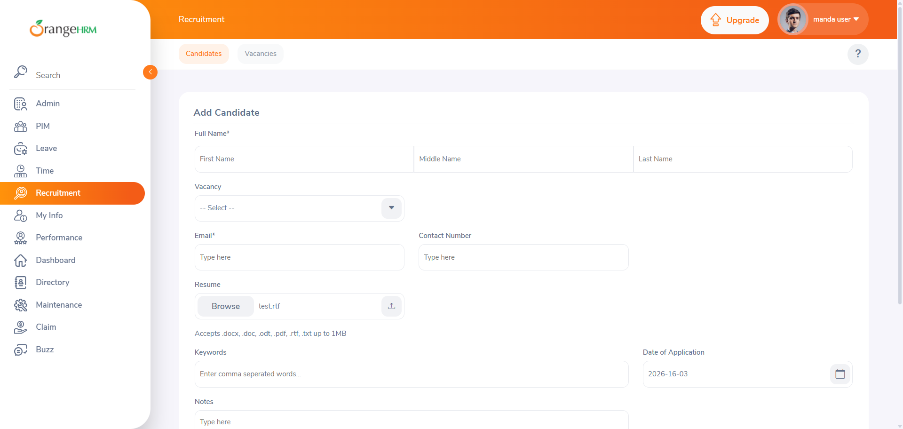
PassValidate user trying to upload different types of files with valid format in Resume field of Add Candidate formGiven User Logs in with Credentials and Navigates to Recruitment SectionWhen User Navigates to Add Candidate formAnd Uploads file of format "TXT"Then Validate if the file gets loaded successfully for the file format: "TXT"hooks.Hooks.addScreenshot(io.cucumber.java.Scenario)Step: Validate if the file gets loaded successfully for the file format: TXTScreenshot: Validate if the file gets loaded successfully for the file format: TXTPassValidate user trying to upload different types of files with valid format in Resume field of Add Candidate formGiven User Logs in with Credentials and Navigates to Recruitment SectionWhen User Navigates to Add Candidate formAnd Uploads file of format "DOC"Then Validate if the file gets loaded successfully for the file format: "DOC"hooks.Hooks.addScreenshot(io.cucumber.java.Scenario)Step: Validate if the file gets loaded successfully for the file format: DOCScreenshot: Validate if the file gets loaded successfully for the file format: DOCPassValidate if user gets appropriate error message when uploading an invalid file in Resume fieldPassValidate if user gets appropriate error message when uploading an invalid file in Resume fieldGiven User Logs in with Credentials and Navigates to Recruitment SectionWhen User Navigates to Add Candidate formAnd Uploads invalid "PNG" fileThen Validate if user gets appropriate error message for uploading a "PNG" filePassValidate if user gets appropriate error message when uploading an invalid file in Resume fieldGiven User Logs in with Credentials and Navigates to Recruitment SectionWhen User Navigates to Add Candidate formAnd Uploads invalid "HTML" fileThen Validate if user gets appropriate error message for uploading a "HTML" filePassValidate if user gets appropriate error message when uploading an invalid file in Resume fieldGiven User Logs in with Credentials and Navigates to Recruitment SectionWhen User Navigates to Add Candidate formAnd Uploads invalid "JPG" fileThen Validate if user gets appropriate error message for uploading a "JPG" filePassValidate if user gets appropriate error message when uploading an invalid file in Resume fieldGiven User Logs in with Credentials and Navigates to Recruitment SectionWhen User Navigates to Add Candidate formAnd Uploads invalid "JAVA" fileThen Validate if user gets appropriate error message for uploading a "JAVA" filePassValidate if user gets appropriate error message when uploading an invalid file in Resume fieldGiven User Logs in with Credentials and Navigates to Recruitment SectionWhen User Navigates to Add Candidate formAnd Uploads invalid "PDF" fileThen Validate if user gets appropriate error message for uploading a "PDF" filePassValidate if user gets appropriate error message when uploading an invalid file in Resume fieldGiven User Logs in with Credentials and Navigates to Recruitment SectionWhen User Navigates to Add Candidate formAnd Uploads invalid "JPG" fileThen Validate if user gets appropriate error message for uploading a "JPG" filePassValidate if user gets appropriate error message if an invalid Contact Number is enteredPassValidate if user gets appropriate error message if an invalid Contact Number is enteredGiven User Logs in with Credentials and Navigates to Recruitment SectionWhen User Navigates to Add Candidate formThen User enters Contact Number of format: "contact_num_1" and validates if error message is displayed if the entered Contact Number is invalidhooks.Hooks.addScreenshot(io.cucumber.java.Scenario)Step: User enters Contact Number of format: contact_num_1 and validates if error message is displayed if the entered Contact Number is invalidScreenshot: User enters Contact Number of format: contact_num_1 and validates if error message is displayed if the entered Contact Number is invalidPassValidate if user gets appropriate error message if an invalid Contact Number is enteredGiven User Logs in with Credentials and Navigates to Recruitment SectionWhen User Navigates to Add Candidate formThen User enters Contact Number of format: "contact_num_2" and validates if error message is displayed if the entered Contact Number is invalidhooks.Hooks.addScreenshot(io.cucumber.java.Scenario)Step: User enters Contact Number of format: contact_num_2 and validates if error message is displayed if the entered Contact Number is invalidScreenshot: User enters Contact Number of format: contact_num_2 and validates if error message is displayed if the entered Contact Number is invalidPassValidate if user gets appropriate error message if an invalid Contact Number is enteredGiven User Logs in with Credentials and Navigates to Recruitment SectionWhen User Navigates to Add Candidate formThen User enters Contact Number of format: "contact_num_3" and validates if error message is displayed if the entered Contact Number is invalidhooks.Hooks.addScreenshot(io.cucumber.java.Scenario)Step: User enters Contact Number of format: contact_num_3 and validates if error message is displayed if the entered Contact Number is invalidScreenshot: User enters Contact Number of format: contact_num_3 and validates if error message is displayed if the entered Contact Number is invalidPassValidate if user gets appropriate error message if an invalid Contact Number is enteredGiven User Logs in with Credentials and Navigates to Recruitment SectionWhen User Navigates to Add Candidate formThen User enters Contact Number of format: "contact_num_4" and validates if error message is displayed if the entered Contact Number is invalidhooks.Hooks.addScreenshot(io.cucumber.java.Scenario)Step: User enters Contact Number of format: contact_num_4 and validates if error message is displayed if the entered Contact Number is invalidScreenshot: User enters Contact Number of format: contact_num_4 and validates if error message is displayed if the entered Contact Number is invalidPassValidate if user gets appropriate error message if an invalid Contact Number is enteredGiven User Logs in with Credentials and Navigates to Recruitment SectionWhen User Navigates to Add Candidate formThen User enters Contact Number of format: "contact_num_5" and validates if error message is displayed if the entered Contact Number is invalidhooks.Hooks.addScreenshot(io.cucumber.java.Scenario)Step: User enters Contact Number of format: contact_num_5 and validates if error message is displayed if the entered Contact Number is invalidScreenshot: User enters Contact Number of format: contact_num_5 and validates if error message is displayed if the entered Contact Number is invalidPassValidate if user gets appropriate error message if an invalid Contact Number is enteredGiven User Logs in with Credentials and Navigates to Recruitment SectionWhen User Navigates to Add Candidate formThen User enters Contact Number of format: "contact_num_6" and validates if error message is displayed if the entered Contact Number is invalidhooks.Hooks.addScreenshot(io.cucumber.java.Scenario)Step: User enters Contact Number of format: contact_num_6 and validates if error message is displayed if the entered Contact Number is invalidScreenshot: User enters Contact Number of format: contact_num_6 and validates if error message is displayed if the entered Contact Number is invalidPassValidate if user gets appropriate error message if an invalid Contact Number is enteredGiven User Logs in with Credentials and Navigates to Recruitment SectionWhen User Navigates to Add Candidate formThen User enters Contact Number of format: "contact_num_7" and validates if error message is displayed if the entered Contact Number is invalidhooks.Hooks.addScreenshot(io.cucumber.java.Scenario)Step: User enters Contact Number of format: contact_num_7 and validates if error message is displayed if the entered Contact Number is invalidScreenshot: User enters Contact Number of format: contact_num_7 and validates if error message is displayed if the entered Contact Number is invalidPassValidate if user gets appropriate error message if an invalid Contact Number is enteredGiven User Logs in with Credentials and Navigates to Recruitment SectionWhen User Navigates to Add Candidate formThen User enters Contact Number of format: "contact_num_8" and validates if error message is displayed if the entered Contact Number is invalidhooks.Hooks.addScreenshot(io.cucumber.java.Scenario)Step: User enters Contact Number of format: contact_num_8 and validates if error message is displayed if the entered Contact Number is invalidScreenshot: User enters Contact Number of format: contact_num_8 and validates if error message is displayed if the entered Contact Number is invalidPassValidate if user gets appropriate error message if an invalid Contact Number is enteredGiven User Logs in with Credentials and Navigates to Recruitment SectionWhen User Navigates to Add Candidate formThen User enters Contact Number of format: "contact_num_9" and validates if error message is displayed if the entered Contact Number is invalidhooks.Hooks.addScreenshot(io.cucumber.java.Scenario)Step: User enters Contact Number of format: contact_num_9 and validates if error message is displayed if the entered Contact Number is invalidScreenshot: User enters Contact Number of format: contact_num_9 and validates if error message is displayed if the entered Contact Number is invalidPassValidate if user gets appropriate error message if an invalid Contact Number is enteredGiven User Logs in with Credentials and Navigates to Recruitment SectionWhen User Navigates to Add Candidate formThen User enters Contact Number of format: "contact_num_10" and validates if error message is displayed if the entered Contact Number is invalidhooks.Hooks.addScreenshot(io.cucumber.java.Scenario)Step: User enters Contact Number of format: contact_num_10 and validates if error message is displayed if the entered Contact Number is invalidScreenshot: User enters Contact Number of format: contact_num_10 and validates if error message is displayed if the entered Contact Number is invalid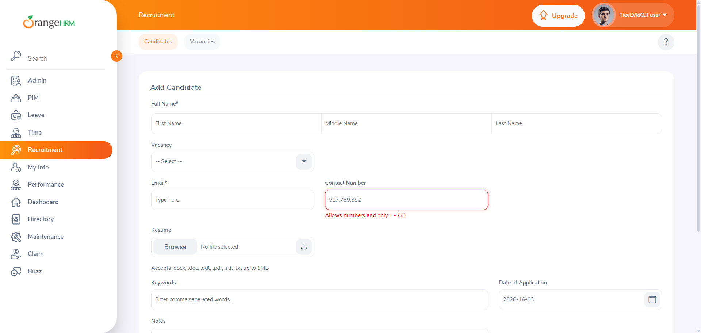
PassValidate if user gets appropriate error message if an invalid Contact Number is enteredGiven User Logs in with Credentials and Navigates to Recruitment SectionWhen User Navigates to Add Candidate formThen User enters Contact Number of format: "contact_num_11" and validates if error message is displayed if the entered Contact Number is invalidhooks.Hooks.addScreenshot(io.cucumber.java.Scenario)Step: User enters Contact Number of format: contact_num_11 and validates if error message is displayed if the entered Contact Number is invalidScreenshot: User enters Contact Number of format: contact_num_11 and validates if error message is displayed if the entered Contact Number is invalidPassValidate if user gets appropriate error message if an invalid Contact Number is enteredGiven User Logs in with Credentials and Navigates to Recruitment SectionWhen User Navigates to Add Candidate formThen User enters Contact Number of format: "contact_num_12" and validates if error message is displayed if the entered Contact Number is invalidhooks.Hooks.addScreenshot(io.cucumber.java.Scenario)Step: User enters Contact Number of format: contact_num_12 and validates if error message is displayed if the entered Contact Number is invalidScreenshot: User enters Contact Number of format: contact_num_12 and validates if error message is displayed if the entered Contact Number is invalidPassValidate if user gets appropriate error message when entering email in invalid formatPassValidate if user gets appropriate error message when entering email in invalid formatGiven User Logs in with Credentials and Navigates to Recruitment SectionWhen User Navigates to Add Candidate formThen User enters Email of format: "email_1" and validates if error message is displayed if the entered email is invalidhooks.Hooks.addScreenshot(io.cucumber.java.Scenario)Step: User enters Email of format: email_1 and validates if error message is displayed if the entered email is invalidScreenshot: User enters Email of format: email_1 and validates if error message is displayed if the entered email is invalidPassValidate if user gets appropriate error message when entering email in invalid formatGiven User Logs in with Credentials and Navigates to Recruitment SectionWhen User Navigates to Add Candidate formThen User enters Email of format: "email_2" and validates if error message is displayed if the entered email is invalidhooks.Hooks.addScreenshot(io.cucumber.java.Scenario)Step: User enters Email of format: email_2 and validates if error message is displayed if the entered email is invalidScreenshot: User enters Email of format: email_2 and validates if error message is displayed if the entered email is invalidPassValidate if user gets appropriate error message when entering email in invalid formatGiven User Logs in with Credentials and Navigates to Recruitment SectionWhen User Navigates to Add Candidate formThen User enters Email of format: "email_3" and validates if error message is displayed if the entered email is invalidhooks.Hooks.addScreenshot(io.cucumber.java.Scenario)Step: User enters Email of format: email_3 and validates if error message is displayed if the entered email is invalidScreenshot: User enters Email of format: email_3 and validates if error message is displayed if the entered email is invalidPassValidate if user gets appropriate error message when entering email in invalid formatGiven User Logs in with Credentials and Navigates to Recruitment SectionWhen User Navigates to Add Candidate formThen User enters Email of format: "email_4" and validates if error message is displayed if the entered email is invalidhooks.Hooks.addScreenshot(io.cucumber.java.Scenario)Step: User enters Email of format: email_4 and validates if error message is displayed if the entered email is invalidScreenshot: User enters Email of format: email_4 and validates if error message is displayed if the entered email is invalidPassValidate if user gets appropriate error message when entering email in invalid formatGiven User Logs in with Credentials and Navigates to Recruitment SectionWhen User Navigates to Add Candidate formThen User enters Email of format: "email_5" and validates if error message is displayed if the entered email is invalidhooks.Hooks.addScreenshot(io.cucumber.java.Scenario)Step: User enters Email of format: email_5 and validates if error message is displayed if the entered email is invalidScreenshot: User enters Email of format: email_5 and validates if error message is displayed if the entered email is invalid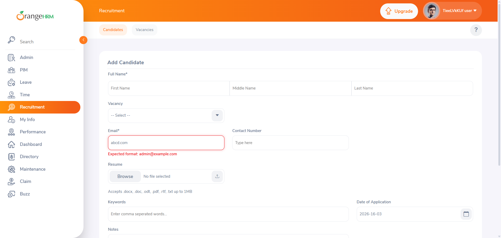
PassValidate if user gets appropriate error message when entering email in invalid formatGiven User Logs in with Credentials and Navigates to Recruitment SectionWhen User Navigates to Add Candidate formThen User enters Email of format: "email_6" and validates if error message is displayed if the entered email is invalidhooks.Hooks.addScreenshot(io.cucumber.java.Scenario)Step: User enters Email of format: email_6 and validates if error message is displayed if the entered email is invalidScreenshot: User enters Email of format: email_6 and validates if error message is displayed if the entered email is invalid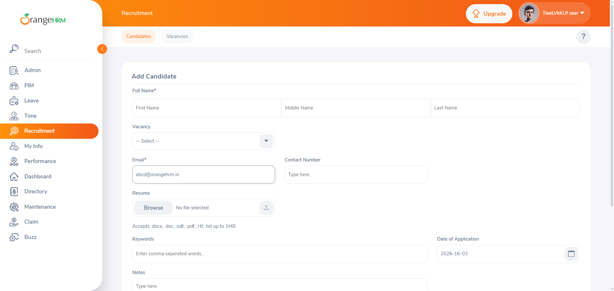
PassValidate if user can enter a date in date of Application field and gets appropriate error message only if the date is a future datePassValidate if user can enter a date in date of Application field and gets appropriate error message only if the date is a future dateGiven User Logs in with Credentials and Navigates to Recruitment SectionWhen User Navigates to Add Candidate formThen User enters Date of format: "Present" and validates if error message is displayed for future date onlyhooks.Hooks.addScreenshot(io.cucumber.java.Scenario)Step: Validate if error message is displayed for future date onlyScreenshot: Validate if error message is displayed for future date onlyPassValidate if user can enter a date in date of Application field and gets appropriate error message only if the date is a future dateGiven User Logs in with Credentials and Navigates to Recruitment SectionWhen User Navigates to Add Candidate formThen User enters Date of format: "Past" and validates if error message is displayed for future date onlyhooks.Hooks.addScreenshot(io.cucumber.java.Scenario)Step: Validate if error message is displayed for future date onlyScreenshot: Validate if error message is displayed for future date onlyPassValidate if user can enter a date in date of Application field and gets appropriate error message only if the date is a future dateGiven User Logs in with Credentials and Navigates to Recruitment SectionWhen User Navigates to Add Candidate formThen User enters Date of format: "Future" and validates if error message is displayed for future date onlyhooks.Hooks.addScreenshot(io.cucumber.java.Scenario)Step: Validate if error message is displayed for future date onlyScreenshot: Validate if error message is displayed for future date onlyPassValidate if user can enter date of format: "" in date of Application field and gets appropriate error message only if the format is invalid PassValidate if user can enter date of format: "yyyy-dd-mm" in date of Application field and gets appropriate error message only if the format is invalidGiven User Logs in with Credentials and Navigates to Recruitment SectionWhen User Navigates to Add Candidate formThen User enters Date of format: "yyyy-dd-mm" and validates if error message is displayed if the entered date is invalidhooks.Hooks.addScreenshot(io.cucumber.java.Scenario)Step: User enters Contact Number of format: yyyy-dd-mm and validates if error message is displayed if the entered Contact Number is invalidScreenshot: User enters Contact Number of format: yyyy-dd-mm and validates if error message is displayed if the entered Contact Number is invalidPassValidate if user can enter date of format: "mm-dd-yyyy" in date of Application field and gets appropriate error message only if the format is invalidGiven User Logs in with Credentials and Navigates to Recruitment SectionWhen User Navigates to Add Candidate formThen User enters Date of format: "mm-dd-yyyy" and validates if error message is displayed if the entered date is invalidhooks.Hooks.addScreenshot(io.cucumber.java.Scenario)Step: User enters Contact Number of format: mm-dd-yyyy and validates if error message is displayed if the entered Contact Number is invalidScreenshot: User enters Contact Number of format: mm-dd-yyyy and validates if error message is displayed if the entered Contact Number is invalidPassValidate if user can enter date of format: "yyyy/dd/mm" in date of Application field and gets appropriate error message only if the format is invalidGiven User Logs in with Credentials and Navigates to Recruitment SectionWhen User Navigates to Add Candidate formThen User enters Date of format: "yyyy/dd/mm" and validates if error message is displayed if the entered date is invalidhooks.Hooks.addScreenshot(io.cucumber.java.Scenario)Step: User enters Contact Number of format: yyyy/dd/mm and validates if error message is displayed if the entered Contact Number is invalidScreenshot: User enters Contact Number of format: yyyy/dd/mm and validates if error message is displayed if the entered Contact Number is invalidPassValidate if user can enter date of format: "mm/dd/yyyy" in date of Application field and gets appropriate error message only if the format is invalidGiven User Logs in with Credentials and Navigates to Recruitment SectionWhen User Navigates to Add Candidate formThen User enters Date of format: "mm/dd/yyyy" and validates if error message is displayed if the entered date is invalidhooks.Hooks.addScreenshot(io.cucumber.java.Scenario)Step: User enters Contact Number of format: mm/dd/yyyy and validates if error message is displayed if the entered Contact Number is invalidScreenshot: User enters Contact Number of format: mm/dd/yyyy and validates if error message is displayed if the entered Contact Number is invalidPassValidate if user can enter date of format: "yyyy/mm/dd" in date of Application field and gets appropriate error message only if the format is invalidGiven User Logs in with Credentials and Navigates to Recruitment SectionWhen User Navigates to Add Candidate formThen User enters Date of format: "yyyy/mm/dd" and validates if error message is displayed if the entered date is invalidhooks.Hooks.addScreenshot(io.cucumber.java.Scenario)Step: User enters Contact Number of format: yyyy/mm/dd and validates if error message is displayed if the entered Contact Number is invalidScreenshot: User enters Contact Number of format: yyyy/mm/dd and validates if error message is displayed if the entered Contact Number is invalidPassValidate if user can enter date of format: "dd/mm/yyyy" in date of Application field and gets appropriate error message only if the format is invalidGiven User Logs in with Credentials and Navigates to Recruitment SectionWhen User Navigates to Add Candidate formThen User enters Date of format: "dd/mm/yyyy" and validates if error message is displayed if the entered date is invalidhooks.Hooks.addScreenshot(io.cucumber.java.Scenario)Step: User enters Contact Number of format: dd/mm/yyyy and validates if error message is displayed if the entered Contact Number is invalidScreenshot: User enters Contact Number of format: dd/mm/yyyy and validates if error message is displayed if the entered Contact Number is invalidPassValidate if user can enter date of format: "mm-yyyy-dd" in date of Application field and gets appropriate error message only if the format is invalidGiven User Logs in with Credentials and Navigates to Recruitment SectionWhen User Navigates to Add Candidate formThen User enters Date of format: "mm-yyyy-dd" and validates if error message is displayed if the entered date is invalidhooks.Hooks.addScreenshot(io.cucumber.java.Scenario)Step: User enters Contact Number of format: mm-yyyy-dd and validates if error message is displayed if the entered Contact Number is invalidScreenshot: User enters Contact Number of format: mm-yyyy-dd and validates if error message is displayed if the entered Contact Number is invalidPassValidate if user can enter date of format: "dd-yyyy-mm" in date of Application field and gets appropriate error message only if the format is invalidGiven User Logs in with Credentials and Navigates to Recruitment SectionWhen User Navigates to Add Candidate formThen User enters Date of format: "dd-yyyy-mm" and validates if error message is displayed if the entered date is invalidhooks.Hooks.addScreenshot(io.cucumber.java.Scenario)Step: User enters Contact Number of format: dd-yyyy-mm and validates if error message is displayed if the entered Contact Number is invalidScreenshot: User enters Contact Number of format: dd-yyyy-mm and validates if error message is displayed if the entered Contact Number is invalidPassValidate if user can enter date of format: "mm/yyyy/dd" in date of Application field and gets appropriate error message only if the format is invalidGiven User Logs in with Credentials and Navigates to Recruitment SectionWhen User Navigates to Add Candidate formThen User enters Date of format: "mm/yyyy/dd" and validates if error message is displayed if the entered date is invalidhooks.Hooks.addScreenshot(io.cucumber.java.Scenario)Step: User enters Contact Number of format: mm/yyyy/dd and validates if error message is displayed if the entered Contact Number is invalidScreenshot: User enters Contact Number of format: mm/yyyy/dd and validates if error message is displayed if the entered Contact Number is invalidPassValidate if user can enter date of format: "dd/yyyy/mm" in date of Application field and gets appropriate error message only if the format is invalidGiven User Logs in with Credentials and Navigates to Recruitment SectionWhen User Navigates to Add Candidate formThen User enters Date of format: "dd/yyyy/mm" and validates if error message is displayed if the entered date is invalidhooks.Hooks.addScreenshot(io.cucumber.java.Scenario)Step: User enters Contact Number of format: dd/yyyy/mm and validates if error message is displayed if the entered Contact Number is invalidScreenshot: User enters Contact Number of format: dd/yyyy/mm and validates if error message is displayed if the entered Contact Number is invalidPassValidate if user can enter date of format: "ddmmyyyy" in date of Application field and gets appropriate error message only if the format is invalidGiven User Logs in with Credentials and Navigates to Recruitment SectionWhen User Navigates to Add Candidate formThen User enters Date of format: "ddmmyyyy" and validates if error message is displayed if the entered date is invalidhooks.Hooks.addScreenshot(io.cucumber.java.Scenario)Step: User enters Contact Number of format: ddmmyyyy and validates if error message is displayed if the entered Contact Number is invalidScreenshot: User enters Contact Number of format: ddmmyyyy and validates if error message is displayed if the entered Contact Number is invalidPassValidate if user can enter date of format: "yyyyddmm" in date of Application field and gets appropriate error message only if the format is invalidGiven User Logs in with Credentials and Navigates to Recruitment SectionWhen User Navigates to Add Candidate formThen User enters Date of format: "yyyyddmm" and validates if error message is displayed if the entered date is invalidhooks.Hooks.addScreenshot(io.cucumber.java.Scenario)Step: User enters Contact Number of format: yyyyddmm and validates if error message is displayed if the entered Contact Number is invalidScreenshot: User enters Contact Number of format: yyyyddmm and validates if error message is displayed if the entered Contact Number is invalidPassValidate if user can enter date of format: "mmddyyyy" in date of Application field and gets appropriate error message only if the format is invalidGiven User Logs in with Credentials and Navigates to Recruitment SectionWhen User Navigates to Add Candidate formThen User enters Date of format: "mmddyyyy" and validates if error message is displayed if the entered date is invalidhooks.Hooks.addScreenshot(io.cucumber.java.Scenario)Step: User enters Contact Number of format: mmddyyyy and validates if error message is displayed if the entered Contact Number is invalidScreenshot: User enters Contact Number of format: mmddyyyy and validates if error message is displayed if the entered Contact Number is invalidPassValidate if user can enter date of format: "yyyymmdd" in date of Application field and gets appropriate error message only if the format is invalidGiven User Logs in with Credentials and Navigates to Recruitment SectionWhen User Navigates to Add Candidate formThen User enters Date of format: "yyyymmdd" and validates if error message is displayed if the entered date is invalidhooks.Hooks.addScreenshot(io.cucumber.java.Scenario)Step: User enters Contact Number of format: yyyymmdd and validates if error message is displayed if the entered Contact Number is invalidScreenshot: User enters Contact Number of format: yyyymmdd and validates if error message is displayed if the entered Contact Number is invalidPassValidate if user can enter date of format: "ddyyyymm" in date of Application field and gets appropriate error message only if the format is invalidGiven User Logs in with Credentials and Navigates to Recruitment SectionWhen User Navigates to Add Candidate formThen User enters Date of format: "ddyyyymm" and validates if error message is displayed if the entered date is invalidhooks.Hooks.addScreenshot(io.cucumber.java.Scenario)Step: User enters Contact Number of format: ddyyyymm and validates if error message is displayed if the entered Contact Number is invalidScreenshot: User enters Contact Number of format: ddyyyymm and validates if error message is displayed if the entered Contact Number is invalidPassValidate if user can enter date of format: "mmyyyydd" in date of Application field and gets appropriate error message only if the format is invalidGiven User Logs in with Credentials and Navigates to Recruitment SectionWhen User Navigates to Add Candidate formThen User enters Date of format: "mmyyyydd" and validates if error message is displayed if the entered date is invalidhooks.Hooks.addScreenshot(io.cucumber.java.Scenario)Step: User enters Contact Number of format: mmyyyydd and validates if error message is displayed if the entered Contact Number is invalidScreenshot: User enters Contact Number of format: mmyyyydd and validates if error message is displayed if the entered Contact Number is invalidPassValidate if user can enter date of format: "dd-mm-yyyy" in date of Application field and gets appropriate error message only if the format is invalidGiven User Logs in with Credentials and Navigates to Recruitment SectionWhen User Navigates to Add Candidate formThen User enters Date of format: "dd-mm-yyyy" and validates if error message is displayed if the entered date is invalidhooks.Hooks.addScreenshot(io.cucumber.java.Scenario)Step: User enters Contact Number of format: dd-mm-yyyy and validates if error message is displayed if the entered Contact Number is invalidScreenshot: User enters Contact Number of format: dd-mm-yyyy and validates if error message is displayed if the entered Contact Number is invalidFailValidate if user can enter date of format: "" in date field of Schedule Interview screen and gets appropriate error message only if the format is invalid FailValidate if user can enter date of format: "yyyy-dd-mm" in date field of Schedule Interview screen and gets appropriate error message only if the format is invalidGiven User Logs in with Credentials and Navigates to Recruitment SectionWhen User filter Candidate list by "Shortlisted" CandidatesAnd User clicks view iconStep skippedAnd Validate if Candidate details screen is visibleStep skippedAnd Navigate to Schedule Interview ScreenStep skippedThen User enters Date of format: "yyyy-dd-mm" and validates if error message is displayed if the entered date is invalidStep skippedFailValidate if user can enter date of format: "mm-dd-yyyy" in date field of Schedule Interview screen and gets appropriate error message only if the format is invalidGiven User Logs in with Credentials and Navigates to Recruitment SectionWhen User filter Candidate list by "Shortlisted" CandidatesAnd User clicks view iconStep skippedAnd Validate if Candidate details screen is visibleStep skippedAnd Navigate to Schedule Interview ScreenStep skippedThen User enters Date of format: "mm-dd-yyyy" and validates if error message is displayed if the entered date is invalidStep skippedFailValidate if user can enter date of format: "yyyy/dd/mm" in date field of Schedule Interview screen and gets appropriate error message only if the format is invalidGiven User Logs in with Credentials and Navigates to Recruitment SectionWhen User filter Candidate list by "Shortlisted" CandidatesAnd User clicks view iconStep skippedAnd Validate if Candidate details screen is visibleStep skippedAnd Navigate to Schedule Interview ScreenStep skippedThen User enters Date of format: "yyyy/dd/mm" and validates if error message is displayed if the entered date is invalidStep skippedFailValidate if user can enter date of format: "mm/dd/yyyy" in date field of Schedule Interview screen and gets appropriate error message only if the format is invalidGiven User Logs in with Credentials and Navigates to Recruitment SectionWhen User filter Candidate list by "Shortlisted" CandidatesAnd User clicks view iconStep skippedAnd Validate if Candidate details screen is visibleStep skippedAnd Navigate to Schedule Interview ScreenStep skippedThen User enters Date of format: "mm/dd/yyyy" and validates if error message is displayed if the entered date is invalidStep skippedPassValidate if user can enter date of format: "yyyy/mm/dd" in date field of Schedule Interview screen and gets appropriate error message only if the format is invalidGiven User Logs in with Credentials and Navigates to Recruitment SectionWhen User filter Candidate list by "Shortlisted" CandidatesAnd User clicks view iconAnd Validate if Candidate details screen is visiblehooks.Hooks.addScreenshot(io.cucumber.java.Scenario)Step: Validate if Candidate details screen is visibleScreenshot: Validate if Candidate details screen is visibleAnd Navigate to Schedule Interview ScreenThen User enters Date of format: "yyyy/mm/dd" and validates if error message is displayed if the entered date is invalidhooks.Hooks.addScreenshot(io.cucumber.java.Scenario)Step: User enters Contact Number of format: yyyy/mm/dd and validates if error message is displayed if the entered Contact Number is invalidScreenshot: User enters Contact Number of format: yyyy/mm/dd and validates if error message is displayed if the entered Contact Number is invalidPassValidate if user can enter date of format: "dd/mm/yyyy" in date field of Schedule Interview screen and gets appropriate error message only if the format is invalidGiven User Logs in with Credentials and Navigates to Recruitment SectionWhen User filter Candidate list by "Shortlisted" CandidatesAnd User clicks view iconAnd Validate if Candidate details screen is visiblehooks.Hooks.addScreenshot(io.cucumber.java.Scenario)Step: Validate if Candidate details screen is visibleScreenshot: Validate if Candidate details screen is visibleAnd Navigate to Schedule Interview ScreenThen User enters Date of format: "dd/mm/yyyy" and validates if error message is displayed if the entered date is invalidhooks.Hooks.addScreenshot(io.cucumber.java.Scenario)Step: User enters Contact Number of format: dd/mm/yyyy and validates if error message is displayed if the entered Contact Number is invalidScreenshot: User enters Contact Number of format: dd/mm/yyyy and validates if error message is displayed if the entered Contact Number is invalidPassValidate if user can enter date of format: "mm-yyyy-dd" in date field of Schedule Interview screen and gets appropriate error message only if the format is invalidGiven User Logs in with Credentials and Navigates to Recruitment SectionWhen User filter Candidate list by "Shortlisted" CandidatesAnd User clicks view iconAnd Validate if Candidate details screen is visiblehooks.Hooks.addScreenshot(io.cucumber.java.Scenario)Step: Validate if Candidate details screen is visibleScreenshot: Validate if Candidate details screen is visibleAnd Navigate to Schedule Interview ScreenThen User enters Date of format: "mm-yyyy-dd" and validates if error message is displayed if the entered date is invalidhooks.Hooks.addScreenshot(io.cucumber.java.Scenario)Step: User enters Contact Number of format: mm-yyyy-dd and validates if error message is displayed if the entered Contact Number is invalidScreenshot: User enters Contact Number of format: mm-yyyy-dd and validates if error message is displayed if the entered Contact Number is invalid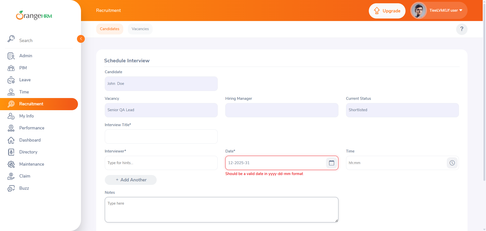
FailValidate if user can enter date of format: "dd-yyyy-mm" in date field of Schedule Interview screen and gets appropriate error message only if the format is invalidGiven User Logs in with Credentials and Navigates to Recruitment SectionWhen User filter Candidate list by "Shortlisted" CandidatesAnd User clicks view iconAnd Validate if Candidate details screen is visiblehooks.Hooks.addScreenshot(io.cucumber.java.Scenario)Step: Validate if Candidate details screen is visibleScreenshot: Validate if Candidate details screen is visibleAnd Navigate to Schedule Interview ScreenThen User enters Date of format: "dd-yyyy-mm" and validates if error message is displayed if the entered date is invalidis not clickable at point (700, 662). Other element would receive the click:...(Session info: chrome=145.0.7632.160) Build info: version: '4.34.0', revision: '707dcb4246*' System info: os.name: 'Windows 11', os.arch: 'amd64', os.version: '10.0', java.version: '21.0.9' Driver info: org.openqa.selenium.chrome.ChromeDriver Command: [1956355df86121b301d00920a8ac65f7, clickElement {id=f.DB40890D17A9217054AA336BD28A12B4.d.ED8AA942492D6CBB881DE41E206BD399.e.178}] Capabilities {acceptInsecureCerts: false, browserName: chrome, browserVersion: 145.0.7632.160, chrome: {chromedriverVersion: 145.0.7632.117 (de4e5d6e13b..., userDataDir: C:\Users\abhij\AppData\Loca...}, fedcm:accounts: true, goog:chromeOptions: {debuggerAddress: localhost:59231}, goog:processID: 8984, networkConnectionEnabled: false, pageLoadStrategy: normal, platformName: windows, proxy: Proxy(), se:cdp: ws://localhost:59231/devtoo..., se:cdpVersion: 145.0.7632.160, setWindowRect: true, strictFileInteractability: false, timeouts: {implicit: 0, pageLoad: 300000, script: 30000}, unhandledPromptBehavior: dismiss and notify, webauthn:extension:credBlob: true, webauthn:extension:largeBlob: true, webauthn:extension:minPinLength: true, webauthn:extension:prf: true, webauthn:virtualAuthenticators: true} Element: [[ChromeDriver: chrome on windows (1956355df86121b301d00920a8ac65f7)] -> xpath: //label[contains(text(), 'Notes')]/parent::div/following-sibling::div/textarea] Session ID: 1956355df86121b301d00920a8ac65f7 at java.base/jdk.internal.reflect.DirectConstructorHandleAccessor.newInstance(DirectConstructorHandleAccessor.java:62) at java.base/java.lang.reflect.Constructor.newInstanceWithCaller(Constructor.java:502) at java.base/java.lang.reflect.Constructor.newInstance(Constructor.java:486) at org.openqa.selenium.remote.ErrorCodec.decode(ErrorCodec.java:167) at org.openqa.selenium.remote.codec.w3c.W3CHttpResponseCodec.decode(W3CHttpResponseCodec.java:138) at org.openqa.selenium.remote.codec.w3c.W3CHttpResponseCodec.decode(W3CHttpResponseCodec.java:50) at org.openqa.selenium.remote.HttpCommandExecutor.execute(HttpCommandExecutor.java:215) at org.openqa.selenium.remote.service.DriverCommandExecutor.invokeExecute(DriverCommandExecutor.java:216) at org.openqa.selenium.remote.service.DriverCommandExecutor.execute(DriverCommandExecutor.java:174) at org.openqa.selenium.remote.RemoteWebDriver.execute(RemoteWebDriver.java:544) at org.openqa.selenium.remote.RemoteWebElement.execute(RemoteWebElement.java:223) at org.openqa.selenium.remote.RemoteWebElement.click(RemoteWebElement.java:76) at java.base/jdk.internal.reflect.DirectMethodHandleAccessor.invoke(DirectMethodHandleAccessor.java:103) at java.base/java.lang.reflect.Method.invoke(Method.java:580) at org.openqa.selenium.support.pagefactory.internal.LocatingElementHandler.invoke(LocatingElementHandler.java:51) at jdk.proxy2/jdk.proxy2.$Proxy42.click(Unknown Source) at stepDefinition.Candidate_test.validate_date_format_error(Candidate_test.java:1006) at ✽.User enters Date of format: "dd-yyyy-mm" and validates if error message is displayed if the entered date is invalid(file:///C:/Users/abhij/OneDrive/Desktop/OrangeHRM_Test_Suite/./src/test/java/features/AddCandidates.feature:114)hooks.Hooks.addScreenshot(io.cucumber.java.Scenario)Step: User enters Contact Number of format: dd-yyyy-mm and validates if error message is displayed if the entered Contact Number is invalidScreenshot: User enters Contact Number of format: dd-yyyy-mm and validates if error message is displayed if the entered Contact Number is invalidPassValidate if user can enter date of format: "mm/yyyy/dd" in date field of Schedule Interview screen and gets appropriate error message only if the format is invalidGiven User Logs in with Credentials and Navigates to Recruitment SectionWhen User filter Candidate list by "Shortlisted" CandidatesAnd User clicks view iconAnd Validate if Candidate details screen is visiblehooks.Hooks.addScreenshot(io.cucumber.java.Scenario)Step: Validate if Candidate details screen is visibleScreenshot: Validate if Candidate details screen is visibleAnd Navigate to Schedule Interview ScreenThen User enters Date of format: "mm/yyyy/dd" and validates if error message is displayed if the entered date is invalidhooks.Hooks.addScreenshot(io.cucumber.java.Scenario)Step: User enters Contact Number of format: mm/yyyy/dd and validates if error message is displayed if the entered Contact Number is invalidScreenshot: User enters Contact Number of format: mm/yyyy/dd and validates if error message is displayed if the entered Contact Number is invalid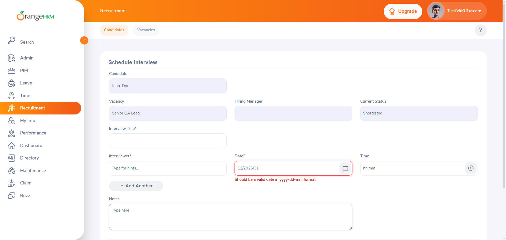
FailValidate if user can enter date of format: "dd/yyyy/mm" in date field of Schedule Interview screen and gets appropriate error message only if the format is invalidGiven User Logs in with Credentials and Navigates to Recruitment SectionWhen User filter Candidate list by "Shortlisted" CandidatesAnd User clicks view iconStep skippedAnd Validate if Candidate details screen is visibleStep skippedAnd Navigate to Schedule Interview ScreenStep skippedThen User enters Date of format: "dd/yyyy/mm" and validates if error message is displayed if the entered date is invalidStep skippedFailValidate if user can enter date of format: "ddmmyyyy" in date field of Schedule Interview screen and gets appropriate error message only if the format is invalidGiven User Logs in with Credentials and Navigates to Recruitment SectionWhen User filter Candidate list by "Shortlisted" CandidatesAnd User clicks view iconAnd Validate if Candidate details screen is visiblehooks.Hooks.addScreenshot(io.cucumber.java.Scenario)Step: Validate if Candidate details screen is visibleScreenshot: Validate if Candidate details screen is visibleAnd Navigate to Schedule Interview ScreenThen User enters Date of format: "ddmmyyyy" and validates if error message is displayed if the entered date is invalidis not clickable at point (700, 662). Other element would receive the click:...(Session info: chrome=145.0.7632.160) Build info: version: '4.34.0', revision: '707dcb4246*' System info: os.name: 'Windows 11', os.arch: 'amd64', os.version: '10.0', java.version: '21.0.9' Driver info: org.openqa.selenium.chrome.ChromeDriver Command: [b4917f9560a8d653df8bfc814162f51a, clickElement {id=f.340BA799886043918B9A4A766E0E6F14.d.B46638E2EB611423F1ED86E35ED1588A.e.182}] Capabilities {acceptInsecureCerts: false, browserName: chrome, browserVersion: 145.0.7632.160, chrome: {chromedriverVersion: 145.0.7632.117 (de4e5d6e13b..., userDataDir: C:\Users\abhij\AppData\Loca...}, fedcm:accounts: true, goog:chromeOptions: {debuggerAddress: localhost:62737}, goog:processID: 10304, networkConnectionEnabled: false, pageLoadStrategy: normal, platformName: windows, proxy: Proxy(), se:cdp: ws://localhost:62737/devtoo..., se:cdpVersion: 145.0.7632.160, setWindowRect: true, strictFileInteractability: false, timeouts: {implicit: 0, pageLoad: 300000, script: 30000}, unhandledPromptBehavior: dismiss and notify, webauthn:extension:credBlob: true, webauthn:extension:largeBlob: true, webauthn:extension:minPinLength: true, webauthn:extension:prf: true, webauthn:virtualAuthenticators: true} Element: [[ChromeDriver: chrome on windows (b4917f9560a8d653df8bfc814162f51a)] -> xpath: //label[contains(text(), 'Notes')]/parent::div/following-sibling::div/textarea] Session ID: b4917f9560a8d653df8bfc814162f51a at java.base/jdk.internal.reflect.DirectConstructorHandleAccessor.newInstance(DirectConstructorHandleAccessor.java:62) at java.base/java.lang.reflect.Constructor.newInstanceWithCaller(Constructor.java:502) at java.base/java.lang.reflect.Constructor.newInstance(Constructor.java:486) at org.openqa.selenium.remote.ErrorCodec.decode(ErrorCodec.java:167) at org.openqa.selenium.remote.codec.w3c.W3CHttpResponseCodec.decode(W3CHttpResponseCodec.java:138) at org.openqa.selenium.remote.codec.w3c.W3CHttpResponseCodec.decode(W3CHttpResponseCodec.java:50) at org.openqa.selenium.remote.HttpCommandExecutor.execute(HttpCommandExecutor.java:215) at org.openqa.selenium.remote.service.DriverCommandExecutor.invokeExecute(DriverCommandExecutor.java:216) at org.openqa.selenium.remote.service.DriverCommandExecutor.execute(DriverCommandExecutor.java:174) at org.openqa.selenium.remote.RemoteWebDriver.execute(RemoteWebDriver.java:544) at org.openqa.selenium.remote.RemoteWebElement.execute(RemoteWebElement.java:223) at org.openqa.selenium.remote.RemoteWebElement.click(RemoteWebElement.java:76) at java.base/jdk.internal.reflect.DirectMethodHandleAccessor.invoke(DirectMethodHandleAccessor.java:103) at java.base/java.lang.reflect.Method.invoke(Method.java:580) at org.openqa.selenium.support.pagefactory.internal.LocatingElementHandler.invoke(LocatingElementHandler.java:51) at jdk.proxy2/jdk.proxy2.$Proxy42.click(Unknown Source) at stepDefinition.Candidate_test.validate_date_format_error(Candidate_test.java:1006) at ✽.User enters Date of format: "ddmmyyyy" and validates if error message is displayed if the entered date is invalid(file:///C:/Users/abhij/OneDrive/Desktop/OrangeHRM_Test_Suite/./src/test/java/features/AddCandidates.feature:114)hooks.Hooks.addScreenshot(io.cucumber.java.Scenario)Step: User enters Contact Number of format: ddmmyyyy and validates if error message is displayed if the entered Contact Number is invalidScreenshot: User enters Contact Number of format: ddmmyyyy and validates if error message is displayed if the entered Contact Number is invalidPassValidate if user can enter date of format: "yyyyddmm" in date field of Schedule Interview screen and gets appropriate error message only if the format is invalidGiven User Logs in with Credentials and Navigates to Recruitment SectionWhen User filter Candidate list by "Shortlisted" CandidatesAnd User clicks view iconAnd Validate if Candidate details screen is visiblehooks.Hooks.addScreenshot(io.cucumber.java.Scenario)Step: Validate if Candidate details screen is visibleScreenshot: Validate if Candidate details screen is visibleAnd Navigate to Schedule Interview ScreenThen User enters Date of format: "yyyyddmm" and validates if error message is displayed if the entered date is invalidhooks.Hooks.addScreenshot(io.cucumber.java.Scenario)Step: User enters Contact Number of format: yyyyddmm and validates if error message is displayed if the entered Contact Number is invalidScreenshot: User enters Contact Number of format: yyyyddmm and validates if error message is displayed if the entered Contact Number is invalidFailValidate if user can enter date of format: "mmddyyyy" in date field of Schedule Interview screen and gets appropriate error message only if the format is invalidGiven User Logs in with Credentials and Navigates to Recruitment SectionWhen User filter Candidate list by "Shortlisted" CandidatesAnd User clicks view iconAnd Validate if Candidate details screen is visiblehooks.Hooks.addScreenshot(io.cucumber.java.Scenario)Step: Validate if Candidate details screen is visibleScreenshot: Validate if Candidate details screen is visibleAnd Navigate to Schedule Interview ScreenThen User enters Date of format: "mmddyyyy" and validates if error message is displayed if the entered date is invalidis not clickable at point (700, 662). Other element would receive the click:...(Session info: chrome=145.0.7632.160) Build info: version: '4.34.0', revision: '707dcb4246*' System info: os.name: 'Windows 11', os.arch: 'amd64', os.version: '10.0', java.version: '21.0.9' Driver info: org.openqa.selenium.chrome.ChromeDriver Command: [2ddd30854a849db816c50856e6f4b18c, clickElement {id=f.D2C4A12FB106737556C4406D0A5EE23C.d.AD8BC2808141B02C2AB68F8DE42F52C9.e.183}] Capabilities {acceptInsecureCerts: false, browserName: chrome, browserVersion: 145.0.7632.160, chrome: {chromedriverVersion: 145.0.7632.117 (de4e5d6e13b..., userDataDir: C:\Users\abhij\AppData\Loca...}, fedcm:accounts: true, goog:chromeOptions: {debuggerAddress: localhost:49880}, goog:processID: 20172, networkConnectionEnabled: false, pageLoadStrategy: normal, platformName: windows, proxy: Proxy(), se:cdp: ws://localhost:49880/devtoo..., se:cdpVersion: 145.0.7632.160, setWindowRect: true, strictFileInteractability: false, timeouts: {implicit: 0, pageLoad: 300000, script: 30000}, unhandledPromptBehavior: dismiss and notify, webauthn:extension:credBlob: true, webauthn:extension:largeBlob: true, webauthn:extension:minPinLength: true, webauthn:extension:prf: true, webauthn:virtualAuthenticators: true} Element: [[ChromeDriver: chrome on windows (2ddd30854a849db816c50856e6f4b18c)] -> xpath: //label[contains(text(), 'Notes')]/parent::div/following-sibling::div/textarea] Session ID: 2ddd30854a849db816c50856e6f4b18c at java.base/jdk.internal.reflect.DirectConstructorHandleAccessor.newInstance(DirectConstructorHandleAccessor.java:62) at java.base/java.lang.reflect.Constructor.newInstanceWithCaller(Constructor.java:502) at java.base/java.lang.reflect.Constructor.newInstance(Constructor.java:486) at org.openqa.selenium.remote.ErrorCodec.decode(ErrorCodec.java:167) at org.openqa.selenium.remote.codec.w3c.W3CHttpResponseCodec.decode(W3CHttpResponseCodec.java:138) at org.openqa.selenium.remote.codec.w3c.W3CHttpResponseCodec.decode(W3CHttpResponseCodec.java:50) at org.openqa.selenium.remote.HttpCommandExecutor.execute(HttpCommandExecutor.java:215) at org.openqa.selenium.remote.service.DriverCommandExecutor.invokeExecute(DriverCommandExecutor.java:216) at org.openqa.selenium.remote.service.DriverCommandExecutor.execute(DriverCommandExecutor.java:174) at org.openqa.selenium.remote.RemoteWebDriver.execute(RemoteWebDriver.java:544) at org.openqa.selenium.remote.RemoteWebElement.execute(RemoteWebElement.java:223) at org.openqa.selenium.remote.RemoteWebElement.click(RemoteWebElement.java:76) at java.base/jdk.internal.reflect.DirectMethodHandleAccessor.invoke(DirectMethodHandleAccessor.java:103) at java.base/java.lang.reflect.Method.invoke(Method.java:580) at org.openqa.selenium.support.pagefactory.internal.LocatingElementHandler.invoke(LocatingElementHandler.java:51) at jdk.proxy2/jdk.proxy2.$Proxy42.click(Unknown Source) at stepDefinition.Candidate_test.validate_date_format_error(Candidate_test.java:1006) at ✽.User enters Date of format: "mmddyyyy" and validates if error message is displayed if the entered date is invalid(file:///C:/Users/abhij/OneDrive/Desktop/OrangeHRM_Test_Suite/./src/test/java/features/AddCandidates.feature:114)hooks.Hooks.addScreenshot(io.cucumber.java.Scenario)Step: User enters Contact Number of format: mmddyyyy and validates if error message is displayed if the entered Contact Number is invalidScreenshot: User enters Contact Number of format: mmddyyyy and validates if error message is displayed if the entered Contact Number is invalidFailValidate if user can enter date of format: "yyyymmdd" in date field of Schedule Interview screen and gets appropriate error message only if the format is invalidGiven User Logs in with Credentials and Navigates to Recruitment SectionWhen User filter Candidate list by "Shortlisted" CandidatesAnd User clicks view iconAnd Validate if Candidate details screen is visiblehooks.Hooks.addScreenshot(io.cucumber.java.Scenario)Step: Validate if Candidate details screen is visibleScreenshot: Validate if Candidate details screen is visibleAnd Navigate to Schedule Interview ScreenThen User enters Date of format: "yyyymmdd" and validates if error message is displayed if the entered date is invalidis not clickable at point (700, 662). Other element would receive the click:...(Session info: chrome=145.0.7632.160) Build info: version: '4.34.0', revision: '707dcb4246*' System info: os.name: 'Windows 11', os.arch: 'amd64', os.version: '10.0', java.version: '21.0.9' Driver info: org.openqa.selenium.chrome.ChromeDriver Command: [aa1ccfafda388fea8872daa22ef82bd4, clickElement {id=f.60E3EFA150373C43A18541CBB5766526.d.1415B06DFC934974C5C10962721AE94C.e.180}] Capabilities {acceptInsecureCerts: false, browserName: chrome, browserVersion: 145.0.7632.160, chrome: {chromedriverVersion: 145.0.7632.117 (de4e5d6e13b..., userDataDir: C:\Users\abhij\AppData\Loca...}, fedcm:accounts: true, goog:chromeOptions: {debuggerAddress: localhost:64351}, goog:processID: 21508, networkConnectionEnabled: false, pageLoadStrategy: normal, platformName: windows, proxy: Proxy(), se:cdp: ws://localhost:64351/devtoo..., se:cdpVersion: 145.0.7632.160, setWindowRect: true, strictFileInteractability: false, timeouts: {implicit: 0, pageLoad: 300000, script: 30000}, unhandledPromptBehavior: dismiss and notify, webauthn:extension:credBlob: true, webauthn:extension:largeBlob: true, webauthn:extension:minPinLength: true, webauthn:extension:prf: true, webauthn:virtualAuthenticators: true} Element: [[ChromeDriver: chrome on windows (aa1ccfafda388fea8872daa22ef82bd4)] -> xpath: //label[contains(text(), 'Notes')]/parent::div/following-sibling::div/textarea] Session ID: aa1ccfafda388fea8872daa22ef82bd4 at java.base/jdk.internal.reflect.DirectConstructorHandleAccessor.newInstance(DirectConstructorHandleAccessor.java:62) at java.base/java.lang.reflect.Constructor.newInstanceWithCaller(Constructor.java:502) at java.base/java.lang.reflect.Constructor.newInstance(Constructor.java:486) at org.openqa.selenium.remote.ErrorCodec.decode(ErrorCodec.java:167) at org.openqa.selenium.remote.codec.w3c.W3CHttpResponseCodec.decode(W3CHttpResponseCodec.java:138) at org.openqa.selenium.remote.codec.w3c.W3CHttpResponseCodec.decode(W3CHttpResponseCodec.java:50) at org.openqa.selenium.remote.HttpCommandExecutor.execute(HttpCommandExecutor.java:215) at org.openqa.selenium.remote.service.DriverCommandExecutor.invokeExecute(DriverCommandExecutor.java:216) at org.openqa.selenium.remote.service.DriverCommandExecutor.execute(DriverCommandExecutor.java:174) at org.openqa.selenium.remote.RemoteWebDriver.execute(RemoteWebDriver.java:544) at org.openqa.selenium.remote.RemoteWebElement.execute(RemoteWebElement.java:223) at org.openqa.selenium.remote.RemoteWebElement.click(RemoteWebElement.java:76) at java.base/jdk.internal.reflect.DirectMethodHandleAccessor.invoke(DirectMethodHandleAccessor.java:103) at java.base/java.lang.reflect.Method.invoke(Method.java:580) at org.openqa.selenium.support.pagefactory.internal.LocatingElementHandler.invoke(LocatingElementHandler.java:51) at jdk.proxy2/jdk.proxy2.$Proxy42.click(Unknown Source) at stepDefinition.Candidate_test.validate_date_format_error(Candidate_test.java:1006) at ✽.User enters Date of format: "yyyymmdd" and validates if error message is displayed if the entered date is invalid(file:///C:/Users/abhij/OneDrive/Desktop/OrangeHRM_Test_Suite/./src/test/java/features/AddCandidates.feature:114)hooks.Hooks.addScreenshot(io.cucumber.java.Scenario)Step: User enters Contact Number of format: yyyymmdd and validates if error message is displayed if the entered Contact Number is invalidScreenshot: User enters Contact Number of format: yyyymmdd and validates if error message is displayed if the entered Contact Number is invalidPassValidate if user can enter date of format: "ddyyyymm" in date field of Schedule Interview screen and gets appropriate error message only if the format is invalidGiven User Logs in with Credentials and Navigates to Recruitment SectionWhen User filter Candidate list by "Shortlisted" CandidatesAnd User clicks view iconAnd Validate if Candidate details screen is visiblehooks.Hooks.addScreenshot(io.cucumber.java.Scenario)Step: Validate if Candidate details screen is visibleScreenshot: Validate if Candidate details screen is visibleAnd Navigate to Schedule Interview ScreenThen User enters Date of format: "ddyyyymm" and validates if error message is displayed if the entered date is invalidhooks.Hooks.addScreenshot(io.cucumber.java.Scenario)Step: User enters Contact Number of format: ddyyyymm and validates if error message is displayed if the entered Contact Number is invalidScreenshot: User enters Contact Number of format: ddyyyymm and validates if error message is displayed if the entered Contact Number is invalidFailValidate if user can enter date of format: "mmyyyydd" in date field of Schedule Interview screen and gets appropriate error message only if the format is invalidGiven User Logs in with Credentials and Navigates to Recruitment SectionWhen User filter Candidate list by "Shortlisted" CandidatesAnd User clicks view iconAnd Validate if Candidate details screen is visiblehooks.Hooks.addScreenshot(io.cucumber.java.Scenario)Step: Validate if Candidate details screen is visibleScreenshot: Validate if Candidate details screen is visibleAnd Navigate to Schedule Interview ScreenThen User enters Date of format: "mmyyyydd" and validates if error message is displayed if the entered date is invalidis not clickable at point (700, 662). Other element would receive the click:...(Session info: chrome=145.0.7632.160) Build info: version: '4.34.0', revision: '707dcb4246*' System info: os.name: 'Windows 11', os.arch: 'amd64', os.version: '10.0', java.version: '21.0.9' Driver info: org.openqa.selenium.chrome.ChromeDriver Command: [5e639934a2af295842bd7f7ccb970d46, clickElement {id=f.94B4290672D8A5B37BE09A301F9E37D3.d.80CDBF224CA756C46C673F068962E52E.e.180}] Capabilities {acceptInsecureCerts: false, browserName: chrome, browserVersion: 145.0.7632.160, chrome: {chromedriverVersion: 145.0.7632.117 (de4e5d6e13b..., userDataDir: C:\Users\abhij\AppData\Loca...}, fedcm:accounts: true, goog:chromeOptions: {debuggerAddress: localhost:65033}, goog:processID: 19280, networkConnectionEnabled: false, pageLoadStrategy: normal, platformName: windows, proxy: Proxy(), se:cdp: ws://localhost:65033/devtoo..., se:cdpVersion: 145.0.7632.160, setWindowRect: true, strictFileInteractability: false, timeouts: {implicit: 0, pageLoad: 300000, script: 30000}, unhandledPromptBehavior: dismiss and notify, webauthn:extension:credBlob: true, webauthn:extension:largeBlob: true, webauthn:extension:minPinLength: true, webauthn:extension:prf: true, webauthn:virtualAuthenticators: true} Element: [[ChromeDriver: chrome on windows (5e639934a2af295842bd7f7ccb970d46)] -> xpath: //label[contains(text(), 'Notes')]/parent::div/following-sibling::div/textarea] Session ID: 5e639934a2af295842bd7f7ccb970d46 at java.base/jdk.internal.reflect.DirectConstructorHandleAccessor.newInstance(DirectConstructorHandleAccessor.java:62) at java.base/java.lang.reflect.Constructor.newInstanceWithCaller(Constructor.java:502) at java.base/java.lang.reflect.Constructor.newInstance(Constructor.java:486) at org.openqa.selenium.remote.ErrorCodec.decode(ErrorCodec.java:167) at org.openqa.selenium.remote.codec.w3c.W3CHttpResponseCodec.decode(W3CHttpResponseCodec.java:138) at org.openqa.selenium.remote.codec.w3c.W3CHttpResponseCodec.decode(W3CHttpResponseCodec.java:50) at org.openqa.selenium.remote.HttpCommandExecutor.execute(HttpCommandExecutor.java:215) at org.openqa.selenium.remote.service.DriverCommandExecutor.invokeExecute(DriverCommandExecutor.java:216) at org.openqa.selenium.remote.service.DriverCommandExecutor.execute(DriverCommandExecutor.java:174) at org.openqa.selenium.remote.RemoteWebDriver.execute(RemoteWebDriver.java:544) at org.openqa.selenium.remote.RemoteWebElement.execute(RemoteWebElement.java:223) at org.openqa.selenium.remote.RemoteWebElement.click(RemoteWebElement.java:76) at java.base/jdk.internal.reflect.DirectMethodHandleAccessor.invoke(DirectMethodHandleAccessor.java:103) at java.base/java.lang.reflect.Method.invoke(Method.java:580) at org.openqa.selenium.support.pagefactory.internal.LocatingElementHandler.invoke(LocatingElementHandler.java:51) at jdk.proxy2/jdk.proxy2.$Proxy42.click(Unknown Source) at stepDefinition.Candidate_test.validate_date_format_error(Candidate_test.java:1006) at ✽.User enters Date of format: "mmyyyydd" and validates if error message is displayed if the entered date is invalid(file:///C:/Users/abhij/OneDrive/Desktop/OrangeHRM_Test_Suite/./src/test/java/features/AddCandidates.feature:114)hooks.Hooks.addScreenshot(io.cucumber.java.Scenario)Step: User enters Contact Number of format: mmyyyydd and validates if error message is displayed if the entered Contact Number is invalidScreenshot: User enters Contact Number of format: mmyyyydd and validates if error message is displayed if the entered Contact Number is invalidFailValidate if user can enter date of format: "dd-mm-yyyy" in date field of Schedule Interview screen and gets appropriate error message only if the format is invalidGiven User Logs in with Credentials and Navigates to Recruitment SectionWhen User filter Candidate list by "Shortlisted" CandidatesAnd User clicks view iconAnd Validate if Candidate details screen is visiblehooks.Hooks.addScreenshot(io.cucumber.java.Scenario)Step: Validate if Candidate details screen is visibleScreenshot: Validate if Candidate details screen is visibleAnd Navigate to Schedule Interview ScreenThen User enters Date of format: "dd-mm-yyyy" and validates if error message is displayed if the entered date is invalidis not clickable at point (700, 662). Other element would receive the click:...(Session info: chrome=145.0.7632.160) Build info: version: '4.34.0', revision: '707dcb4246*' System info: os.name: 'Windows 11', os.arch: 'amd64', os.version: '10.0', java.version: '21.0.9' Driver info: org.openqa.selenium.chrome.ChromeDriver Command: [76b6f9e5f2593bacb6facb73b4458c59, clickElement {id=f.365EB2D8CDF4EAC9D8B90453AF73F281.d.D4EB47D2FF0CCBE14F006DF3A1FF7EBA.e.180}] Capabilities {acceptInsecureCerts: false, browserName: chrome, browserVersion: 145.0.7632.160, chrome: {chromedriverVersion: 145.0.7632.117 (de4e5d6e13b..., userDataDir: C:\Users\abhij\AppData\Loca...}, fedcm:accounts: true, goog:chromeOptions: {debuggerAddress: localhost:64732}, goog:processID: 13524, networkConnectionEnabled: false, pageLoadStrategy: normal, platformName: windows, proxy: Proxy(), se:cdp: ws://localhost:64732/devtoo..., se:cdpVersion: 145.0.7632.160, setWindowRect: true, strictFileInteractability: false, timeouts: {implicit: 0, pageLoad: 300000, script: 30000}, unhandledPromptBehavior: dismiss and notify, webauthn:extension:credBlob: true, webauthn:extension:largeBlob: true, webauthn:extension:minPinLength: true, webauthn:extension:prf: true, webauthn:virtualAuthenticators: true} Element: [[ChromeDriver: chrome on windows (76b6f9e5f2593bacb6facb73b4458c59)] -> xpath: //label[contains(text(), 'Notes')]/parent::div/following-sibling::div/textarea] Session ID: 76b6f9e5f2593bacb6facb73b4458c59 at java.base/jdk.internal.reflect.DirectConstructorHandleAccessor.newInstance(DirectConstructorHandleAccessor.java:62) at java.base/java.lang.reflect.Constructor.newInstanceWithCaller(Constructor.java:502) at java.base/java.lang.reflect.Constructor.newInstance(Constructor.java:486) at org.openqa.selenium.remote.ErrorCodec.decode(ErrorCodec.java:167) at org.openqa.selenium.remote.codec.w3c.W3CHttpResponseCodec.decode(W3CHttpResponseCodec.java:138) at org.openqa.selenium.remote.codec.w3c.W3CHttpResponseCodec.decode(W3CHttpResponseCodec.java:50) at org.openqa.selenium.remote.HttpCommandExecutor.execute(HttpCommandExecutor.java:215) at org.openqa.selenium.remote.service.DriverCommandExecutor.invokeExecute(DriverCommandExecutor.java:216) at org.openqa.selenium.remote.service.DriverCommandExecutor.execute(DriverCommandExecutor.java:174) at org.openqa.selenium.remote.RemoteWebDriver.execute(RemoteWebDriver.java:544) at org.openqa.selenium.remote.RemoteWebElement.execute(RemoteWebElement.java:223) at org.openqa.selenium.remote.RemoteWebElement.click(RemoteWebElement.java:76) at java.base/jdk.internal.reflect.DirectMethodHandleAccessor.invoke(DirectMethodHandleAccessor.java:103) at java.base/java.lang.reflect.Method.invoke(Method.java:580) at org.openqa.selenium.support.pagefactory.internal.LocatingElementHandler.invoke(LocatingElementHandler.java:51) at jdk.proxy2/jdk.proxy2.$Proxy42.click(Unknown Source) at stepDefinition.Candidate_test.validate_date_format_error(Candidate_test.java:1006) at ✽.User enters Date of format: "dd-mm-yyyy" and validates if error message is displayed if the entered date is invalid(file:///C:/Users/abhij/OneDrive/Desktop/OrangeHRM_Test_Suite/./src/test/java/features/AddCandidates.feature:114)hooks.Hooks.addScreenshot(io.cucumber.java.Scenario)Step: User enters Contact Number of format: dd-mm-yyyy and validates if error message is displayed if the entered Contact Number is invalidScreenshot: User enters Contact Number of format: dd-mm-yyyy and validates if error message is displayed if the entered Contact Number is invalidPassValidate if user gets appropriate error message when Mandaotry fields are not filledPassValidate if user gets appropriate error message when Mandaotry fields are not filledGiven User Logs in with Credentials and Navigates to Recruitment SectionWhen User Navigates to Add Candidate formAnd User Saves the formThen Validate if Mandatory field error is displayed under all Mandatory fields of Add Candidate formhooks.Hooks.addScreenshot(io.cucumber.java.Scenario)Step: Validate if Mandatory field error is displayed under all Mandatory fields of Add Candidate formScreenshot: Validate if Mandatory field error is displayed under all Mandatory fields of Add Candidate form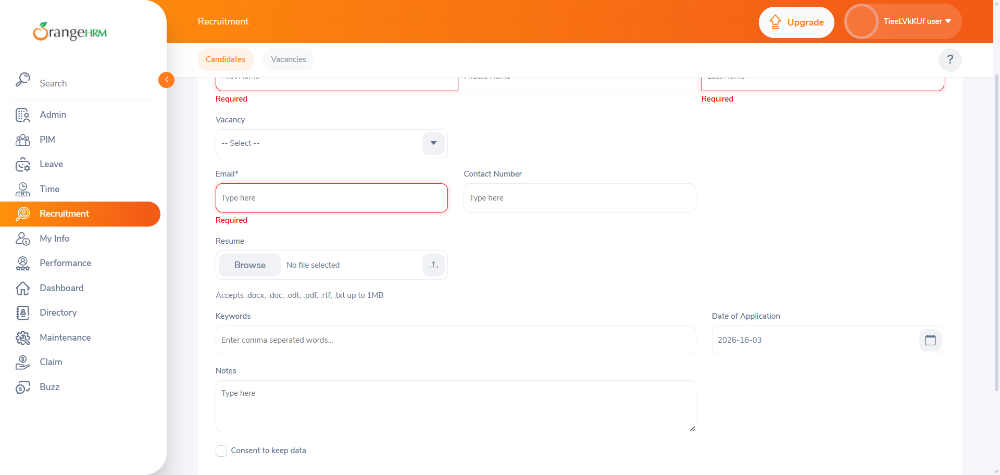
And User fill all Mandatory fields for user with first name as "Walter"And Clears each of the Mandatory fields to check if Mandatory error is thrown again for the respective Add Candidate form fieldhooks.Hooks.addScreenshot(io.cucumber.java.Scenario)Step: Clears each of the Mandatory fields to check if Mandatory error is thrown again for the respective Add Candidate form fieldScreenshot: Clears each of the Mandatory fields to check if Mandatory error is thrown again for the respective Add Candidate form fieldPassValidate if user gets appropriate error message when Mandaotry fields are not filled in Schedule Interview screenPassValidate if user gets appropriate error message when Mandaotry fields are not filled in Schedule Interview screenGiven User Logs in with Credentials and Navigates to Recruitment SectionWhen User Navigates to Add Candidate formThen User fill all Mandatory fields for user with first name as "Michael"And User fill all Non-Mandatory fields for user with first name as "Michael"And User Saves the formAnd Validate if Candidate details screen is visiblehooks.Hooks.addScreenshot(io.cucumber.java.Scenario)Step: Validate if Candidate details screen is visibleScreenshot: Validate if Candidate details screen is visibleAnd "Shortlist" the CandidateAnd Validate if Candidate details screen is visiblehooks.Hooks.addScreenshot(io.cucumber.java.Scenario)Step: Validate if Candidate details screen is visibleScreenshot: Validate if Candidate details screen is visibleAnd Navigate to Schedule Interview ScreenAnd User Saves the formAnd Validate if Mandatory field error is displayed under all Mandatory fields in Schedule Interview screenhooks.Hooks.addScreenshot(io.cucumber.java.Scenario)Step: Validate if Mandatory field error is displayed under all Mandatory fields in Schedule Interview screenScreenshot: Validate if Mandatory field error is displayed under all Mandatory fields in Schedule Interview screen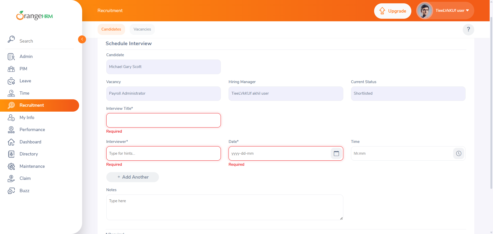
And User fill all Mandatory fields in Schedule Interview screenAnd Clears each of the Mandatory fields to check if Mandatory error is thrown again for the respective Schedule Interview screen fieldshooks.Hooks.addScreenshot(io.cucumber.java.Scenario)Step: Clears each of the Mandatory fields to check if Mandatory error is thrown again for the respective Schedule Interview screen fieldsScreenshot: Clears each of the Mandatory fields to check if Mandatory error is thrown again for the respective Schedule Interview screen fields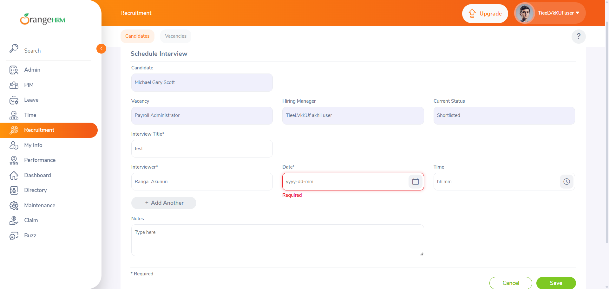
And Navigate to Candidates sectionAnd Check if candidate name appears in Candidate filterhooks.Hooks.addScreenshot(io.cucumber.java.Scenario)Step: Check if candidate name appears in Candidate filterScreenshot: Check if candidate name appears in Candidate filterAnd Filter Candidate list by newly added candidate nameAnd Check if the status of the candidate is "Shortlisted"hooks.Hooks.addScreenshot(io.cucumber.java.Scenario)Step: Check if the status of the candidate is ShortlistedScreenshot: Check if the status of the candidate is Shortlisted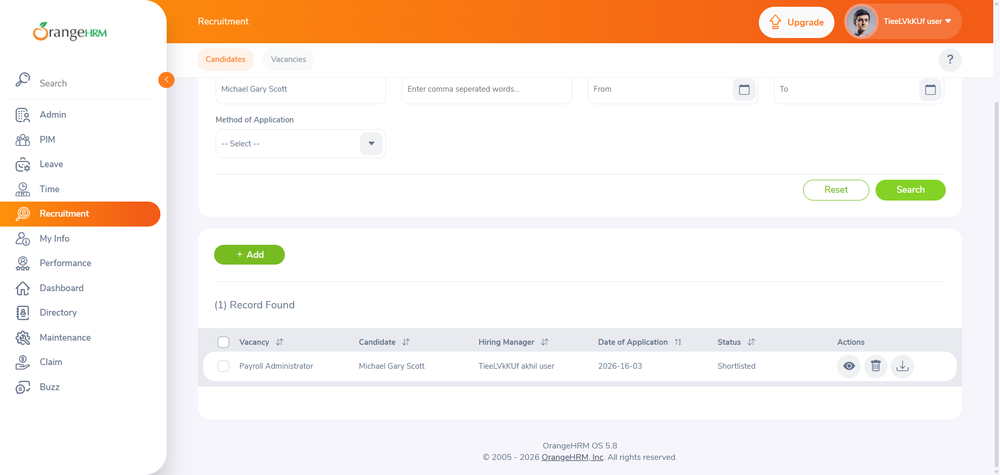
And Delete the Newly added candidateFailUser Validates adding a New Candidate and deleting the newly added candidateFailUser Validates adding a New Candidate and deleting the newly added candidateGiven User Logs in with Credentials and Navigates to Recruitment SectionWhen User Navigates to Add Candidate formThen User fill all Mandatory fields for user with first name as "Michael"And User fill all Non-Mandatory fields for user with first name as "Michael"And User Saves the formAnd Validate if Candidate details screen is visiblehooks.Hooks.addScreenshot(io.cucumber.java.Scenario)Step: Validate if Candidate details screen is visibleScreenshot: Validate if Candidate details screen is visible And Validate if the status is "Status: Application Initiated"Step skippedAnd Capture the data from the screenStep skippedAnd Validate if details in the screen are as per the form filledStep skippedAnd Validate the Candidate History for "Added" candidateStep skippedAnd Validate the Candidate History for "Application Initiated" candidateStep skippedAnd Navigate to Candidates sectionStep skippedAnd Check if candidate name appears in Candidate filterStep skippedAnd Filter Candidate list by newly added candidate nameStep skippedAnd Validate if the newly added candidate is displayed in Candidate list tableStep skippedAnd Delete the Newly added candidateStep skippedAnd Check if Newly added candidate name no longer appears in Candidate filterStep skippedFailValidate candidate rejection from Application Initiated stage and Candidate HistoryFailValidate candidate rejection from Application Initiated stage and Candidate HistoryGiven User Logs in with Credentials and Navigates to Recruitment SectionWhen User Navigates to Add Candidate formThen User fill all Mandatory fields for user with first name as "Dwight"And User fill all Non-Mandatory fields for user with first name as "Dwight"And User Saves the formAnd Validate if Candidate details screen is visiblehooks.Hooks.addScreenshot(io.cucumber.java.Scenario)Step: Validate if Candidate details screen is visibleScreenshot: Validate if Candidate details screen is visible
And Validate if the status is "Status: Application Initiated"Step skippedAnd Capture the data from the screenStep skippedAnd Validate if details in the screen are as per the form filledStep skippedAnd Validate the Candidate History for "Added" candidateStep skippedAnd Validate the Candidate History for "Application Initiated" candidateStep skippedAnd Navigate to Candidates sectionStep skippedAnd Check if candidate name appears in Candidate filterStep skippedAnd Filter Candidate list by newly added candidate nameStep skippedAnd Validate if the newly added candidate is displayed in Candidate list tableStep skippedAnd Delete the Newly added candidateStep skippedAnd Check if Newly added candidate name no longer appears in Candidate filterStep skippedFailValidate candidate rejection from Application Initiated stage and Candidate HistoryFailValidate candidate rejection from Application Initiated stage and Candidate HistoryGiven User Logs in with Credentials and Navigates to Recruitment SectionWhen User Navigates to Add Candidate formThen User fill all Mandatory fields for user with first name as "Dwight"And User fill all Non-Mandatory fields for user with first name as "Dwight"And User Saves the formAnd Validate if Candidate details screen is visiblehooks.Hooks.addScreenshot(io.cucumber.java.Scenario)Step: Validate if Candidate details screen is visibleScreenshot: Validate if Candidate details screen is visible And Validate if the status is "Status: Application Initiated"Step skippedAnd "Reject" the CandidateStep skippedAnd Validate if Candidate details screen is visibleStep skippedAnd Validate if the status is "Status: Rejected"Step skippedAnd Validate the Candidate History for "Rejected" candidateStep skippedAnd Navigate to Candidates sectionStep skippedAnd Check if candidate name appears in Candidate filterStep skippedAnd Filter Candidate list by newly added candidate nameStep skippedAnd Check if the status of the candidate is "Rejected"Step skippedAnd Delete the Newly added candidateStep skippedFailValidate if user can Shortlist a candidate, reject the candidate from shortlisted stage and validate the candidate HistoryFailValidate if user can Shortlist a candidate, reject the candidate from shortlisted stage and validate the candidate HistoryGiven User Logs in with Credentials and Navigates to Recruitment SectionWhen User Navigates to Add Candidate formThen User fill all Mandatory fields for user with first name as "James"And User fill all Non-Mandatory fields for user with first name as "James"And User Saves the formAnd Validate if Candidate details screen is visiblehooks.Hooks.addScreenshot(io.cucumber.java.Scenario)Step: Validate if Candidate details screen is visibleScreenshot: Validate if Candidate details screen is visible
And Validate if the status is "Status: Application Initiated"Step skippedAnd "Reject" the CandidateStep skippedAnd Validate if Candidate details screen is visibleStep skippedAnd Validate if the status is "Status: Rejected"Step skippedAnd Validate the Candidate History for "Rejected" candidateStep skippedAnd Navigate to Candidates sectionStep skippedAnd Check if candidate name appears in Candidate filterStep skippedAnd Filter Candidate list by newly added candidate nameStep skippedAnd Check if the status of the candidate is "Rejected"Step skippedAnd Delete the Newly added candidateStep skippedFailValidate if user can Shortlist a candidate, reject the candidate from shortlisted stage and validate the candidate HistoryFailValidate if user can Shortlist a candidate, reject the candidate from shortlisted stage and validate the candidate HistoryGiven User Logs in with Credentials and Navigates to Recruitment SectionWhen User Navigates to Add Candidate formThen User fill all Mandatory fields for user with first name as "James"And User fill all Non-Mandatory fields for user with first name as "James"And User Saves the formAnd Validate if Candidate details screen is visiblehooks.Hooks.addScreenshot(io.cucumber.java.Scenario)Step: Validate if Candidate details screen is visibleScreenshot: Validate if Candidate details screen is visible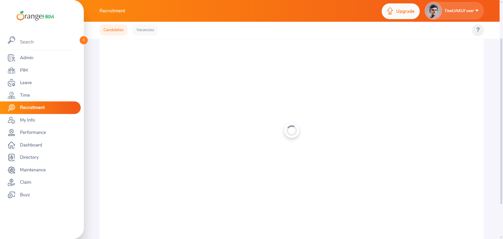
And Validate if the status is "Status: Application Initiated"Step skippedAnd "Shortlist" the CandidateStep skippedAnd Validate if Candidate details screen is visibleStep skippedAnd Validate if the status is "Status: Shortlisted"Step skippedAnd Validate the Candidate History for "Shortlisted" candidateStep skippedAnd Navigate to Candidates sectionStep skippedAnd Check if candidate name appears in Candidate filterStep skippedAnd Filter Candidate list by newly added candidate nameStep skippedAnd Check if the status of the candidate is "Shortlisted"Step skippedAnd User clicks view iconStep skippedAnd "Reject" the CandidateStep skippedAnd Validate if Candidate details screen is visibleStep skippedAnd Validate if the status is "Status: Rejected"Step skippedAnd Validate the Candidate History for "Rejected" candidateStep skippedAnd Navigate to Candidates sectionStep skippedAnd Check if candidate name appears in Candidate filterStep skippedAnd Filter Candidate list by newly added candidate nameStep skippedAnd Check if the status of the candidate is "Rejected"Step skippedAnd Delete the Newly added candidateStep skippedFailValidate if user can Schedule Interview for a candidate, reject the candidate from Interview Scheduled stage and validate the candidate HistoryFailValidate if user can Schedule Interview for a candidate, reject the candidate from Interview Scheduled stage and validate the candidate HistoryGiven User Logs in with Credentials and Navigates to Recruitment SectionWhen User Navigates to Add Candidate formThen User fill all Mandatory fields for user with first name as "Stanley"And User fill all Non-Mandatory fields for user with first name as "Stanley"And User Saves the formAnd Validate if Candidate details screen is visiblehooks.Hooks.addScreenshot(io.cucumber.java.Scenario)Step: Validate if Candidate details screen is visibleScreenshot: Validate if Candidate details screen is visibleAnd Validate if the status is "Status: Application Initiated"Step skippedAnd "Shortlist" the CandidateStep skippedAnd Validate if Candidate details screen is visibleStep skippedAnd Validate if the status is "Status: Shortlisted"Step skippedAnd "Schedule Interview" the CandidateStep skippedAnd Validate if Candidate details screen is visibleStep skippedAnd Validate if the status is "Status: Interview Scheduled"Step skippedAnd Validate the Candidate History for "Interview Scheduled" candidateStep skippedAnd Navigate to Candidates sectionStep skippedAnd Check if candidate name appears in Candidate filterStep skippedAnd Filter Candidate list by newly added candidate nameStep skippedAnd Check if the status of the candidate is "Interview Scheduled"Step skippedAnd User clicks view iconStep skippedAnd "Reject" the CandidateStep skippedAnd Validate if Candidate details screen is visibleStep skippedAnd Validate if the status is "Status: Rejected"Step skippedAnd Validate the Candidate History for "Rejected" candidateStep skippedAnd Navigate to Candidates sectionStep skippedAnd Check if candidate name appears in Candidate filterStep skippedAnd Filter Candidate list by newly added candidate nameStep skippedAnd Check if the status of the candidate is "Rejected"Step skippedAnd Delete the Newly added candidateStep skippedPassValidate the candidate to interview feature in Dashboard screenPassValidate the candidate to interview feature in Dashboard screenGiven User Logs in with Credentials and Navigates to Recruitment SectionWhen User Navigates to Add Candidate formThen User fill all Mandatory fields for user with first name as "Andrew"And User fill all Non-Mandatory fields for user with first name as "Andrew"And User Saves the formAnd Validate if Candidate details screen is visiblehooks.Hooks.addScreenshot(io.cucumber.java.Scenario)Step: Validate if Candidate details screen is visibleScreenshot: Validate if Candidate details screen is visibleAnd Validate if the status is "Status: Application Initiated"hooks.Hooks.addScreenshot(io.cucumber.java.Scenario)Step: Validate if the status is Status: Application InitiatedScreenshot: Validate if the status is Status: Application InitiatedAnd "Shortlist" the CandidateAnd Validate if Candidate details screen is visiblehooks.Hooks.addScreenshot(io.cucumber.java.Scenario)Step: Validate if Candidate details screen is visibleScreenshot: Validate if Candidate details screen is visibleAnd Validate if the status is "Status: Shortlisted"hooks.Hooks.addScreenshot(io.cucumber.java.Scenario)Step: Validate if the status is Status: ShortlistedScreenshot: Validate if the status is Status: ShortlistedAnd "Schedule Interview" the CandidateAnd Validate if Candidate details screen is visiblehooks.Hooks.addScreenshot(io.cucumber.java.Scenario)Step: Validate if Candidate details screen is visibleScreenshot: Validate if Candidate details screen is visibleAnd Validate if the status is "Status: Interview Scheduled"hooks.Hooks.addScreenshot(io.cucumber.java.Scenario)Step: Validate if the status is Status: Interview ScheduledScreenshot: Validate if the status is Status: Interview ScheduledAnd Navigate to Dashboard screenAnd Check if candidate to interview is dsiplayed and click on ithooks.Hooks.addScreenshot(io.cucumber.java.Scenario)Step: Check if candidate to interview is dsiplayed and click on itScreenshot: Check if candidate to interview is dsiplayed and click on it And Check if user can see the candidate in the list of Interview Scheduled candidates and delete the candidatehooks.Hooks.addScreenshot(io.cucumber.java.Scenario)Step: Check if user can see the candidate in the list of Interview Scheduled candidates and delete the candidateScreenshot: Check if user can see the candidate in the list of Interview Scheduled candidates and delete the candidate
And Check if user can see the candidate in the list of Interview Scheduled candidates and delete the candidatehooks.Hooks.addScreenshot(io.cucumber.java.Scenario)Step: Check if user can see the candidate in the list of Interview Scheduled candidates and delete the candidateScreenshot: Check if user can see the candidate in the list of Interview Scheduled candidates and delete the candidate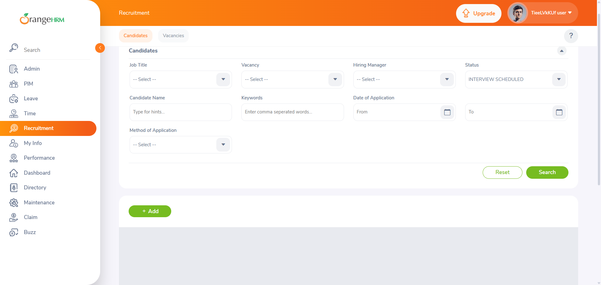
PassValidate if user can mark Interview failed for a candidate, reject the candidate from Interview Failed stage and validate the candidate historyPassValidate if user can mark Interview failed for a candidate, reject the candidate from Interview Failed stage and validate the candidate historyGiven User Logs in with Credentials and Navigates to Recruitment SectionWhen User Navigates to Add Candidate formThen User fill all Mandatory fields for user with first name as "Meredith"And User fill all Non-Mandatory fields for user with first name as "Meredith"And User Saves the formAnd Validate if Candidate details screen is visiblehooks.Hooks.addScreenshot(io.cucumber.java.Scenario)Step: Validate if Candidate details screen is visibleScreenshot: Validate if Candidate details screen is visibleAnd Validate if the status is "Status: Application Initiated"hooks.Hooks.addScreenshot(io.cucumber.java.Scenario)Step: Validate if the status is Status: Application InitiatedScreenshot: Validate if the status is Status: Application InitiatedAnd "Shortlist" the CandidateAnd Validate if Candidate details screen is visiblehooks.Hooks.addScreenshot(io.cucumber.java.Scenario)Step: Validate if Candidate details screen is visibleScreenshot: Validate if Candidate details screen is visibleAnd Validate if the status is "Status: Shortlisted"hooks.Hooks.addScreenshot(io.cucumber.java.Scenario)Step: Validate if the status is Status: ShortlistedScreenshot: Validate if the status is Status: Shortlisted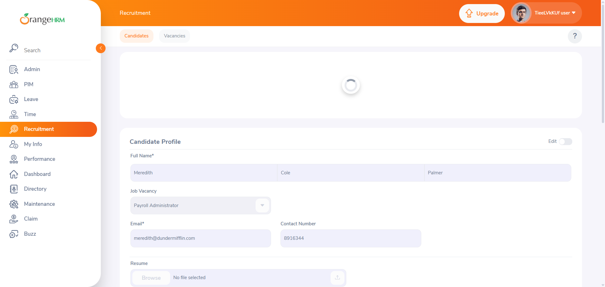
And "Schedule Interview" the CandidateAnd Validate if Candidate details screen is visiblehooks.Hooks.addScreenshot(io.cucumber.java.Scenario)Step: Validate if Candidate details screen is visibleScreenshot: Validate if Candidate details screen is visibleAnd Validate if the status is "Status: Interview Scheduled"hooks.Hooks.addScreenshot(io.cucumber.java.Scenario)Step: Validate if the status is Status: Interview ScheduledScreenshot: Validate if the status is Status: Interview ScheduledAnd "Mark Interview Failed" the CandidateAnd Validate if Candidate details screen is visiblehooks.Hooks.addScreenshot(io.cucumber.java.Scenario)Step: Validate if Candidate details screen is visibleScreenshot: Validate if Candidate details screen is visibleAnd Validate if the status is "Status: Interview Failed"hooks.Hooks.addScreenshot(io.cucumber.java.Scenario)Step: Validate if the status is Status: Interview FailedScreenshot: Validate if the status is Status: Interview FailedAnd Validate the Candidate History for "Interview Failed" candidatehooks.Hooks.addScreenshot(io.cucumber.java.Scenario)Step: Validate the Candidate History for Interview Failed candidateScreenshot: Validate the Candidate History for Interview Failed candidate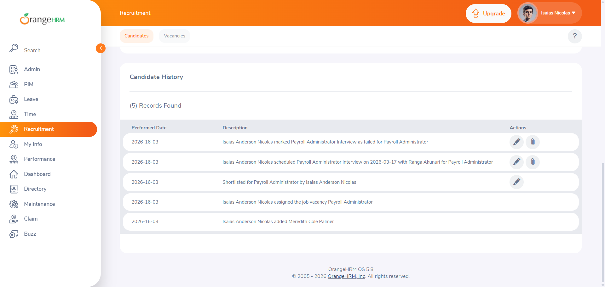
And Navigate to Candidates sectionAnd Check if candidate name appears in Candidate filterhooks.Hooks.addScreenshot(io.cucumber.java.Scenario)Step: Check if candidate name appears in Candidate filterScreenshot: Check if candidate name appears in Candidate filter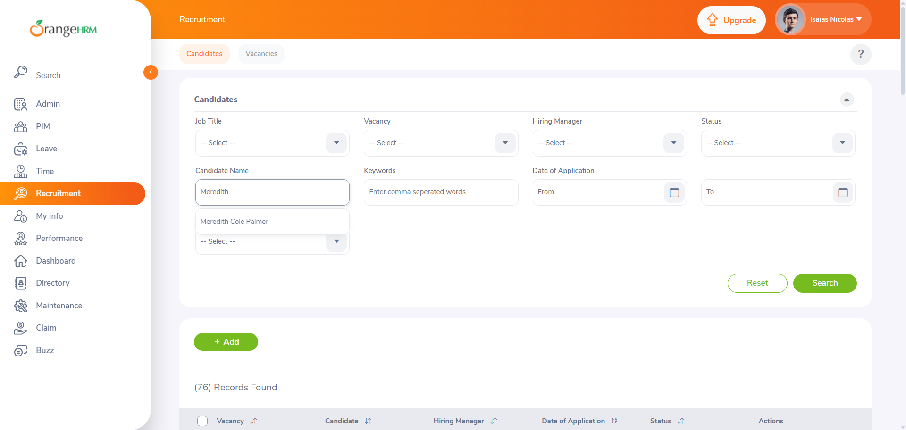
And Filter Candidate list by newly added candidate nameAnd Check if the status of the candidate is "Interview Failed"hooks.Hooks.addScreenshot(io.cucumber.java.Scenario)Step: Check if the status of the candidate is Interview FailedScreenshot: Check if the status of the candidate is Interview Failed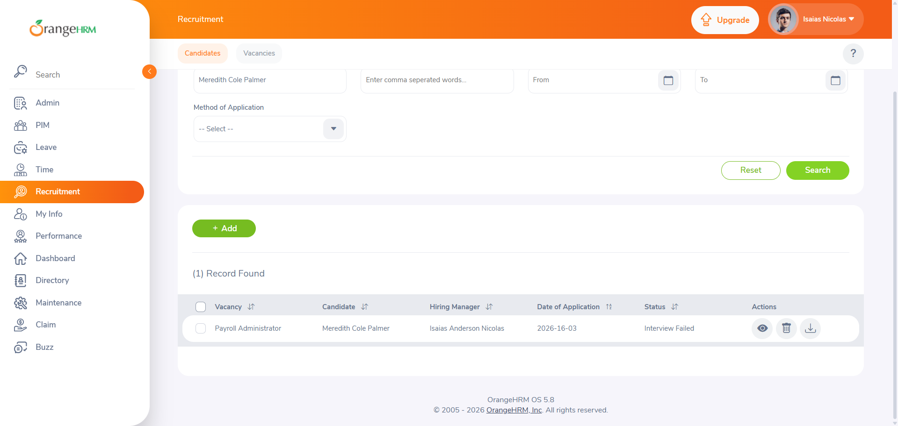
And User clicks view iconAnd "Reject" the CandidateAnd Validate if Candidate details screen is visiblehooks.Hooks.addScreenshot(io.cucumber.java.Scenario)Step: Validate if Candidate details screen is visibleScreenshot: Validate if Candidate details screen is visibleAnd Validate if the status is "Status: Rejected"hooks.Hooks.addScreenshot(io.cucumber.java.Scenario)Step: Validate if the status is Status: RejectedScreenshot: Validate if the status is Status: RejectedAnd Validate the Candidate History for "Rejected" candidatehooks.Hooks.addScreenshot(io.cucumber.java.Scenario)Step: Validate the Candidate History for Rejected candidateScreenshot: Validate the Candidate History for Rejected candidate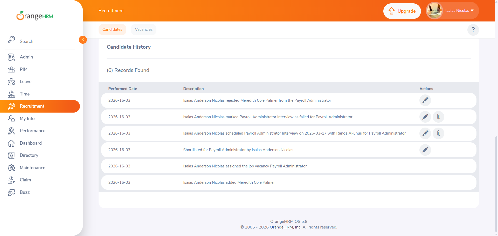
And Navigate to Candidates sectionAnd Check if candidate name appears in Candidate filterhooks.Hooks.addScreenshot(io.cucumber.java.Scenario)Step: Check if candidate name appears in Candidate filterScreenshot: Check if candidate name appears in Candidate filterAnd Filter Candidate list by newly added candidate nameAnd Check if the status of the candidate is "Rejected"hooks.Hooks.addScreenshot(io.cucumber.java.Scenario)Step: Check if the status of the candidate is RejectedScreenshot: Check if the status of the candidate is Rejected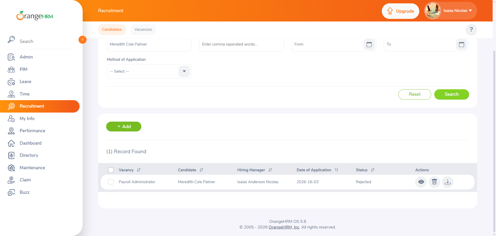
And Delete the Newly added candidateFailValidate if user can mark Interview Passed for a candidate, reject the candidate from Interview Passed stage and validate the candidate historyFailValidate if user can mark Interview Passed for a candidate, reject the candidate from Interview Passed stage and validate the candidate historyGiven User Logs in with Credentials and Navigates to Recruitment SectionWhen User Navigates to Add Candidate formThen User fill all Mandatory fields for user with first name as "Pamela"And User fill all Non-Mandatory fields for user with first name as "Pamela"And User Saves the formAnd Validate if Candidate details screen is visiblehooks.Hooks.addScreenshot(io.cucumber.java.Scenario)Step: Validate if Candidate details screen is visibleScreenshot: Validate if Candidate details screen is visibleAnd Validate if the status is "Status: Application Initiated"hooks.Hooks.addScreenshot(io.cucumber.java.Scenario)Step: Validate if the status is Status: Application InitiatedScreenshot: Validate if the status is Status: Application InitiatedAnd "Shortlist" the CandidateAnd Validate if Candidate details screen is visiblehooks.Hooks.addScreenshot(io.cucumber.java.Scenario)Step: Validate if Candidate details screen is visibleScreenshot: Validate if Candidate details screen is visibleAnd Validate if the status is "Status: Shortlisted"hooks.Hooks.addScreenshot(io.cucumber.java.Scenario)Step: Validate if the status is Status: ShortlistedScreenshot: Validate if the status is Status: ShortlistedAnd "Schedule Interview" the CandidateAnd Validate if Candidate details screen is visibleStep skippedAnd Validate if the status is "Status: Interview Scheduled"Step skippedAnd "Mark Interview Passed" the CandidateStep skippedAnd Validate if Candidate details screen is visibleStep skippedAnd Validate if the status is "Status: Interview Passed"Step skippedAnd Validate the Candidate History for "Interview Passed" candidateStep skippedAnd Navigate to Candidates sectionStep skippedAnd Check if candidate name appears in Candidate filterStep skippedAnd Filter Candidate list by newly added candidate nameStep skippedAnd Check if the status of the candidate is "Interview Passed"Step skippedAnd User clicks view iconStep skippedAnd "Reject" the CandidateStep skippedAnd Validate if Candidate details screen is visibleStep skippedAnd Validate if the status is "Status: Rejected"Step skippedAnd Validate the Candidate History for "Rejected" candidateStep skippedAnd Navigate to Candidates sectionStep skippedAnd Check if candidate name appears in Candidate filterStep skippedAnd Filter Candidate list by newly added candidate nameStep skippedAnd Check if the status of the candidate is "Rejected"Step skippedAnd Delete the Newly added candidateStep skippedFailValidate if user can Schedule another Interview for the candidate from Interview Passed stage, again reject the candidate from Interview Scheduled stage and validate the candidate HistoryFailValidate if user can Schedule another Interview for the candidate from Interview Passed stage, again reject the candidate from Interview Scheduled stage and validate the candidate HistoryGiven User Logs in with Credentials and Navigates to Recruitment SectionWhen User Navigates to Add Candidate formThen User fill all Mandatory fields for user with first name as "Kelly"And User fill all Non-Mandatory fields for user with first name as "Kelly"And User Saves the formAnd Validate if Candidate details screen is visiblehooks.Hooks.addScreenshot(io.cucumber.java.Scenario)Step: Validate if Candidate details screen is visibleScreenshot: Validate if Candidate details screen is visibleAnd Validate if the status is "Status: Application Initiated"hooks.Hooks.addScreenshot(io.cucumber.java.Scenario)Step: Validate if the status is Status: Application InitiatedScreenshot: Validate if the status is Status: Application InitiatedAnd "Shortlist" the CandidateAnd Validate if Candidate details screen is visiblehooks.Hooks.addScreenshot(io.cucumber.java.Scenario)Step: Validate if Candidate details screen is visibleScreenshot: Validate if Candidate details screen is visibleAnd Validate if the status is "Status: Shortlisted"hooks.Hooks.addScreenshot(io.cucumber.java.Scenario)Step: Validate if the status is Status: ShortlistedScreenshot: Validate if the status is Status: ShortlistedAnd "Schedule Interview" the CandidateAnd User Saves the formAnd Validate if Candidate details screen is visibleStep skippedAnd Validate if the status is "Status: Interview Scheduled"Step skippedAnd "Mark Interview Passed" the CandidateStep skippedAnd Validate if Candidate details screen is visibleStep skippedAnd Validate if the status is "Status: Interview Passed"Step skippedAnd Schedule another Interview for the CandidateStep skippedAnd Validate if Candidate details screen is visibleStep skippedAnd Validate if the status is "Status: Interview Scheduled"Step skippedAnd Validate the Candidate History for "Second Interview Scheduled" candidateStep skippedAnd Navigate to Candidates sectionStep skippedAnd Check if candidate name appears in Candidate filterStep skippedAnd Filter Candidate list by newly added candidate nameStep skippedAnd Check if the status of the candidate is "Interview Scheduled"Step skippedAnd User clicks view iconStep skippedAnd "Reject" the CandidateStep skippedAnd Validate if Candidate details screen is visibleStep skippedAnd Validate if the status is "Status: Rejected"Step skippedAnd Validate the Candidate History for "Rejected" candidateStep skippedAnd Navigate to Candidates sectionStep skippedAnd Check if candidate name appears in Candidate filterStep skippedAnd Filter Candidate list by newly added candidate nameStep skippedAnd Check if the status of the candidate is "Rejected"Step skippedAnd Delete the Newly added candidateStep skippedPassValidate if user can mark Interview failed for a candidate in the second round of interview, then reject the candidate from Interview Failed stage and validate the candidate historyPassValidate if user can mark Interview failed for a candidate in the second round of interview, then reject the candidate from Interview Failed stage and validate the candidate historyGiven User Logs in with Credentials and Navigates to Recruitment SectionWhen User Navigates to Add Candidate formThen User fill all Mandatory fields for user with first name as "Oscar"And User fill all Non-Mandatory fields for user with first name as "Oscar"And User Saves the formAnd Validate if Candidate details screen is visiblehooks.Hooks.addScreenshot(io.cucumber.java.Scenario)Step: Validate if Candidate details screen is visibleScreenshot: Validate if Candidate details screen is visibleAnd Validate if the status is "Status: Application Initiated"hooks.Hooks.addScreenshot(io.cucumber.java.Scenario)Step: Validate if the status is Status: Application InitiatedScreenshot: Validate if the status is Status: Application InitiatedAnd "Shortlist" the CandidateAnd Validate if Candidate details screen is visiblehooks.Hooks.addScreenshot(io.cucumber.java.Scenario)Step: Validate if Candidate details screen is visibleScreenshot: Validate if Candidate details screen is visibleAnd Validate if the status is "Status: Shortlisted"hooks.Hooks.addScreenshot(io.cucumber.java.Scenario)Step: Validate if the status is Status: ShortlistedScreenshot: Validate if the status is Status: ShortlistedAnd "Schedule Interview" the CandidateAnd Validate if Candidate details screen is visiblehooks.Hooks.addScreenshot(io.cucumber.java.Scenario)Step: Validate if Candidate details screen is visibleScreenshot: Validate if Candidate details screen is visibleAnd Validate if the status is "Status: Interview Scheduled"hooks.Hooks.addScreenshot(io.cucumber.java.Scenario)Step: Validate if the status is Status: Interview ScheduledScreenshot: Validate if the status is Status: Interview ScheduledAnd "Mark Interview Passed" the CandidateAnd Validate if Candidate details screen is visiblehooks.Hooks.addScreenshot(io.cucumber.java.Scenario)Step: Validate if Candidate details screen is visibleScreenshot: Validate if Candidate details screen is visibleAnd Validate if the status is "Status: Interview Passed"hooks.Hooks.addScreenshot(io.cucumber.java.Scenario)Step: Validate if the status is Status: Interview PassedScreenshot: Validate if the status is Status: Interview PassedAnd Schedule another Interview for the CandidateAnd Validate if Candidate details screen is visiblehooks.Hooks.addScreenshot(io.cucumber.java.Scenario)Step: Validate if Candidate details screen is visibleScreenshot: Validate if Candidate details screen is visibleAnd Validate if the status is "Status: Interview Scheduled"hooks.Hooks.addScreenshot(io.cucumber.java.Scenario)Step: Validate if the status is Status: Interview ScheduledScreenshot: Validate if the status is Status: Interview ScheduledAnd "Mark Interview Failed" the CandidateAnd Validate if Candidate details screen is visiblehooks.Hooks.addScreenshot(io.cucumber.java.Scenario)Step: Validate if Candidate details screen is visibleScreenshot: Validate if Candidate details screen is visibleAnd Validate if the status is "Status: Interview Failed"hooks.Hooks.addScreenshot(io.cucumber.java.Scenario)Step: Validate if the status is Status: Interview FailedScreenshot: Validate if the status is Status: Interview FailedAnd Validate the Candidate History for "Second Round Interview Failed" candidatehooks.Hooks.addScreenshot(io.cucumber.java.Scenario)Step: Validate the Candidate History for Second Round Interview Failed candidateScreenshot: Validate the Candidate History for Second Round Interview Failed candidate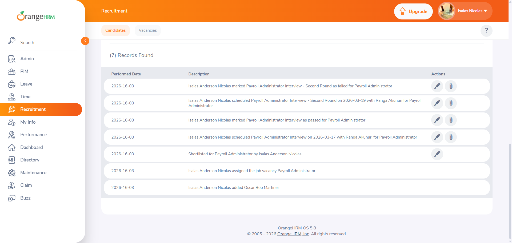
And Navigate to Candidates sectionAnd Check if candidate name appears in Candidate filterhooks.Hooks.addScreenshot(io.cucumber.java.Scenario)Step: Check if candidate name appears in Candidate filterScreenshot: Check if candidate name appears in Candidate filter And Filter Candidate list by newly added candidate nameAnd Check if the status of the candidate is "Interview Failed"hooks.Hooks.addScreenshot(io.cucumber.java.Scenario)Step: Check if the status of the candidate is Interview FailedScreenshot: Check if the status of the candidate is Interview FailedAnd User clicks view iconAnd "Reject" the CandidateAnd Validate if Candidate details screen is visiblehooks.Hooks.addScreenshot(io.cucumber.java.Scenario)Step: Validate if Candidate details screen is visibleScreenshot: Validate if Candidate details screen is visibleAnd Validate if the status is "Status: Rejected"hooks.Hooks.addScreenshot(io.cucumber.java.Scenario)Step: Validate if the status is Status: RejectedScreenshot: Validate if the status is Status: Rejected
And Filter Candidate list by newly added candidate nameAnd Check if the status of the candidate is "Interview Failed"hooks.Hooks.addScreenshot(io.cucumber.java.Scenario)Step: Check if the status of the candidate is Interview FailedScreenshot: Check if the status of the candidate is Interview FailedAnd User clicks view iconAnd "Reject" the CandidateAnd Validate if Candidate details screen is visiblehooks.Hooks.addScreenshot(io.cucumber.java.Scenario)Step: Validate if Candidate details screen is visibleScreenshot: Validate if Candidate details screen is visibleAnd Validate if the status is "Status: Rejected"hooks.Hooks.addScreenshot(io.cucumber.java.Scenario)Step: Validate if the status is Status: RejectedScreenshot: Validate if the status is Status: Rejected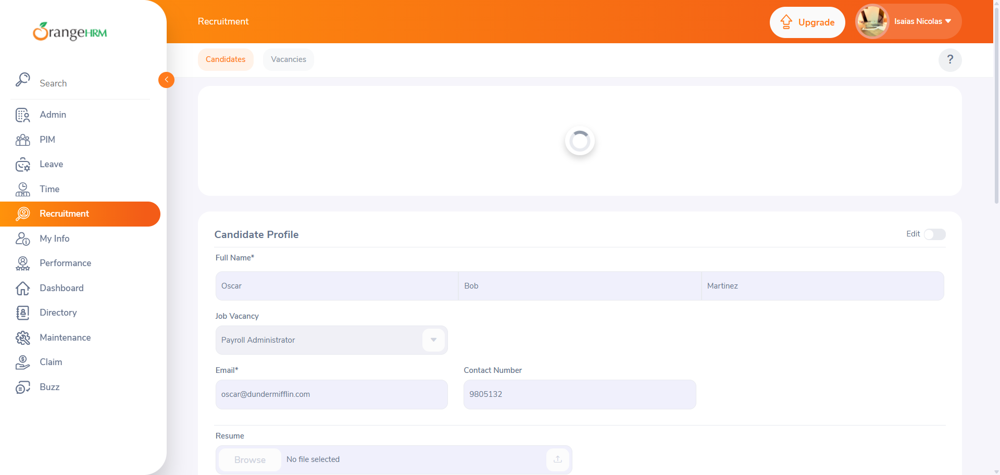
And Validate the Candidate History for "Rejected" candidatehooks.Hooks.addScreenshot(io.cucumber.java.Scenario)Step: Validate the Candidate History for Rejected candidateScreenshot: Validate the Candidate History for Rejected candidate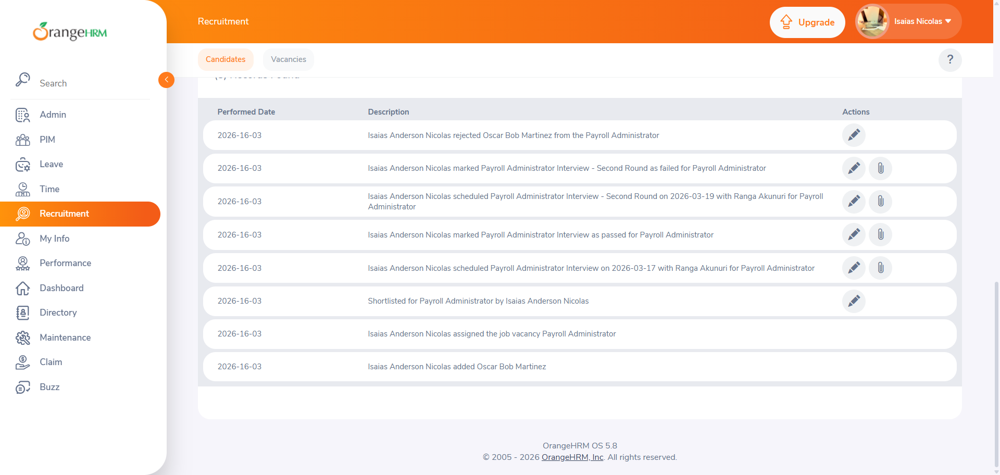
And Navigate to Candidates sectionAnd Check if candidate name appears in Candidate filterhooks.Hooks.addScreenshot(io.cucumber.java.Scenario)Step: Check if candidate name appears in Candidate filterScreenshot: Check if candidate name appears in Candidate filter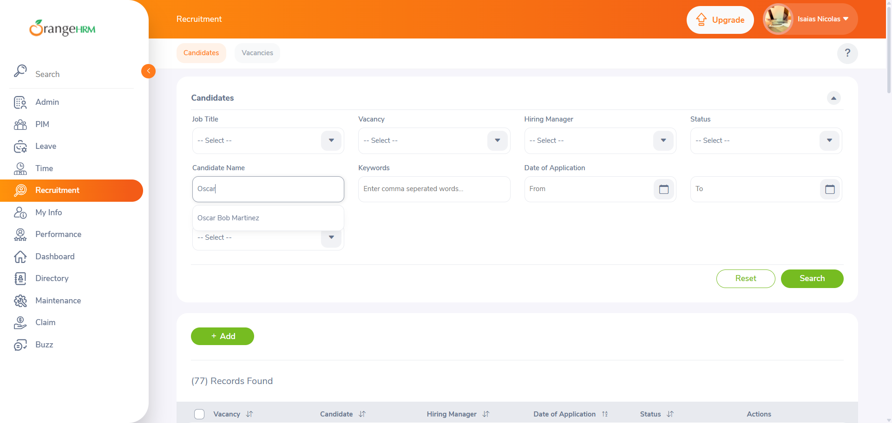
And Filter Candidate list by newly added candidate nameAnd Check if the status of the candidate is "Rejected"hooks.Hooks.addScreenshot(io.cucumber.java.Scenario)Step: Check if the status of the candidate is RejectedScreenshot: Check if the status of the candidate is Rejected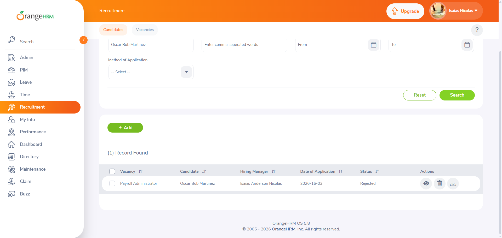
And Delete the Newly added candidateFailValidate if user can mark Interview passed for a candidate in the second round of interview, then reject the candidate from Interview passed stage and validate the candidate historyFailValidate if user can mark Interview passed for a candidate in the second round of interview, then reject the candidate from Interview passed stage and validate the candidate historyGiven User Logs in with Credentials and Navigates to Recruitment SectionWhen User Navigates to Add Candidate formThen User fill all Mandatory fields for user with first name as "Angella"And User fill all Non-Mandatory fields for user with first name as "Angella"And User Saves the formAnd Validate if Candidate details screen is visiblehooks.Hooks.addScreenshot(io.cucumber.java.Scenario)Step: Validate if Candidate details screen is visibleScreenshot: Validate if Candidate details screen is visibleAnd Validate if the status is "Status: Application Initiated"hooks.Hooks.addScreenshot(io.cucumber.java.Scenario)Step: Validate if the status is Status: Application InitiatedScreenshot: Validate if the status is Status: Application InitiatedAnd "Shortlist" the CandidateAnd Validate if Candidate details screen is visiblehooks.Hooks.addScreenshot(io.cucumber.java.Scenario)Step: Validate if Candidate details screen is visibleScreenshot: Validate if Candidate details screen is visibleAnd Validate if the status is "Status: Shortlisted"hooks.Hooks.addScreenshot(io.cucumber.java.Scenario)Step: Validate if the status is Status: ShortlistedScreenshot: Validate if the status is Status: ShortlistedAnd "Schedule Interview" the CandidateAnd Validate if Candidate details screen is visiblehooks.Hooks.addScreenshot(io.cucumber.java.Scenario)Step: Validate if Candidate details screen is visibleScreenshot: Validate if Candidate details screen is visible And Validate if the status is "Status: Interview Scheduled"Step skippedAnd "Mark Interview Passed" the CandidateStep skippedAnd Validate if Candidate details screen is visibleStep skippedAnd Validate if the status is "Status: Interview Passed"Step skippedAnd Schedule another Interview for the CandidateStep skippedAnd Validate if Candidate details screen is visibleStep skippedAnd Validate if the status is "Status: Interview Scheduled"Step skippedAnd "Mark Interview Passed" the CandidateStep skippedAnd Validate if Candidate details screen is visibleStep skippedAnd Validate if the status is "Status: Interview Passed"Step skippedAnd Validate the Candidate History for "Second Round Interview Passed" candidateStep skippedAnd Navigate to Candidates sectionStep skippedAnd Check if candidate name appears in Candidate filterStep skippedAnd Filter Candidate list by newly added candidate nameStep skippedAnd Check if the status of the candidate is "Interview Passed"Step skippedAnd User clicks view iconStep skippedAnd "Reject" the CandidateStep skippedAnd Validate if Candidate details screen is visibleStep skippedAnd Validate if the status is "Status: Rejected"Step skippedAnd Validate the Candidate History for "Rejected" candidateStep skippedAnd Navigate to Candidates sectionStep skippedAnd Check if candidate name appears in Candidate filterStep skippedAnd Filter Candidate list by newly added candidate nameStep skippedAnd Check if the status of the candidate is "Rejected"Step skippedAnd Delete the Newly added candidateStep skippedFailValidate if user can Offer job for candidate who passed second round of interview, then reject the candidate from Job Offered stage and validate the candidate historyFailValidate if user can Offer job for candidate who passed second round of interview, then reject the candidate from Job Offered stage and validate the candidate historyGiven User Logs in with Credentials and Navigates to Recruitment SectionWhen User Navigates to Add Candidate formThen User fill all Mandatory fields for user with first name as "Ryan"And User fill all Non-Mandatory fields for user with first name as "Ryan"And User Saves the formAnd Validate if Candidate details screen is visiblehooks.Hooks.addScreenshot(io.cucumber.java.Scenario)Step: Validate if Candidate details screen is visibleScreenshot: Validate if Candidate details screen is visible
And Validate if the status is "Status: Interview Scheduled"Step skippedAnd "Mark Interview Passed" the CandidateStep skippedAnd Validate if Candidate details screen is visibleStep skippedAnd Validate if the status is "Status: Interview Passed"Step skippedAnd Schedule another Interview for the CandidateStep skippedAnd Validate if Candidate details screen is visibleStep skippedAnd Validate if the status is "Status: Interview Scheduled"Step skippedAnd "Mark Interview Passed" the CandidateStep skippedAnd Validate if Candidate details screen is visibleStep skippedAnd Validate if the status is "Status: Interview Passed"Step skippedAnd Validate the Candidate History for "Second Round Interview Passed" candidateStep skippedAnd Navigate to Candidates sectionStep skippedAnd Check if candidate name appears in Candidate filterStep skippedAnd Filter Candidate list by newly added candidate nameStep skippedAnd Check if the status of the candidate is "Interview Passed"Step skippedAnd User clicks view iconStep skippedAnd "Reject" the CandidateStep skippedAnd Validate if Candidate details screen is visibleStep skippedAnd Validate if the status is "Status: Rejected"Step skippedAnd Validate the Candidate History for "Rejected" candidateStep skippedAnd Navigate to Candidates sectionStep skippedAnd Check if candidate name appears in Candidate filterStep skippedAnd Filter Candidate list by newly added candidate nameStep skippedAnd Check if the status of the candidate is "Rejected"Step skippedAnd Delete the Newly added candidateStep skippedFailValidate if user can Offer job for candidate who passed second round of interview, then reject the candidate from Job Offered stage and validate the candidate historyFailValidate if user can Offer job for candidate who passed second round of interview, then reject the candidate from Job Offered stage and validate the candidate historyGiven User Logs in with Credentials and Navigates to Recruitment SectionWhen User Navigates to Add Candidate formThen User fill all Mandatory fields for user with first name as "Ryan"And User fill all Non-Mandatory fields for user with first name as "Ryan"And User Saves the formAnd Validate if Candidate details screen is visiblehooks.Hooks.addScreenshot(io.cucumber.java.Scenario)Step: Validate if Candidate details screen is visibleScreenshot: Validate if Candidate details screen is visible And Validate if the status is "Status: Application Initiated"Step skippedAnd "Shortlist" the CandidateStep skippedAnd Validate if Candidate details screen is visibleStep skippedAnd Validate if the status is "Status: Shortlisted"Step skippedAnd "Schedule Interview" the CandidateStep skippedAnd Validate if Candidate details screen is visibleStep skippedAnd Validate if the status is "Status: Interview Scheduled"Step skippedAnd "Mark Interview Passed" the CandidateStep skippedAnd Validate if Candidate details screen is visibleStep skippedAnd Validate if the status is "Status: Interview Passed"Step skippedAnd Schedule another Interview for the CandidateStep skippedAnd Validate if Candidate details screen is visibleStep skippedAnd Validate if the status is "Status: Interview Scheduled"Step skippedAnd "Mark Interview Passed" the CandidateStep skippedAnd Validate if Candidate details screen is visibleStep skippedAnd Validate if the status is "Status: Interview Passed"Step skippedAnd "Offer Job" the CandidateStep skippedAnd Validate if Candidate details screen is visibleStep skippedAnd Validate if the status is "Status: Job Offered"Step skippedAnd Validate the Candidate History for "Job Offered" candidateStep skippedAnd Navigate to Candidates sectionStep skippedAnd Check if candidate name appears in Candidate filterStep skippedAnd Filter Candidate list by newly added candidate nameStep skippedAnd Check if the status of the candidate is "Job Offered"Step skippedAnd User clicks view iconStep skippedAnd "Reject" the CandidateStep skippedAnd Validate if Candidate details screen is visibleStep skippedAnd Validate if the status is "Status: Rejected"Step skippedAnd Validate the Candidate History for "Rejected" candidateStep skippedAnd Navigate to Candidates sectionStep skippedAnd Check if candidate name appears in Candidate filterStep skippedAnd Filter Candidate list by newly added candidate nameStep skippedAnd Check if the status of the candidate is "Rejected"Step skippedAnd Delete the Newly added candidateStep skippedFailValidate if user can Decline Job Offer for candidate who was offered the Job, then reject the candidate from Offer Declined stage and validate the candidate historyFailValidate if user can Decline Job Offer for candidate who was offered the Job, then reject the candidate from Offer Declined stage and validate the candidate historyGiven User Logs in with Credentials and Navigates to Recruitment SectionWhen User Navigates to Add Candidate formThen User fill all Mandatory fields for user with first name as "Toby"And User fill all Non-Mandatory fields for user with first name as "Toby"And User Saves the formAnd Validate if Candidate details screen is visiblehooks.Hooks.addScreenshot(io.cucumber.java.Scenario)Step: Validate if Candidate details screen is visibleScreenshot: Validate if Candidate details screen is visible
And Validate if the status is "Status: Application Initiated"Step skippedAnd "Shortlist" the CandidateStep skippedAnd Validate if Candidate details screen is visibleStep skippedAnd Validate if the status is "Status: Shortlisted"Step skippedAnd "Schedule Interview" the CandidateStep skippedAnd Validate if Candidate details screen is visibleStep skippedAnd Validate if the status is "Status: Interview Scheduled"Step skippedAnd "Mark Interview Passed" the CandidateStep skippedAnd Validate if Candidate details screen is visibleStep skippedAnd Validate if the status is "Status: Interview Passed"Step skippedAnd Schedule another Interview for the CandidateStep skippedAnd Validate if Candidate details screen is visibleStep skippedAnd Validate if the status is "Status: Interview Scheduled"Step skippedAnd "Mark Interview Passed" the CandidateStep skippedAnd Validate if Candidate details screen is visibleStep skippedAnd Validate if the status is "Status: Interview Passed"Step skippedAnd "Offer Job" the CandidateStep skippedAnd Validate if Candidate details screen is visibleStep skippedAnd Validate if the status is "Status: Job Offered"Step skippedAnd Validate the Candidate History for "Job Offered" candidateStep skippedAnd Navigate to Candidates sectionStep skippedAnd Check if candidate name appears in Candidate filterStep skippedAnd Filter Candidate list by newly added candidate nameStep skippedAnd Check if the status of the candidate is "Job Offered"Step skippedAnd User clicks view iconStep skippedAnd "Reject" the CandidateStep skippedAnd Validate if Candidate details screen is visibleStep skippedAnd Validate if the status is "Status: Rejected"Step skippedAnd Validate the Candidate History for "Rejected" candidateStep skippedAnd Navigate to Candidates sectionStep skippedAnd Check if candidate name appears in Candidate filterStep skippedAnd Filter Candidate list by newly added candidate nameStep skippedAnd Check if the status of the candidate is "Rejected"Step skippedAnd Delete the Newly added candidateStep skippedFailValidate if user can Decline Job Offer for candidate who was offered the Job, then reject the candidate from Offer Declined stage and validate the candidate historyFailValidate if user can Decline Job Offer for candidate who was offered the Job, then reject the candidate from Offer Declined stage and validate the candidate historyGiven User Logs in with Credentials and Navigates to Recruitment SectionWhen User Navigates to Add Candidate formThen User fill all Mandatory fields for user with first name as "Toby"And User fill all Non-Mandatory fields for user with first name as "Toby"And User Saves the formAnd Validate if Candidate details screen is visiblehooks.Hooks.addScreenshot(io.cucumber.java.Scenario)Step: Validate if Candidate details screen is visibleScreenshot: Validate if Candidate details screen is visible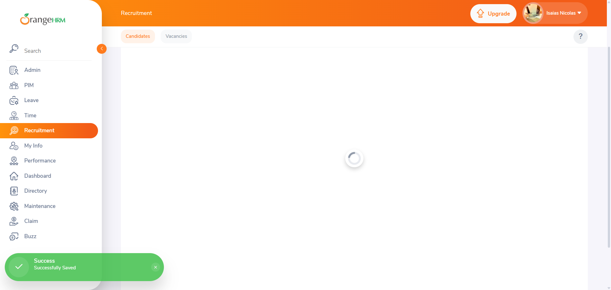
And Validate if the status is "Status: Application Initiated"Step skippedAnd "Shortlist" the CandidateStep skippedAnd Validate if Candidate details screen is visibleStep skippedAnd Validate if the status is "Status: Shortlisted"Step skippedAnd "Schedule Interview" the CandidateStep skippedAnd Validate if Candidate details screen is visibleStep skippedAnd Validate if the status is "Status: Interview Scheduled"Step skippedAnd "Mark Interview Passed" the CandidateStep skippedAnd Validate if Candidate details screen is visibleStep skippedAnd Validate if the status is "Status: Interview Passed"Step skippedAnd Schedule another Interview for the CandidateStep skippedAnd Validate if Candidate details screen is visibleStep skippedAnd Validate if the status is "Status: Interview Scheduled"Step skippedAnd "Mark Interview Passed" the CandidateStep skippedAnd Validate if Candidate details screen is visibleStep skippedAnd Validate if the status is "Status: Interview Passed"Step skippedAnd "Offer Job" the CandidateStep skippedAnd Validate if Candidate details screen is visibleStep skippedAnd Validate if the status is "Status: Job Offered"Step skippedAnd "Offer Declined" the CandidateStep skippedAnd Validate if Candidate details screen is visibleStep skippedAnd Validate if the status is "Status: Offer Declined"Step skippedAnd Validate the Candidate History for "Offer Declined" candidateStep skippedAnd Navigate to Candidates sectionStep skippedAnd Check if candidate name appears in Candidate filterStep skippedAnd Filter Candidate list by newly added candidate nameStep skippedAnd Check if the status of the candidate is "Offer Declined"Step skippedAnd User clicks view iconStep skippedAnd "Reject" the CandidateStep skippedAnd Validate if Candidate details screen is visibleStep skippedAnd Validate if the status is "Status: Rejected"Step skippedAnd Validate the Candidate History for "Rejected" candidateStep skippedAnd Navigate to Candidates sectionStep skippedAnd Check if candidate name appears in Candidate filterStep skippedAnd Filter Candidate list by newly added candidate nameStep skippedAnd Check if the status of the candidate is "Rejected"Step skippedAnd Delete the Newly added candidateStep skippedFailValidate if user can Hire the candidate who was offered the Job and validate the candidate historyFailValidate if user can Hire the candidate who was offered the Job and validate the candidate historyGiven User Logs in with Credentials and Navigates to Recruitment SectionWhen User Navigates to Add Candidate formThen User fill all Mandatory fields for user with first name as "Gabriel"And User fill all Non-Mandatory fields for user with first name as "Gabriel"And User Saves the formAnd Validate if Candidate details screen is visiblehooks.Hooks.addScreenshot(io.cucumber.java.Scenario)Step: Validate if Candidate details screen is visibleScreenshot: Validate if Candidate details screen is visible And Validate if the status is "Status: Application Initiated"Step skippedAnd "Shortlist" the CandidateStep skippedAnd Validate if Candidate details screen is visibleStep skippedAnd Validate if the status is "Status: Shortlisted"Step skippedAnd "Schedule Interview" the CandidateStep skippedAnd Validate if Candidate details screen is visibleStep skippedAnd Validate if the status is "Status: Interview Scheduled"Step skippedAnd "Mark Interview Passed" the CandidateStep skippedAnd Validate if Candidate details screen is visibleStep skippedAnd Validate if the status is "Status: Interview Passed"Step skippedAnd Schedule another Interview for the CandidateStep skippedAnd Validate if Candidate details screen is visibleStep skippedAnd Validate if the status is "Status: Interview Scheduled"Step skippedAnd "Mark Interview Passed" the CandidateStep skippedAnd Validate if Candidate details screen is visibleStep skippedAnd Validate if the status is "Status: Interview Passed"Step skippedAnd "Offer Job" the CandidateStep skippedAnd Validate if Candidate details screen is visibleStep skippedAnd Validate if the status is "Status: Job Offered"Step skippedAnd "Hire" the CandidateStep skippedAnd Validate if Candidate details screen is visibleStep skippedAnd Validate if the status is "Status: Hired"Step skippedAnd Validate the Candidate History for "Hired" candidateStep skippedAnd Navigate to Candidates sectionStep skippedAnd Check if candidate name appears in Candidate filterStep skippedAnd Filter Candidate list by newly added candidate nameStep skippedAnd Check if the status of the candidate is "Hired"Step skippedAnd Delete the Newly added candidateStep skippedPassValidate if the Application returns to Application Initiated state from Shortlisted state after modifying Job Vacancy fieldPassValidate if the Application returns to Application Initiated state from Shortlisted state after modifying Job Vacancy fieldGiven User Logs in with Credentials and Navigates to Recruitment SectionWhen User Navigates to Add Candidate formThen User fill all Mandatory fields for user with first name as "Gabriel"And User fill all Non-Mandatory fields for user with first name as "Gabriel"And User Saves the formAnd Validate if Candidate details screen is visiblehooks.Hooks.addScreenshot(io.cucumber.java.Scenario)Step: Validate if Candidate details screen is visibleScreenshot: Validate if Candidate details screen is visibleAnd Validate if the status is "Status: Application Initiated"hooks.Hooks.addScreenshot(io.cucumber.java.Scenario)Step: Validate if the status is Status: Application InitiatedScreenshot: Validate if the status is Status: Application InitiatedAnd "Shortlist" the CandidateAnd Validate if Candidate details screen is visiblehooks.Hooks.addScreenshot(io.cucumber.java.Scenario)Step: Validate if Candidate details screen is visibleScreenshot: Validate if Candidate details screen is visibleAnd Validate if the status is "Status: Shortlisted"hooks.Hooks.addScreenshot(io.cucumber.java.Scenario)Step: Validate if the status is Status: ShortlistedScreenshot: Validate if the status is Status: ShortlistedAnd Validate the Candidate History for "Shortlisted" candidatehooks.Hooks.addScreenshot(io.cucumber.java.Scenario)Step: Validate the Candidate History for Shortlisted candidateScreenshot: Validate the Candidate History for Shortlisted candidate
And Validate if the status is "Status: Application Initiated"Step skippedAnd "Shortlist" the CandidateStep skippedAnd Validate if Candidate details screen is visibleStep skippedAnd Validate if the status is "Status: Shortlisted"Step skippedAnd "Schedule Interview" the CandidateStep skippedAnd Validate if Candidate details screen is visibleStep skippedAnd Validate if the status is "Status: Interview Scheduled"Step skippedAnd "Mark Interview Passed" the CandidateStep skippedAnd Validate if Candidate details screen is visibleStep skippedAnd Validate if the status is "Status: Interview Passed"Step skippedAnd Schedule another Interview for the CandidateStep skippedAnd Validate if Candidate details screen is visibleStep skippedAnd Validate if the status is "Status: Interview Scheduled"Step skippedAnd "Mark Interview Passed" the CandidateStep skippedAnd Validate if Candidate details screen is visibleStep skippedAnd Validate if the status is "Status: Interview Passed"Step skippedAnd "Offer Job" the CandidateStep skippedAnd Validate if Candidate details screen is visibleStep skippedAnd Validate if the status is "Status: Job Offered"Step skippedAnd "Hire" the CandidateStep skippedAnd Validate if Candidate details screen is visibleStep skippedAnd Validate if the status is "Status: Hired"Step skippedAnd Validate the Candidate History for "Hired" candidateStep skippedAnd Navigate to Candidates sectionStep skippedAnd Check if candidate name appears in Candidate filterStep skippedAnd Filter Candidate list by newly added candidate nameStep skippedAnd Check if the status of the candidate is "Hired"Step skippedAnd Delete the Newly added candidateStep skippedPassValidate if the Application returns to Application Initiated state from Shortlisted state after modifying Job Vacancy fieldPassValidate if the Application returns to Application Initiated state from Shortlisted state after modifying Job Vacancy fieldGiven User Logs in with Credentials and Navigates to Recruitment SectionWhen User Navigates to Add Candidate formThen User fill all Mandatory fields for user with first name as "Gabriel"And User fill all Non-Mandatory fields for user with first name as "Gabriel"And User Saves the formAnd Validate if Candidate details screen is visiblehooks.Hooks.addScreenshot(io.cucumber.java.Scenario)Step: Validate if Candidate details screen is visibleScreenshot: Validate if Candidate details screen is visibleAnd Validate if the status is "Status: Application Initiated"hooks.Hooks.addScreenshot(io.cucumber.java.Scenario)Step: Validate if the status is Status: Application InitiatedScreenshot: Validate if the status is Status: Application InitiatedAnd "Shortlist" the CandidateAnd Validate if Candidate details screen is visiblehooks.Hooks.addScreenshot(io.cucumber.java.Scenario)Step: Validate if Candidate details screen is visibleScreenshot: Validate if Candidate details screen is visibleAnd Validate if the status is "Status: Shortlisted"hooks.Hooks.addScreenshot(io.cucumber.java.Scenario)Step: Validate if the status is Status: ShortlistedScreenshot: Validate if the status is Status: ShortlistedAnd Validate the Candidate History for "Shortlisted" candidatehooks.Hooks.addScreenshot(io.cucumber.java.Scenario)Step: Validate the Candidate History for Shortlisted candidateScreenshot: Validate the Candidate History for Shortlisted candidate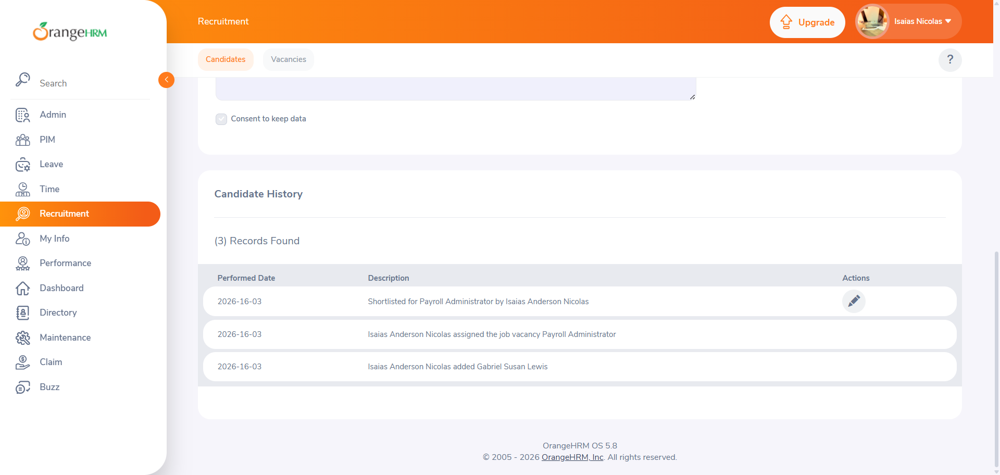
And User modifies the Job Vacancy of the candidate application formAnd Validate if the status is "Status: Application Initiated"hooks.Hooks.addScreenshot(io.cucumber.java.Scenario)Step: Validate if the status is Status: Application InitiatedScreenshot: Validate if the status is Status: Application Initiated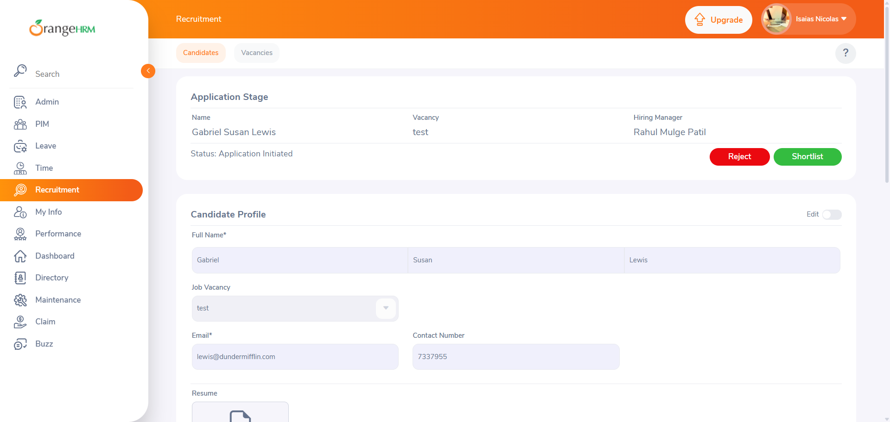
And Validate the Candidate History for "Removed" candidatehooks.Hooks.addScreenshot(io.cucumber.java.Scenario)Step: Validate the Candidate History for Removed candidateScreenshot: Validate the Candidate History for Removed candidate And Validate the Candidate History for "Reassigned" candidatehooks.Hooks.addScreenshot(io.cucumber.java.Scenario)Step: Validate the Candidate History for Reassigned candidateScreenshot: Validate the Candidate History for Reassigned candidate
And Validate the Candidate History for "Reassigned" candidatehooks.Hooks.addScreenshot(io.cucumber.java.Scenario)Step: Validate the Candidate History for Reassigned candidateScreenshot: Validate the Candidate History for Reassigned candidate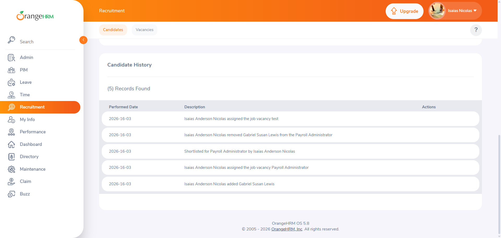
And Navigate to Candidates sectionAnd Check if candidate name appears in Candidate filterhooks.Hooks.addScreenshot(io.cucumber.java.Scenario)Step: Check if candidate name appears in Candidate filterScreenshot: Check if candidate name appears in Candidate filterAnd Filter Candidate list by newly added candidate nameAnd Check if the status of the candidate is "Application Initiated"hooks.Hooks.addScreenshot(io.cucumber.java.Scenario)Step: Check if the status of the candidate is Application InitiatedScreenshot: Check if the status of the candidate is Application InitiatedAnd Delete the Newly added candidatePassValidate if the Application returns to Application Initiated state from Interview Scheduled state after modifying Job Vacancy fieldPassValidate if the Application returns to Application Initiated state from Interview Scheduled state after modifying Job Vacancy fieldGiven User Logs in with Credentials and Navigates to Recruitment SectionWhen User Navigates to Add Candidate formThen User fill all Mandatory fields for user with first name as "Angela"And User fill all Non-Mandatory fields for user with first name as "Angela"And User Saves the formAnd Validate if Candidate details screen is visiblehooks.Hooks.addScreenshot(io.cucumber.java.Scenario)Step: Validate if Candidate details screen is visibleScreenshot: Validate if Candidate details screen is visibleAnd Validate if the status is "Status: Application Initiated"hooks.Hooks.addScreenshot(io.cucumber.java.Scenario)Step: Validate if the status is Status: Application InitiatedScreenshot: Validate if the status is Status: Application InitiatedAnd "Shortlist" the CandidateAnd Validate if Candidate details screen is visiblehooks.Hooks.addScreenshot(io.cucumber.java.Scenario)Step: Validate if Candidate details screen is visibleScreenshot: Validate if Candidate details screen is visibleAnd Validate if the status is "Status: Shortlisted"hooks.Hooks.addScreenshot(io.cucumber.java.Scenario)Step: Validate if the status is Status: ShortlistedScreenshot: Validate if the status is Status: ShortlistedAnd "Schedule Interview" the CandidateAnd Validate if Candidate details screen is visiblehooks.Hooks.addScreenshot(io.cucumber.java.Scenario)Step: Validate if Candidate details screen is visibleScreenshot: Validate if Candidate details screen is visibleAnd User modifies the Job Vacancy of the candidate application formAnd Validate if the status is "Status: Application Initiated"hooks.Hooks.addScreenshot(io.cucumber.java.Scenario)Step: Validate if the status is Status: Application InitiatedScreenshot: Validate if the status is Status: Application Initiated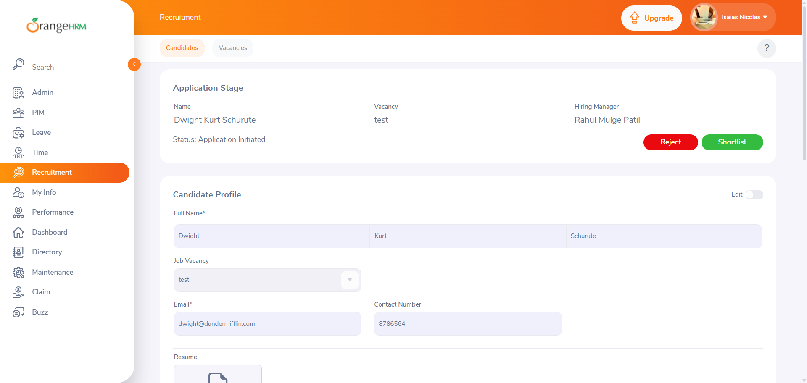
And Validate the Candidate History for "Removed" candidatehooks.Hooks.addScreenshot(io.cucumber.java.Scenario)Step: Validate the Candidate History for Removed candidateScreenshot: Validate the Candidate History for Removed candidate And Validate the Candidate History for "Reassigned" candidatehooks.Hooks.addScreenshot(io.cucumber.java.Scenario)Step: Validate the Candidate History for Reassigned candidateScreenshot: Validate the Candidate History for Reassigned candidateAnd Navigate to Candidates sectionAnd Check if candidate name appears in Candidate filterhooks.Hooks.addScreenshot(io.cucumber.java.Scenario)Step: Check if candidate name appears in Candidate filterScreenshot: Check if candidate name appears in Candidate filterAnd Filter Candidate list by newly added candidate nameAnd Check if the status of the candidate is "Application Initiated"hooks.Hooks.addScreenshot(io.cucumber.java.Scenario)Step: Check if the status of the candidate is Application InitiatedScreenshot: Check if the status of the candidate is Application InitiatedAnd Delete the Newly added candidateFailValidate if the Application returns to Application Initiated state from Interview Passed state after modifying Job Vacancy fieldFailValidate if the Application returns to Application Initiated state from Interview Passed state after modifying Job Vacancy fieldGiven User Logs in with Credentials and Navigates to Recruitment SectionWhen User Navigates to Add Candidate formThen User fill all Mandatory fields for user with first name as "James"And User fill all Non-Mandatory fields for user with first name as "James"And User Saves the formAnd Validate if Candidate details screen is visiblehooks.Hooks.addScreenshot(io.cucumber.java.Scenario)Step: Validate if Candidate details screen is visibleScreenshot: Validate if Candidate details screen is visible
And Validate the Candidate History for "Reassigned" candidatehooks.Hooks.addScreenshot(io.cucumber.java.Scenario)Step: Validate the Candidate History for Reassigned candidateScreenshot: Validate the Candidate History for Reassigned candidateAnd Navigate to Candidates sectionAnd Check if candidate name appears in Candidate filterhooks.Hooks.addScreenshot(io.cucumber.java.Scenario)Step: Check if candidate name appears in Candidate filterScreenshot: Check if candidate name appears in Candidate filterAnd Filter Candidate list by newly added candidate nameAnd Check if the status of the candidate is "Application Initiated"hooks.Hooks.addScreenshot(io.cucumber.java.Scenario)Step: Check if the status of the candidate is Application InitiatedScreenshot: Check if the status of the candidate is Application InitiatedAnd Delete the Newly added candidateFailValidate if the Application returns to Application Initiated state from Interview Passed state after modifying Job Vacancy fieldFailValidate if the Application returns to Application Initiated state from Interview Passed state after modifying Job Vacancy fieldGiven User Logs in with Credentials and Navigates to Recruitment SectionWhen User Navigates to Add Candidate formThen User fill all Mandatory fields for user with first name as "James"And User fill all Non-Mandatory fields for user with first name as "James"And User Saves the formAnd Validate if Candidate details screen is visiblehooks.Hooks.addScreenshot(io.cucumber.java.Scenario)Step: Validate if Candidate details screen is visibleScreenshot: Validate if Candidate details screen is visible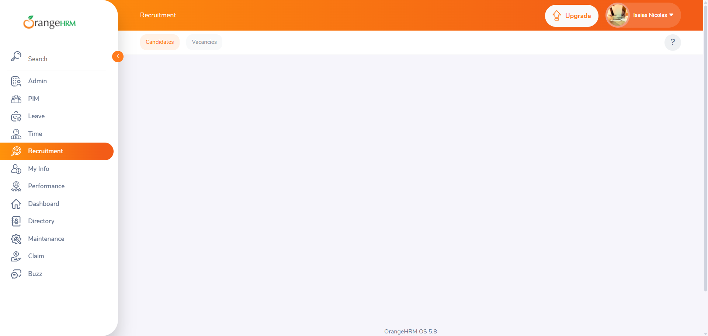
And Validate if the status is "Status: Application Initiated"Step skippedAnd "Shortlist" the CandidateStep skippedAnd Validate if Candidate details screen is visibleStep skippedAnd Validate if the status is "Status: Shortlisted"Step skippedAnd "Schedule Interview" the CandidateStep skippedAnd Validate if Candidate details screen is visibleStep skippedAnd "Mark Interview Passed" the CandidateStep skippedAnd Validate if Candidate details screen is visibleStep skippedAnd Validate if the status is "Status: Interview Passed"Step skippedAnd Validate the Candidate History for "Interview Passed" candidateStep skippedAnd User modifies the Job Vacancy of the candidate application formStep skippedAnd Validate if the status is "Status: Application Initiated"Step skippedAnd Validate the Candidate History for "Removed" candidateStep skippedAnd Validate the Candidate History for "Reassigned" candidateStep skippedAnd Navigate to Candidates sectionStep skippedAnd Check if candidate name appears in Candidate filterStep skippedAnd Filter Candidate list by newly added candidate nameStep skippedAnd Check if the status of the candidate is "Application Initiated"Step skippedAnd Delete the Newly added candidateStep skippedFailValidate if the Application returns to Application Initiated state from Interview Passed state after modifying Job Vacancy fieldFailValidate if the Application returns to Application Initiated state from Interview Passed state after modifying Job Vacancy fieldGiven User Logs in with Credentials and Navigates to Recruitment SectionWhen User Navigates to Add Candidate formThen User fill all Mandatory fields for user with first name as "Toby"And User fill all Non-Mandatory fields for user with first name as "Toby"And User Saves the formAnd Validate if Candidate details screen is visiblehooks.Hooks.addScreenshot(io.cucumber.java.Scenario)Step: Validate if Candidate details screen is visibleScreenshot: Validate if Candidate details screen is visibleAnd Validate if the status is "Status: Application Initiated"hooks.Hooks.addScreenshot(io.cucumber.java.Scenario)Step: Validate if the status is Status: Application InitiatedScreenshot: Validate if the status is Status: Application InitiatedAnd "Shortlist" the CandidateAnd Validate if Candidate details screen is visibleStep skippedAnd Validate if the status is "Status: Shortlisted"Step skippedAnd "Schedule Interview" the CandidateStep skippedAnd Validate if Candidate details screen is visibleStep skippedAnd "Mark Interview Passed" the CandidateStep skippedAnd Validate if Candidate details screen is visibleStep skippedAnd Validate if the status is "Status: Interview Passed"Step skippedAnd "Offer Job" the CandidateStep skippedAnd Validate if Candidate details screen is visibleStep skippedAnd Validate if the status is "Status: Job Offered"Step skippedAnd Check if the status of the candidate is "Job Offered"Step skippedAnd User modifies the Job Vacancy of the candidate application formStep skippedAnd Validate if the status is "Status: Application Initiated"Step skippedAnd Validate the Candidate History for "Removed" candidateStep skippedAnd Validate the Candidate History for "Reassigned" candidateStep skippedAnd Navigate to Candidates sectionStep skippedAnd Check if candidate name appears in Candidate filterStep skippedAnd Filter Candidate list by newly added candidate nameStep skippedAnd Check if the status of the candidate is "Application Initiated"Step skippedAnd Delete the Newly added candidateStep skipped -
Add a new Vacancy
12:25:46 pm / 00:05:40:459 Fail
Add a new Vacancy
03.16.2026 12:25:46 pm 03.16.2026 12:31:26 pm 00:05:40:459 · #test-id=1830PassValidate adding and deleting of vacancyPassValidate adding and deleting of vacancyGiven User Logs in with Credentials and Navigates to Recruitment SectionWhen Clicks on VacancyAnd Navigate to Vacancy formAnd Fills the Job Vacancy form for "QA Lead" position with Hiring Manager as "Radha"And Saves the formAnd Navigates back to Vacancies to see the vacancy tableThen The newly added Job Vacancy for "QA Lead" position with Hiring Manager as "Radha" should be visible in the tableThen Delete the newly added vacancy for "QA Lead" position with Hiring Manager as "Radha" and validate if the deleted vacancy is removed from the vacancy tablePassValidate whether user can create duplicate vacancyGiven User Logs in with Credentials and Navigates to Recruitment SectionWhen Clicks on VacancyAnd Capture an existing vacancy from the vacancy tableAnd Navigate to Vacancy formAnd Navigates to fill Vacancy form and enters the captured vacancy in vacancy nameThen Already exists error message should be displayed under the text boxPassValidate whether user can search newly added vacancy using vacancy namePassValidate whether user can search newly added vacancy using vacancy nameGiven User Logs in with Credentials and Navigates to Recruitment SectionWhen Clicks on VacancyAnd Navigate to Vacancy formAnd Fills the Job Vacancy form for "QA Lead" position with Hiring Manager as "Radha"And Saves the formAnd Navigates back to Vacancies to see the vacancy tableAnd Search for the vacancy by vacancy nameThen Check if the newly added vacancy is filtered and displayed in the vacancy tableThen Delete the newly added vacancy for "QA Lead" position with Hiring Manager as "Radha" and validate if the deleted vacancy is removed from the vacancy tableFailValidate whether user can edit a Vacancy detailFailValidate whether user can edit a Vacancy detailGiven User Logs in with Credentials and Navigates to Recruitment SectionWhen Clicks on VacancyAnd Navigate to Vacancy formAnd Fills the Job Vacancy form for "QA Lead" position with Hiring Manager as "Radha"And Saves the formAnd Navigates back to Vacancies to see the vacancy tableAnd Search for the vacancy by vacancy nameAnd Click on Edit Icon for "QA Lead" position with Hiring Manager as "Radha"And Update the Job title field to "Content Specialist"And Saves the formStep skippedAnd Navigates back to Vacancies to see the vacancy tableStep skippedAnd Search for the vacancy by vacancy nameStep skippedThen Validate if the Job title is updated for the Vacancy to "Content Specialist"Step skippedThen Delete the newly added vacancy for "Content Specialist" position with Hiring Manager as "Radha" and validate if the deleted vacancy is removed from the vacancy tableStep skippedPassValidate whether user gets Mandatory field errorPassValidate whether user gets Mandatory field errorGiven User Logs in with Credentials and Navigates to Recruitment SectionWhen Clicks on VacancyAnd Navigate to Vacancy formAnd Saves the formThen Validate if Mandatory field error is displayed under all Mandatory fieldsAnd Fills the Job Vacancy form for "QA Lead" position with Hiring Manager as "Radha"And Clears each of the Mandatory fields to check if Mandatory error is thrown again for the respective fieldPassValidate whether user can see newly added vacancy in Candidates sectionPassValidate whether user can see newly added vacancy in Candidates sectionGiven User Logs in with Credentials and Navigates to Recruitment SectionWhen Clicks on VacancyAnd Navigate to Vacancy formAnd Fills the Job Vacancy form for "QA Lead" position with Hiring Manager as "Radha"And Saves the formAnd Navigate to Candidates sectionThen Validate if the vacancy name is displayed in the respective dropdownAnd Clicks on VacancyAnd Search for the vacancy by vacancy nameAnd Delete the newly added vacancy for "QA Lead" position with Hiring Manager as "Radha" and validate if the deleted vacancy is removed from the vacancy table
-
org.openqa.selenium.NoSuchElementException
15 tests
org.openqa.selenium.NoSuchElementException
15 failedStatus Timestamp TestName Fail 11:59:01 am When User filter Candidate list by "Shortlisted" Candidates Add new Candidate and validate its behaviour.Validate if user can enter date of format: "yyyy-dd-mm" in date field of Schedule Interview screen and gets appropriate error message only if the format is invalid.When User filter Candidate list by "Shortlisted" CandidatesFail 11:59:31 am When User filter Candidate list by "Shortlisted" Candidates Add new Candidate and validate its behaviour.Validate if user can enter date of format: "mm-dd-yyyy" in date field of Schedule Interview screen and gets appropriate error message only if the format is invalid.When User filter Candidate list by "Shortlisted" CandidatesFail 12:00:04 pm When User filter Candidate list by "Shortlisted" Candidates Add new Candidate and validate its behaviour.Validate if user can enter date of format: "yyyy/dd/mm" in date field of Schedule Interview screen and gets appropriate error message only if the format is invalid.When User filter Candidate list by "Shortlisted" CandidatesFail 12:00:32 pm When User filter Candidate list by "Shortlisted" Candidates Add new Candidate and validate its behaviour.Validate if user can enter date of format: "mm/dd/yyyy" in date field of Schedule Interview screen and gets appropriate error message only if the format is invalid.When User filter Candidate list by "Shortlisted" CandidatesFail 12:03:12 pm When User filter Candidate list by "Shortlisted" Candidates Add new Candidate and validate its behaviour.Validate if user can enter date of format: "dd/yyyy/mm" in date field of Schedule Interview screen and gets appropriate error message only if the format is invalid.When User filter Candidate list by "Shortlisted" CandidatesFail 12:08:30 pm And Validate if Candidate details screen is visible Add new Candidate and validate its behaviour.User Validates adding a New Candidate and deleting the newly added candidate.And Validate if Candidate details screen is visibleFail 12:09:21 pm And Validate if Candidate details screen is visible Add new Candidate and validate its behaviour.Validate candidate rejection from Application Initiated stage and Candidate History.And Validate if Candidate details screen is visibleFail 12:10:38 pm And Validate if Candidate details screen is visible Add new Candidate and validate its behaviour.Validate if user can Shortlist a candidate, reject the candidate from shortlisted stage and validate the candidate History.And Validate if Candidate details screen is visibleFail 12:11:26 pm And Validate if Candidate details screen is visible Add new Candidate and validate its behaviour.Validate if user can Schedule Interview for a candidate, reject the candidate from Interview Scheduled stage and validate the candidate History.And Validate if Candidate details screen is visibleFail 12:14:50 pm And "Schedule Interview" the Candidate Add new Candidate and validate its behaviour.Validate if user can mark Interview Passed for a candidate, reject the candidate from Interview Passed stage and validate the candidate history.And "Schedule Interview" the CandidateFail 12:18:24 pm And Validate if Candidate details screen is visible Add new Candidate and validate its behaviour.Validate if user can mark Interview passed for a candidate in the second round of interview, then reject the candidate from Interview passed stage and validate the candidate history.And Validate if Candidate details screen is visibleFail 12:19:19 pm And Validate if Candidate details screen is visible Add new Candidate and validate its behaviour.Validate if user can Offer job for candidate who passed second round of interview, then reject the candidate from Job Offered stage and validate the candidate history.And Validate if Candidate details screen is visibleFail 12:20:27 pm And Validate if Candidate details screen is visible Add new Candidate and validate its behaviour.Validate if user can Decline Job Offer for candidate who was offered the Job, then reject the candidate from Offer Declined stage and validate the candidate history.And Validate if Candidate details screen is visibleFail 12:21:30 pm And Validate if Candidate details screen is visible Add new Candidate and validate its behaviour.Validate if user can Hire the candidate who was offered the Job and validate the candidate history.And Validate if Candidate details screen is visibleFail 12:24:52 pm And Validate if Candidate details screen is visible Add new Candidate and validate its behaviour.Validate if the Application returns to Application Initiated state from Interview Passed state after modifying Job Vacancy field.And Validate if Candidate details screen is visible -
org.openqa.selenium.ElementClickInterceptedException
9 tests
org.openqa.selenium.ElementClickInterceptedException
9 failedStatus Timestamp TestName Fail 12:02:31 pm Then User enters Date of format: "dd-yyyy-mm" and validates if error message is displayed if the entered date is invalid Add new Candidate and validate its behaviour.Validate if user can enter date of format: "dd-yyyy-mm" in date field of Schedule Interview screen and gets appropriate error message only if the format is invalid.Then User enters Date of format: "dd-yyyy-mm" and validates if error message is displayed if the entered date is invalidFail 12:03:42 pm Then User enters Date of format: "ddmmyyyy" and validates if error message is displayed if the entered date is invalid Add new Candidate and validate its behaviour.Validate if user can enter date of format: "ddmmyyyy" in date field of Schedule Interview screen and gets appropriate error message only if the format is invalid.Then User enters Date of format: "ddmmyyyy" and validates if error message is displayed if the entered date is invalidFail 12:04:44 pm Then User enters Date of format: "mmddyyyy" and validates if error message is displayed if the entered date is invalid Add new Candidate and validate its behaviour.Validate if user can enter date of format: "mmddyyyy" in date field of Schedule Interview screen and gets appropriate error message only if the format is invalid.Then User enters Date of format: "mmddyyyy" and validates if error message is displayed if the entered date is invalidFail 12:05:10 pm Then User enters Date of format: "yyyymmdd" and validates if error message is displayed if the entered date is invalid Add new Candidate and validate its behaviour.Validate if user can enter date of format: "yyyymmdd" in date field of Schedule Interview screen and gets appropriate error message only if the format is invalid.Then User enters Date of format: "yyyymmdd" and validates if error message is displayed if the entered date is invalidFail 12:06:06 pm Then User enters Date of format: "mmyyyydd" and validates if error message is displayed if the entered date is invalid Add new Candidate and validate its behaviour.Validate if user can enter date of format: "mmyyyydd" in date field of Schedule Interview screen and gets appropriate error message only if the format is invalid.Then User enters Date of format: "mmyyyydd" and validates if error message is displayed if the entered date is invalidFail 12:06:36 pm Then User enters Date of format: "dd-mm-yyyy" and validates if error message is displayed if the entered date is invalid Add new Candidate and validate its behaviour.Validate if user can enter date of format: "dd-mm-yyyy" in date field of Schedule Interview screen and gets appropriate error message only if the format is invalid.Then User enters Date of format: "dd-mm-yyyy" and validates if error message is displayed if the entered date is invalidFail 12:15:42 pm And User Saves the form Add new Candidate and validate its behaviour.Validate if user can Schedule another Interview for the candidate from Interview Passed stage, again reject the candidate from Interview Scheduled stage and validate the candidate History.And User Saves the formFail 12:25:36 pm And "Shortlist" the Candidate Add new Candidate and validate its behaviour.Validate if the Application returns to Application Initiated state from Interview Passed state after modifying Job Vacancy field.And "Shortlist" the CandidateFail 12:28:44 pm And Update the Job title field to "Content Specialist" Add a new Vacancy.Validate whether user can edit a Vacancy detail.And Update the Job title field to "Content Specialist"
-
@Flow_Sanity1
6 tests
@Flow_Sanity1
1 passed 5 failedStatus Timestamp TestName Fail 12:08:40 pm Validate candidate rejection from Application Initiated stage and Candidate History Add new Candidate and validate its behaviour.Validate candidate rejection from Application Initiated stage and Candidate HistoryFail 12:09:32 pm Validate if user can Shortlist a candidate, reject the candidate from shortlisted stage and validate the candidate History Add new Candidate and validate its behaviour.Validate if user can Shortlist a candidate, reject the candidate from shortlisted stage and validate the candidate HistoryPass 12:11:36 pm Validate the candidate to interview feature in Dashboard screen Add new Candidate and validate its behaviour.Validate the candidate to interview feature in Dashboard screenFail 12:18:35 pm Validate if user can Offer job for candidate who passed second round of interview, then reject the candidate from Job Offered stage and validate the candidate history Add new Candidate and validate its behaviour.Validate if user can Offer job for candidate who passed second round of interview, then reject the candidate from Job Offered stage and validate the candidate historyFail 12:19:32 pm Validate if user can Decline Job Offer for candidate who was offered the Job, then reject the candidate from Offer Declined stage and validate the candidate history Add new Candidate and validate its behaviour.Validate if user can Decline Job Offer for candidate who was offered the Job, then reject the candidate from Offer Declined stage and validate the candidate historyFail 12:20:37 pm Validate if user can Hire the candidate who was offered the Job and validate the candidate history Add new Candidate and validate its behaviour.Validate if user can Hire the candidate who was offered the Job and validate the candidate history -
@Flow_Sanity2
1 tests
@Flow_Sanity2
1 failedStatus Timestamp TestName Fail 12:25:03 pm Validate if the Application returns to Application Initiated state from Interview Passed state after modifying Job Vacancy field Add new Candidate and validate its behaviour.Validate if the Application returns to Application Initiated state from Interview Passed state after modifying Job Vacancy field -
@Recruitement_Regression
92 tests
@Recruitement_Regression
68 passed 24 failedStatus Timestamp TestName Pass 11:31:10 am Validate user trying to upload different types of files with valid format in Resume field of Add Candidate form Add new Candidate and validate its behaviour.Validate user trying to upload different types of files with valid format in Resume field of Add Candidate formPass 11:31:43 am Validate user trying to upload different types of files with valid format in Resume field of Add Candidate form Add new Candidate and validate its behaviour.Validate user trying to upload different types of files with valid format in Resume field of Add Candidate formPass 11:32:10 am Validate user trying to upload different types of files with valid format in Resume field of Add Candidate form Add new Candidate and validate its behaviour.Validate user trying to upload different types of files with valid format in Resume field of Add Candidate formPass 11:32:35 am Validate user trying to upload different types of files with valid format in Resume field of Add Candidate form Add new Candidate and validate its behaviour.Validate user trying to upload different types of files with valid format in Resume field of Add Candidate formPass 11:32:59 am Validate user trying to upload different types of files with valid format in Resume field of Add Candidate form Add new Candidate and validate its behaviour.Validate user trying to upload different types of files with valid format in Resume field of Add Candidate formPass 11:33:23 am Validate user trying to upload different types of files with valid format in Resume field of Add Candidate form Add new Candidate and validate its behaviour.Validate user trying to upload different types of files with valid format in Resume field of Add Candidate formPass 11:33:47 am Validate if user gets appropriate error message when uploading an invalid file in Resume field Add new Candidate and validate its behaviour.Validate if user gets appropriate error message when uploading an invalid file in Resume fieldPass 11:34:14 am Validate if user gets appropriate error message when uploading an invalid file in Resume field Add new Candidate and validate its behaviour.Validate if user gets appropriate error message when uploading an invalid file in Resume fieldPass 11:34:43 am Validate if user gets appropriate error message when uploading an invalid file in Resume field Add new Candidate and validate its behaviour.Validate if user gets appropriate error message when uploading an invalid file in Resume fieldPass 11:35:14 am Validate if user gets appropriate error message when uploading an invalid file in Resume field Add new Candidate and validate its behaviour.Validate if user gets appropriate error message when uploading an invalid file in Resume fieldPass 11:35:40 am Validate if user gets appropriate error message when uploading an invalid file in Resume field Add new Candidate and validate its behaviour.Validate if user gets appropriate error message when uploading an invalid file in Resume fieldPass 11:36:32 am Validate if user gets appropriate error message when uploading an invalid file in Resume field Add new Candidate and validate its behaviour.Validate if user gets appropriate error message when uploading an invalid file in Resume fieldPass 11:37:01 am Validate if user gets appropriate error message if an invalid Contact Number is entered Add new Candidate and validate its behaviour.Validate if user gets appropriate error message if an invalid Contact Number is enteredPass 11:37:51 am Validate if user gets appropriate error message if an invalid Contact Number is entered Add new Candidate and validate its behaviour.Validate if user gets appropriate error message if an invalid Contact Number is enteredPass 11:38:34 am Validate if user gets appropriate error message if an invalid Contact Number is entered Add new Candidate and validate its behaviour.Validate if user gets appropriate error message if an invalid Contact Number is enteredPass 11:39:32 am Validate if user gets appropriate error message if an invalid Contact Number is entered Add new Candidate and validate its behaviour.Validate if user gets appropriate error message if an invalid Contact Number is enteredPass 11:40:51 am Validate if user gets appropriate error message if an invalid Contact Number is entered Add new Candidate and validate its behaviour.Validate if user gets appropriate error message if an invalid Contact Number is enteredPass 11:41:32 am Validate if user gets appropriate error message if an invalid Contact Number is entered Add new Candidate and validate its behaviour.Validate if user gets appropriate error message if an invalid Contact Number is enteredPass 11:42:02 am Validate if user gets appropriate error message if an invalid Contact Number is entered Add new Candidate and validate its behaviour.Validate if user gets appropriate error message if an invalid Contact Number is enteredPass 11:42:48 am Validate if user gets appropriate error message if an invalid Contact Number is entered Add new Candidate and validate its behaviour.Validate if user gets appropriate error message if an invalid Contact Number is enteredPass 11:43:38 am Validate if user gets appropriate error message if an invalid Contact Number is entered Add new Candidate and validate its behaviour.Validate if user gets appropriate error message if an invalid Contact Number is enteredPass 11:44:17 am Validate if user gets appropriate error message if an invalid Contact Number is entered Add new Candidate and validate its behaviour.Validate if user gets appropriate error message if an invalid Contact Number is enteredPass 11:44:55 am Validate if user gets appropriate error message if an invalid Contact Number is entered Add new Candidate and validate its behaviour.Validate if user gets appropriate error message if an invalid Contact Number is enteredPass 11:45:19 am Validate if user gets appropriate error message if an invalid Contact Number is entered Add new Candidate and validate its behaviour.Validate if user gets appropriate error message if an invalid Contact Number is enteredPass 11:45:40 am Validate if user gets appropriate error message when entering email in invalid format Add new Candidate and validate its behaviour.Validate if user gets appropriate error message when entering email in invalid formatPass 11:46:22 am Validate if user gets appropriate error message when entering email in invalid format Add new Candidate and validate its behaviour.Validate if user gets appropriate error message when entering email in invalid formatPass 11:47:10 am Validate if user gets appropriate error message when entering email in invalid format Add new Candidate and validate its behaviour.Validate if user gets appropriate error message when entering email in invalid formatPass 11:47:34 am Validate if user gets appropriate error message when entering email in invalid format Add new Candidate and validate its behaviour.Validate if user gets appropriate error message when entering email in invalid formatPass 11:48:09 am Validate if user gets appropriate error message when entering email in invalid format Add new Candidate and validate its behaviour.Validate if user gets appropriate error message when entering email in invalid formatPass 11:48:44 am Validate if user gets appropriate error message when entering email in invalid format Add new Candidate and validate its behaviour.Validate if user gets appropriate error message when entering email in invalid formatPass 11:49:37 am Validate if user can enter a date in date of Application field and gets appropriate error message only if the date is a future date Add new Candidate and validate its behaviour.Validate if user can enter a date in date of Application field and gets appropriate error message only if the date is a future datePass 11:50:15 am Validate if user can enter a date in date of Application field and gets appropriate error message only if the date is a future date Add new Candidate and validate its behaviour.Validate if user can enter a date in date of Application field and gets appropriate error message only if the date is a future datePass 11:50:37 am Validate if user can enter a date in date of Application field and gets appropriate error message only if the date is a future date Add new Candidate and validate its behaviour.Validate if user can enter a date in date of Application field and gets appropriate error message only if the date is a future datePass 11:50:58 am Validate if user can enter date of format: "yyyy-dd-mm" in date of Application field and gets appropriate error message only if the format is invalid Add new Candidate and validate its behaviour.Validate if user can enter date of format: "yyyy-dd-mm" in date of Application field and gets appropriate error message only if the format is invalidPass 11:51:28 am Validate if user can enter date of format: "mm-dd-yyyy" in date of Application field and gets appropriate error message only if the format is invalid Add new Candidate and validate its behaviour.Validate if user can enter date of format: "mm-dd-yyyy" in date of Application field and gets appropriate error message only if the format is invalidPass 11:52:07 am Validate if user can enter date of format: "yyyy/dd/mm" in date of Application field and gets appropriate error message only if the format is invalid Add new Candidate and validate its behaviour.Validate if user can enter date of format: "yyyy/dd/mm" in date of Application field and gets appropriate error message only if the format is invalidPass 11:52:36 am Validate if user can enter date of format: "mm/dd/yyyy" in date of Application field and gets appropriate error message only if the format is invalid Add new Candidate and validate its behaviour.Validate if user can enter date of format: "mm/dd/yyyy" in date of Application field and gets appropriate error message only if the format is invalidPass 11:53:03 am Validate if user can enter date of format: "yyyy/mm/dd" in date of Application field and gets appropriate error message only if the format is invalid Add new Candidate and validate its behaviour.Validate if user can enter date of format: "yyyy/mm/dd" in date of Application field and gets appropriate error message only if the format is invalidPass 11:53:32 am Validate if user can enter date of format: "dd/mm/yyyy" in date of Application field and gets appropriate error message only if the format is invalid Add new Candidate and validate its behaviour.Validate if user can enter date of format: "dd/mm/yyyy" in date of Application field and gets appropriate error message only if the format is invalidPass 11:54:03 am Validate if user can enter date of format: "mm-yyyy-dd" in date of Application field and gets appropriate error message only if the format is invalid Add new Candidate and validate its behaviour.Validate if user can enter date of format: "mm-yyyy-dd" in date of Application field and gets appropriate error message only if the format is invalidPass 11:54:26 am Validate if user can enter date of format: "dd-yyyy-mm" in date of Application field and gets appropriate error message only if the format is invalid Add new Candidate and validate its behaviour.Validate if user can enter date of format: "dd-yyyy-mm" in date of Application field and gets appropriate error message only if the format is invalidPass 11:54:51 am Validate if user can enter date of format: "mm/yyyy/dd" in date of Application field and gets appropriate error message only if the format is invalid Add new Candidate and validate its behaviour.Validate if user can enter date of format: "mm/yyyy/dd" in date of Application field and gets appropriate error message only if the format is invalidPass 11:55:13 am Validate if user can enter date of format: "dd/yyyy/mm" in date of Application field and gets appropriate error message only if the format is invalid Add new Candidate and validate its behaviour.Validate if user can enter date of format: "dd/yyyy/mm" in date of Application field and gets appropriate error message only if the format is invalidPass 11:55:37 am Validate if user can enter date of format: "ddmmyyyy" in date of Application field and gets appropriate error message only if the format is invalid Add new Candidate and validate its behaviour.Validate if user can enter date of format: "ddmmyyyy" in date of Application field and gets appropriate error message only if the format is invalidPass 11:56:05 am Validate if user can enter date of format: "yyyyddmm" in date of Application field and gets appropriate error message only if the format is invalid Add new Candidate and validate its behaviour.Validate if user can enter date of format: "yyyyddmm" in date of Application field and gets appropriate error message only if the format is invalidPass 11:56:33 am Validate if user can enter date of format: "mmddyyyy" in date of Application field and gets appropriate error message only if the format is invalid Add new Candidate and validate its behaviour.Validate if user can enter date of format: "mmddyyyy" in date of Application field and gets appropriate error message only if the format is invalidPass 11:56:57 am Validate if user can enter date of format: "yyyymmdd" in date of Application field and gets appropriate error message only if the format is invalid Add new Candidate and validate its behaviour.Validate if user can enter date of format: "yyyymmdd" in date of Application field and gets appropriate error message only if the format is invalidPass 11:57:18 am Validate if user can enter date of format: "ddyyyymm" in date of Application field and gets appropriate error message only if the format is invalid Add new Candidate and validate its behaviour.Validate if user can enter date of format: "ddyyyymm" in date of Application field and gets appropriate error message only if the format is invalidPass 11:57:41 am Validate if user can enter date of format: "mmyyyydd" in date of Application field and gets appropriate error message only if the format is invalid Add new Candidate and validate its behaviour.Validate if user can enter date of format: "mmyyyydd" in date of Application field and gets appropriate error message only if the format is invalidPass 11:58:06 am Validate if user can enter date of format: "dd-mm-yyyy" in date of Application field and gets appropriate error message only if the format is invalid Add new Candidate and validate its behaviour.Validate if user can enter date of format: "dd-mm-yyyy" in date of Application field and gets appropriate error message only if the format is invalidFail 11:58:34 am Validate if user can enter date of format: "yyyy-dd-mm" in date field of Schedule Interview screen and gets appropriate error message only if the format is invalid Add new Candidate and validate its behaviour.Validate if user can enter date of format: "yyyy-dd-mm" in date field of Schedule Interview screen and gets appropriate error message only if the format is invalidFail 11:59:07 am Validate if user can enter date of format: "mm-dd-yyyy" in date field of Schedule Interview screen and gets appropriate error message only if the format is invalid Add new Candidate and validate its behaviour.Validate if user can enter date of format: "mm-dd-yyyy" in date field of Schedule Interview screen and gets appropriate error message only if the format is invalidFail 11:59:37 am Validate if user can enter date of format: "yyyy/dd/mm" in date field of Schedule Interview screen and gets appropriate error message only if the format is invalid Add new Candidate and validate its behaviour.Validate if user can enter date of format: "yyyy/dd/mm" in date field of Schedule Interview screen and gets appropriate error message only if the format is invalidFail 12:00:11 pm Validate if user can enter date of format: "mm/dd/yyyy" in date field of Schedule Interview screen and gets appropriate error message only if the format is invalid Add new Candidate and validate its behaviour.Validate if user can enter date of format: "mm/dd/yyyy" in date field of Schedule Interview screen and gets appropriate error message only if the format is invalidPass 12:00:36 pm Validate if user can enter date of format: "yyyy/mm/dd" in date field of Schedule Interview screen and gets appropriate error message only if the format is invalid Add new Candidate and validate its behaviour.Validate if user can enter date of format: "yyyy/mm/dd" in date field of Schedule Interview screen and gets appropriate error message only if the format is invalidPass 12:01:01 pm Validate if user can enter date of format: "dd/mm/yyyy" in date field of Schedule Interview screen and gets appropriate error message only if the format is invalid Add new Candidate and validate its behaviour.Validate if user can enter date of format: "dd/mm/yyyy" in date field of Schedule Interview screen and gets appropriate error message only if the format is invalidPass 12:01:31 pm Validate if user can enter date of format: "mm-yyyy-dd" in date field of Schedule Interview screen and gets appropriate error message only if the format is invalid Add new Candidate and validate its behaviour.Validate if user can enter date of format: "mm-yyyy-dd" in date field of Schedule Interview screen and gets appropriate error message only if the format is invalidFail 12:02:04 pm Validate if user can enter date of format: "dd-yyyy-mm" in date field of Schedule Interview screen and gets appropriate error message only if the format is invalid Add new Candidate and validate its behaviour.Validate if user can enter date of format: "dd-yyyy-mm" in date field of Schedule Interview screen and gets appropriate error message only if the format is invalidPass 12:02:33 pm Validate if user can enter date of format: "mm/yyyy/dd" in date field of Schedule Interview screen and gets appropriate error message only if the format is invalid Add new Candidate and validate its behaviour.Validate if user can enter date of format: "mm/yyyy/dd" in date field of Schedule Interview screen and gets appropriate error message only if the format is invalidFail 12:02:59 pm Validate if user can enter date of format: "dd/yyyy/mm" in date field of Schedule Interview screen and gets appropriate error message only if the format is invalid Add new Candidate and validate its behaviour.Validate if user can enter date of format: "dd/yyyy/mm" in date field of Schedule Interview screen and gets appropriate error message only if the format is invalidFail 12:03:16 pm Validate if user can enter date of format: "ddmmyyyy" in date field of Schedule Interview screen and gets appropriate error message only if the format is invalid Add new Candidate and validate its behaviour.Validate if user can enter date of format: "ddmmyyyy" in date field of Schedule Interview screen and gets appropriate error message only if the format is invalidPass 12:03:44 pm Validate if user can enter date of format: "yyyyddmm" in date field of Schedule Interview screen and gets appropriate error message only if the format is invalid Add new Candidate and validate its behaviour.Validate if user can enter date of format: "yyyyddmm" in date field of Schedule Interview screen and gets appropriate error message only if the format is invalidFail 12:04:17 pm Validate if user can enter date of format: "mmddyyyy" in date field of Schedule Interview screen and gets appropriate error message only if the format is invalid Add new Candidate and validate its behaviour.Validate if user can enter date of format: "mmddyyyy" in date field of Schedule Interview screen and gets appropriate error message only if the format is invalidFail 12:04:46 pm Validate if user can enter date of format: "yyyymmdd" in date field of Schedule Interview screen and gets appropriate error message only if the format is invalid Add new Candidate and validate its behaviour.Validate if user can enter date of format: "yyyymmdd" in date field of Schedule Interview screen and gets appropriate error message only if the format is invalidPass 12:05:12 pm Validate if user can enter date of format: "ddyyyymm" in date field of Schedule Interview screen and gets appropriate error message only if the format is invalid Add new Candidate and validate its behaviour.Validate if user can enter date of format: "ddyyyymm" in date field of Schedule Interview screen and gets appropriate error message only if the format is invalidFail 12:05:38 pm Validate if user can enter date of format: "mmyyyydd" in date field of Schedule Interview screen and gets appropriate error message only if the format is invalid Add new Candidate and validate its behaviour.Validate if user can enter date of format: "mmyyyydd" in date field of Schedule Interview screen and gets appropriate error message only if the format is invalidFail 12:06:08 pm Validate if user can enter date of format: "dd-mm-yyyy" in date field of Schedule Interview screen and gets appropriate error message only if the format is invalid Add new Candidate and validate its behaviour.Validate if user can enter date of format: "dd-mm-yyyy" in date field of Schedule Interview screen and gets appropriate error message only if the format is invalidPass 12:06:38 pm Validate if user gets appropriate error message when Mandaotry fields are not filled Add new Candidate and validate its behaviour.Validate if user gets appropriate error message when Mandaotry fields are not filledPass 12:07:13 pm Validate if user gets appropriate error message when Mandaotry fields are not filled in Schedule Interview screen Add new Candidate and validate its behaviour.Validate if user gets appropriate error message when Mandaotry fields are not filled in Schedule Interview screenFail 12:08:09 pm User Validates adding a New Candidate and deleting the newly added candidate Add new Candidate and validate its behaviour.User Validates adding a New Candidate and deleting the newly added candidateFail 12:08:40 pm Validate candidate rejection from Application Initiated stage and Candidate History Add new Candidate and validate its behaviour.Validate candidate rejection from Application Initiated stage and Candidate HistoryFail 12:09:32 pm Validate if user can Shortlist a candidate, reject the candidate from shortlisted stage and validate the candidate History Add new Candidate and validate its behaviour.Validate if user can Shortlist a candidate, reject the candidate from shortlisted stage and validate the candidate HistoryFail 12:10:49 pm Validate if user can Schedule Interview for a candidate, reject the candidate from Interview Scheduled stage and validate the candidate History Add new Candidate and validate its behaviour.Validate if user can Schedule Interview for a candidate, reject the candidate from Interview Scheduled stage and validate the candidate HistoryPass 12:11:36 pm Validate the candidate to interview feature in Dashboard screen Add new Candidate and validate its behaviour.Validate the candidate to interview feature in Dashboard screenPass 12:12:32 pm Validate if user can mark Interview failed for a candidate, reject the candidate from Interview Failed stage and validate the candidate history Add new Candidate and validate its behaviour.Validate if user can mark Interview failed for a candidate, reject the candidate from Interview Failed stage and validate the candidate historyFail 12:14:06 pm Validate if user can mark Interview Passed for a candidate, reject the candidate from Interview Passed stage and validate the candidate history Add new Candidate and validate its behaviour.Validate if user can mark Interview Passed for a candidate, reject the candidate from Interview Passed stage and validate the candidate historyFail 12:15:02 pm Validate if user can Schedule another Interview for the candidate from Interview Passed stage, again reject the candidate from Interview Scheduled stage and validate the candidate History Add new Candidate and validate its behaviour.Validate if user can Schedule another Interview for the candidate from Interview Passed stage, again reject the candidate from Interview Scheduled stage and validate the candidate HistoryPass 12:15:44 pm Validate if user can mark Interview failed for a candidate in the second round of interview, then reject the candidate from Interview Failed stage and validate the candidate history Add new Candidate and validate its behaviour.Validate if user can mark Interview failed for a candidate in the second round of interview, then reject the candidate from Interview Failed stage and validate the candidate historyFail 12:17:34 pm Validate if user can mark Interview passed for a candidate in the second round of interview, then reject the candidate from Interview passed stage and validate the candidate history Add new Candidate and validate its behaviour.Validate if user can mark Interview passed for a candidate in the second round of interview, then reject the candidate from Interview passed stage and validate the candidate historyFail 12:18:35 pm Validate if user can Offer job for candidate who passed second round of interview, then reject the candidate from Job Offered stage and validate the candidate history Add new Candidate and validate its behaviour.Validate if user can Offer job for candidate who passed second round of interview, then reject the candidate from Job Offered stage and validate the candidate historyFail 12:19:32 pm Validate if user can Decline Job Offer for candidate who was offered the Job, then reject the candidate from Offer Declined stage and validate the candidate history Add new Candidate and validate its behaviour.Validate if user can Decline Job Offer for candidate who was offered the Job, then reject the candidate from Offer Declined stage and validate the candidate historyFail 12:20:37 pm Validate if user can Hire the candidate who was offered the Job and validate the candidate history Add new Candidate and validate its behaviour.Validate if user can Hire the candidate who was offered the Job and validate the candidate historyPass 12:21:43 pm Validate if the Application returns to Application Initiated state from Shortlisted state after modifying Job Vacancy field Add new Candidate and validate its behaviour.Validate if the Application returns to Application Initiated state from Shortlisted state after modifying Job Vacancy fieldPass 12:23:05 pm Validate if the Application returns to Application Initiated state from Interview Scheduled state after modifying Job Vacancy field Add new Candidate and validate its behaviour.Validate if the Application returns to Application Initiated state from Interview Scheduled state after modifying Job Vacancy fieldFail 12:24:23 pm Validate if the Application returns to Application Initiated state from Interview Passed state after modifying Job Vacancy field Add new Candidate and validate its behaviour.Validate if the Application returns to Application Initiated state from Interview Passed state after modifying Job Vacancy fieldFail 12:25:03 pm Validate if the Application returns to Application Initiated state from Interview Passed state after modifying Job Vacancy field Add new Candidate and validate its behaviour.Validate if the Application returns to Application Initiated state from Interview Passed state after modifying Job Vacancy fieldPass 12:25:46 pm Validate adding and deleting of vacancy Add a new Vacancy.Validate adding and deleting of vacancyPass 12:26:35 pm Validate whether user can create duplicate vacancy Add a new Vacancy.Validate whether user can create duplicate vacancyPass 12:27:06 pm Validate whether user can search newly added vacancy using vacancy name Add a new Vacancy.Validate whether user can search newly added vacancy using vacancy nameFail 12:28:00 pm Validate whether user can edit a Vacancy detail Add a new Vacancy.Validate whether user can edit a Vacancy detailPass 12:28:48 pm Validate whether user gets Mandatory field error Add a new Vacancy.Validate whether user gets Mandatory field errorPass 12:29:55 pm Validate whether user can see newly added vacancy in Candidates section Add a new Vacancy.Validate whether user can see newly added vacancy in Candidates section -
@Candidates_Suite
86 tests
@Candidates_Suite
63 passed 23 failedStatus Timestamp TestName Pass 11:31:10 am Validate user trying to upload different types of files with valid format in Resume field of Add Candidate form Add new Candidate and validate its behaviour.Validate user trying to upload different types of files with valid format in Resume field of Add Candidate formPass 11:31:43 am Validate user trying to upload different types of files with valid format in Resume field of Add Candidate form Add new Candidate and validate its behaviour.Validate user trying to upload different types of files with valid format in Resume field of Add Candidate formPass 11:32:10 am Validate user trying to upload different types of files with valid format in Resume field of Add Candidate form Add new Candidate and validate its behaviour.Validate user trying to upload different types of files with valid format in Resume field of Add Candidate formPass 11:32:35 am Validate user trying to upload different types of files with valid format in Resume field of Add Candidate form Add new Candidate and validate its behaviour.Validate user trying to upload different types of files with valid format in Resume field of Add Candidate formPass 11:32:59 am Validate user trying to upload different types of files with valid format in Resume field of Add Candidate form Add new Candidate and validate its behaviour.Validate user trying to upload different types of files with valid format in Resume field of Add Candidate formPass 11:33:23 am Validate user trying to upload different types of files with valid format in Resume field of Add Candidate form Add new Candidate and validate its behaviour.Validate user trying to upload different types of files with valid format in Resume field of Add Candidate formPass 11:33:47 am Validate if user gets appropriate error message when uploading an invalid file in Resume field Add new Candidate and validate its behaviour.Validate if user gets appropriate error message when uploading an invalid file in Resume fieldPass 11:34:14 am Validate if user gets appropriate error message when uploading an invalid file in Resume field Add new Candidate and validate its behaviour.Validate if user gets appropriate error message when uploading an invalid file in Resume fieldPass 11:34:43 am Validate if user gets appropriate error message when uploading an invalid file in Resume field Add new Candidate and validate its behaviour.Validate if user gets appropriate error message when uploading an invalid file in Resume fieldPass 11:35:14 am Validate if user gets appropriate error message when uploading an invalid file in Resume field Add new Candidate and validate its behaviour.Validate if user gets appropriate error message when uploading an invalid file in Resume fieldPass 11:35:40 am Validate if user gets appropriate error message when uploading an invalid file in Resume field Add new Candidate and validate its behaviour.Validate if user gets appropriate error message when uploading an invalid file in Resume fieldPass 11:36:32 am Validate if user gets appropriate error message when uploading an invalid file in Resume field Add new Candidate and validate its behaviour.Validate if user gets appropriate error message when uploading an invalid file in Resume fieldPass 11:37:01 am Validate if user gets appropriate error message if an invalid Contact Number is entered Add new Candidate and validate its behaviour.Validate if user gets appropriate error message if an invalid Contact Number is enteredPass 11:37:51 am Validate if user gets appropriate error message if an invalid Contact Number is entered Add new Candidate and validate its behaviour.Validate if user gets appropriate error message if an invalid Contact Number is enteredPass 11:38:34 am Validate if user gets appropriate error message if an invalid Contact Number is entered Add new Candidate and validate its behaviour.Validate if user gets appropriate error message if an invalid Contact Number is enteredPass 11:39:32 am Validate if user gets appropriate error message if an invalid Contact Number is entered Add new Candidate and validate its behaviour.Validate if user gets appropriate error message if an invalid Contact Number is enteredPass 11:40:51 am Validate if user gets appropriate error message if an invalid Contact Number is entered Add new Candidate and validate its behaviour.Validate if user gets appropriate error message if an invalid Contact Number is enteredPass 11:41:32 am Validate if user gets appropriate error message if an invalid Contact Number is entered Add new Candidate and validate its behaviour.Validate if user gets appropriate error message if an invalid Contact Number is enteredPass 11:42:02 am Validate if user gets appropriate error message if an invalid Contact Number is entered Add new Candidate and validate its behaviour.Validate if user gets appropriate error message if an invalid Contact Number is enteredPass 11:42:48 am Validate if user gets appropriate error message if an invalid Contact Number is entered Add new Candidate and validate its behaviour.Validate if user gets appropriate error message if an invalid Contact Number is enteredPass 11:43:38 am Validate if user gets appropriate error message if an invalid Contact Number is entered Add new Candidate and validate its behaviour.Validate if user gets appropriate error message if an invalid Contact Number is enteredPass 11:44:17 am Validate if user gets appropriate error message if an invalid Contact Number is entered Add new Candidate and validate its behaviour.Validate if user gets appropriate error message if an invalid Contact Number is enteredPass 11:44:55 am Validate if user gets appropriate error message if an invalid Contact Number is entered Add new Candidate and validate its behaviour.Validate if user gets appropriate error message if an invalid Contact Number is enteredPass 11:45:19 am Validate if user gets appropriate error message if an invalid Contact Number is entered Add new Candidate and validate its behaviour.Validate if user gets appropriate error message if an invalid Contact Number is enteredPass 11:45:40 am Validate if user gets appropriate error message when entering email in invalid format Add new Candidate and validate its behaviour.Validate if user gets appropriate error message when entering email in invalid formatPass 11:46:22 am Validate if user gets appropriate error message when entering email in invalid format Add new Candidate and validate its behaviour.Validate if user gets appropriate error message when entering email in invalid formatPass 11:47:10 am Validate if user gets appropriate error message when entering email in invalid format Add new Candidate and validate its behaviour.Validate if user gets appropriate error message when entering email in invalid formatPass 11:47:34 am Validate if user gets appropriate error message when entering email in invalid format Add new Candidate and validate its behaviour.Validate if user gets appropriate error message when entering email in invalid formatPass 11:48:09 am Validate if user gets appropriate error message when entering email in invalid format Add new Candidate and validate its behaviour.Validate if user gets appropriate error message when entering email in invalid formatPass 11:48:44 am Validate if user gets appropriate error message when entering email in invalid format Add new Candidate and validate its behaviour.Validate if user gets appropriate error message when entering email in invalid formatPass 11:49:37 am Validate if user can enter a date in date of Application field and gets appropriate error message only if the date is a future date Add new Candidate and validate its behaviour.Validate if user can enter a date in date of Application field and gets appropriate error message only if the date is a future datePass 11:50:15 am Validate if user can enter a date in date of Application field and gets appropriate error message only if the date is a future date Add new Candidate and validate its behaviour.Validate if user can enter a date in date of Application field and gets appropriate error message only if the date is a future datePass 11:50:37 am Validate if user can enter a date in date of Application field and gets appropriate error message only if the date is a future date Add new Candidate and validate its behaviour.Validate if user can enter a date in date of Application field and gets appropriate error message only if the date is a future datePass 11:50:58 am Validate if user can enter date of format: "yyyy-dd-mm" in date of Application field and gets appropriate error message only if the format is invalid Add new Candidate and validate its behaviour.Validate if user can enter date of format: "yyyy-dd-mm" in date of Application field and gets appropriate error message only if the format is invalidPass 11:51:28 am Validate if user can enter date of format: "mm-dd-yyyy" in date of Application field and gets appropriate error message only if the format is invalid Add new Candidate and validate its behaviour.Validate if user can enter date of format: "mm-dd-yyyy" in date of Application field and gets appropriate error message only if the format is invalidPass 11:52:07 am Validate if user can enter date of format: "yyyy/dd/mm" in date of Application field and gets appropriate error message only if the format is invalid Add new Candidate and validate its behaviour.Validate if user can enter date of format: "yyyy/dd/mm" in date of Application field and gets appropriate error message only if the format is invalidPass 11:52:36 am Validate if user can enter date of format: "mm/dd/yyyy" in date of Application field and gets appropriate error message only if the format is invalid Add new Candidate and validate its behaviour.Validate if user can enter date of format: "mm/dd/yyyy" in date of Application field and gets appropriate error message only if the format is invalidPass 11:53:03 am Validate if user can enter date of format: "yyyy/mm/dd" in date of Application field and gets appropriate error message only if the format is invalid Add new Candidate and validate its behaviour.Validate if user can enter date of format: "yyyy/mm/dd" in date of Application field and gets appropriate error message only if the format is invalidPass 11:53:32 am Validate if user can enter date of format: "dd/mm/yyyy" in date of Application field and gets appropriate error message only if the format is invalid Add new Candidate and validate its behaviour.Validate if user can enter date of format: "dd/mm/yyyy" in date of Application field and gets appropriate error message only if the format is invalidPass 11:54:03 am Validate if user can enter date of format: "mm-yyyy-dd" in date of Application field and gets appropriate error message only if the format is invalid Add new Candidate and validate its behaviour.Validate if user can enter date of format: "mm-yyyy-dd" in date of Application field and gets appropriate error message only if the format is invalidPass 11:54:26 am Validate if user can enter date of format: "dd-yyyy-mm" in date of Application field and gets appropriate error message only if the format is invalid Add new Candidate and validate its behaviour.Validate if user can enter date of format: "dd-yyyy-mm" in date of Application field and gets appropriate error message only if the format is invalidPass 11:54:51 am Validate if user can enter date of format: "mm/yyyy/dd" in date of Application field and gets appropriate error message only if the format is invalid Add new Candidate and validate its behaviour.Validate if user can enter date of format: "mm/yyyy/dd" in date of Application field and gets appropriate error message only if the format is invalidPass 11:55:13 am Validate if user can enter date of format: "dd/yyyy/mm" in date of Application field and gets appropriate error message only if the format is invalid Add new Candidate and validate its behaviour.Validate if user can enter date of format: "dd/yyyy/mm" in date of Application field and gets appropriate error message only if the format is invalidPass 11:55:37 am Validate if user can enter date of format: "ddmmyyyy" in date of Application field and gets appropriate error message only if the format is invalid Add new Candidate and validate its behaviour.Validate if user can enter date of format: "ddmmyyyy" in date of Application field and gets appropriate error message only if the format is invalidPass 11:56:05 am Validate if user can enter date of format: "yyyyddmm" in date of Application field and gets appropriate error message only if the format is invalid Add new Candidate and validate its behaviour.Validate if user can enter date of format: "yyyyddmm" in date of Application field and gets appropriate error message only if the format is invalidPass 11:56:33 am Validate if user can enter date of format: "mmddyyyy" in date of Application field and gets appropriate error message only if the format is invalid Add new Candidate and validate its behaviour.Validate if user can enter date of format: "mmddyyyy" in date of Application field and gets appropriate error message only if the format is invalidPass 11:56:57 am Validate if user can enter date of format: "yyyymmdd" in date of Application field and gets appropriate error message only if the format is invalid Add new Candidate and validate its behaviour.Validate if user can enter date of format: "yyyymmdd" in date of Application field and gets appropriate error message only if the format is invalidPass 11:57:18 am Validate if user can enter date of format: "ddyyyymm" in date of Application field and gets appropriate error message only if the format is invalid Add new Candidate and validate its behaviour.Validate if user can enter date of format: "ddyyyymm" in date of Application field and gets appropriate error message only if the format is invalidPass 11:57:41 am Validate if user can enter date of format: "mmyyyydd" in date of Application field and gets appropriate error message only if the format is invalid Add new Candidate and validate its behaviour.Validate if user can enter date of format: "mmyyyydd" in date of Application field and gets appropriate error message only if the format is invalidPass 11:58:06 am Validate if user can enter date of format: "dd-mm-yyyy" in date of Application field and gets appropriate error message only if the format is invalid Add new Candidate and validate its behaviour.Validate if user can enter date of format: "dd-mm-yyyy" in date of Application field and gets appropriate error message only if the format is invalidFail 11:58:34 am Validate if user can enter date of format: "yyyy-dd-mm" in date field of Schedule Interview screen and gets appropriate error message only if the format is invalid Add new Candidate and validate its behaviour.Validate if user can enter date of format: "yyyy-dd-mm" in date field of Schedule Interview screen and gets appropriate error message only if the format is invalidFail 11:59:07 am Validate if user can enter date of format: "mm-dd-yyyy" in date field of Schedule Interview screen and gets appropriate error message only if the format is invalid Add new Candidate and validate its behaviour.Validate if user can enter date of format: "mm-dd-yyyy" in date field of Schedule Interview screen and gets appropriate error message only if the format is invalidFail 11:59:37 am Validate if user can enter date of format: "yyyy/dd/mm" in date field of Schedule Interview screen and gets appropriate error message only if the format is invalid Add new Candidate and validate its behaviour.Validate if user can enter date of format: "yyyy/dd/mm" in date field of Schedule Interview screen and gets appropriate error message only if the format is invalidFail 12:00:11 pm Validate if user can enter date of format: "mm/dd/yyyy" in date field of Schedule Interview screen and gets appropriate error message only if the format is invalid Add new Candidate and validate its behaviour.Validate if user can enter date of format: "mm/dd/yyyy" in date field of Schedule Interview screen and gets appropriate error message only if the format is invalidPass 12:00:36 pm Validate if user can enter date of format: "yyyy/mm/dd" in date field of Schedule Interview screen and gets appropriate error message only if the format is invalid Add new Candidate and validate its behaviour.Validate if user can enter date of format: "yyyy/mm/dd" in date field of Schedule Interview screen and gets appropriate error message only if the format is invalidPass 12:01:01 pm Validate if user can enter date of format: "dd/mm/yyyy" in date field of Schedule Interview screen and gets appropriate error message only if the format is invalid Add new Candidate and validate its behaviour.Validate if user can enter date of format: "dd/mm/yyyy" in date field of Schedule Interview screen and gets appropriate error message only if the format is invalidPass 12:01:31 pm Validate if user can enter date of format: "mm-yyyy-dd" in date field of Schedule Interview screen and gets appropriate error message only if the format is invalid Add new Candidate and validate its behaviour.Validate if user can enter date of format: "mm-yyyy-dd" in date field of Schedule Interview screen and gets appropriate error message only if the format is invalidFail 12:02:04 pm Validate if user can enter date of format: "dd-yyyy-mm" in date field of Schedule Interview screen and gets appropriate error message only if the format is invalid Add new Candidate and validate its behaviour.Validate if user can enter date of format: "dd-yyyy-mm" in date field of Schedule Interview screen and gets appropriate error message only if the format is invalidPass 12:02:33 pm Validate if user can enter date of format: "mm/yyyy/dd" in date field of Schedule Interview screen and gets appropriate error message only if the format is invalid Add new Candidate and validate its behaviour.Validate if user can enter date of format: "mm/yyyy/dd" in date field of Schedule Interview screen and gets appropriate error message only if the format is invalidFail 12:02:59 pm Validate if user can enter date of format: "dd/yyyy/mm" in date field of Schedule Interview screen and gets appropriate error message only if the format is invalid Add new Candidate and validate its behaviour.Validate if user can enter date of format: "dd/yyyy/mm" in date field of Schedule Interview screen and gets appropriate error message only if the format is invalidFail 12:03:16 pm Validate if user can enter date of format: "ddmmyyyy" in date field of Schedule Interview screen and gets appropriate error message only if the format is invalid Add new Candidate and validate its behaviour.Validate if user can enter date of format: "ddmmyyyy" in date field of Schedule Interview screen and gets appropriate error message only if the format is invalidPass 12:03:44 pm Validate if user can enter date of format: "yyyyddmm" in date field of Schedule Interview screen and gets appropriate error message only if the format is invalid Add new Candidate and validate its behaviour.Validate if user can enter date of format: "yyyyddmm" in date field of Schedule Interview screen and gets appropriate error message only if the format is invalidFail 12:04:17 pm Validate if user can enter date of format: "mmddyyyy" in date field of Schedule Interview screen and gets appropriate error message only if the format is invalid Add new Candidate and validate its behaviour.Validate if user can enter date of format: "mmddyyyy" in date field of Schedule Interview screen and gets appropriate error message only if the format is invalidFail 12:04:46 pm Validate if user can enter date of format: "yyyymmdd" in date field of Schedule Interview screen and gets appropriate error message only if the format is invalid Add new Candidate and validate its behaviour.Validate if user can enter date of format: "yyyymmdd" in date field of Schedule Interview screen and gets appropriate error message only if the format is invalidPass 12:05:12 pm Validate if user can enter date of format: "ddyyyymm" in date field of Schedule Interview screen and gets appropriate error message only if the format is invalid Add new Candidate and validate its behaviour.Validate if user can enter date of format: "ddyyyymm" in date field of Schedule Interview screen and gets appropriate error message only if the format is invalidFail 12:05:38 pm Validate if user can enter date of format: "mmyyyydd" in date field of Schedule Interview screen and gets appropriate error message only if the format is invalid Add new Candidate and validate its behaviour.Validate if user can enter date of format: "mmyyyydd" in date field of Schedule Interview screen and gets appropriate error message only if the format is invalidFail 12:06:08 pm Validate if user can enter date of format: "dd-mm-yyyy" in date field of Schedule Interview screen and gets appropriate error message only if the format is invalid Add new Candidate and validate its behaviour.Validate if user can enter date of format: "dd-mm-yyyy" in date field of Schedule Interview screen and gets appropriate error message only if the format is invalidPass 12:06:38 pm Validate if user gets appropriate error message when Mandaotry fields are not filled Add new Candidate and validate its behaviour.Validate if user gets appropriate error message when Mandaotry fields are not filledPass 12:07:13 pm Validate if user gets appropriate error message when Mandaotry fields are not filled in Schedule Interview screen Add new Candidate and validate its behaviour.Validate if user gets appropriate error message when Mandaotry fields are not filled in Schedule Interview screenFail 12:08:09 pm User Validates adding a New Candidate and deleting the newly added candidate Add new Candidate and validate its behaviour.User Validates adding a New Candidate and deleting the newly added candidateFail 12:08:40 pm Validate candidate rejection from Application Initiated stage and Candidate History Add new Candidate and validate its behaviour.Validate candidate rejection from Application Initiated stage and Candidate HistoryFail 12:09:32 pm Validate if user can Shortlist a candidate, reject the candidate from shortlisted stage and validate the candidate History Add new Candidate and validate its behaviour.Validate if user can Shortlist a candidate, reject the candidate from shortlisted stage and validate the candidate HistoryFail 12:10:49 pm Validate if user can Schedule Interview for a candidate, reject the candidate from Interview Scheduled stage and validate the candidate History Add new Candidate and validate its behaviour.Validate if user can Schedule Interview for a candidate, reject the candidate from Interview Scheduled stage and validate the candidate HistoryPass 12:11:36 pm Validate the candidate to interview feature in Dashboard screen Add new Candidate and validate its behaviour.Validate the candidate to interview feature in Dashboard screenPass 12:12:32 pm Validate if user can mark Interview failed for a candidate, reject the candidate from Interview Failed stage and validate the candidate history Add new Candidate and validate its behaviour.Validate if user can mark Interview failed for a candidate, reject the candidate from Interview Failed stage and validate the candidate historyFail 12:14:06 pm Validate if user can mark Interview Passed for a candidate, reject the candidate from Interview Passed stage and validate the candidate history Add new Candidate and validate its behaviour.Validate if user can mark Interview Passed for a candidate, reject the candidate from Interview Passed stage and validate the candidate historyFail 12:15:02 pm Validate if user can Schedule another Interview for the candidate from Interview Passed stage, again reject the candidate from Interview Scheduled stage and validate the candidate History Add new Candidate and validate its behaviour.Validate if user can Schedule another Interview for the candidate from Interview Passed stage, again reject the candidate from Interview Scheduled stage and validate the candidate HistoryPass 12:15:44 pm Validate if user can mark Interview failed for a candidate in the second round of interview, then reject the candidate from Interview Failed stage and validate the candidate history Add new Candidate and validate its behaviour.Validate if user can mark Interview failed for a candidate in the second round of interview, then reject the candidate from Interview Failed stage and validate the candidate historyFail 12:17:34 pm Validate if user can mark Interview passed for a candidate in the second round of interview, then reject the candidate from Interview passed stage and validate the candidate history Add new Candidate and validate its behaviour.Validate if user can mark Interview passed for a candidate in the second round of interview, then reject the candidate from Interview passed stage and validate the candidate historyFail 12:18:35 pm Validate if user can Offer job for candidate who passed second round of interview, then reject the candidate from Job Offered stage and validate the candidate history Add new Candidate and validate its behaviour.Validate if user can Offer job for candidate who passed second round of interview, then reject the candidate from Job Offered stage and validate the candidate historyFail 12:19:32 pm Validate if user can Decline Job Offer for candidate who was offered the Job, then reject the candidate from Offer Declined stage and validate the candidate history Add new Candidate and validate its behaviour.Validate if user can Decline Job Offer for candidate who was offered the Job, then reject the candidate from Offer Declined stage and validate the candidate historyFail 12:20:37 pm Validate if user can Hire the candidate who was offered the Job and validate the candidate history Add new Candidate and validate its behaviour.Validate if user can Hire the candidate who was offered the Job and validate the candidate historyPass 12:21:43 pm Validate if the Application returns to Application Initiated state from Shortlisted state after modifying Job Vacancy field Add new Candidate and validate its behaviour.Validate if the Application returns to Application Initiated state from Shortlisted state after modifying Job Vacancy fieldPass 12:23:05 pm Validate if the Application returns to Application Initiated state from Interview Scheduled state after modifying Job Vacancy field Add new Candidate and validate its behaviour.Validate if the Application returns to Application Initiated state from Interview Scheduled state after modifying Job Vacancy fieldFail 12:24:23 pm Validate if the Application returns to Application Initiated state from Interview Passed state after modifying Job Vacancy field Add new Candidate and validate its behaviour.Validate if the Application returns to Application Initiated state from Interview Passed state after modifying Job Vacancy fieldFail 12:25:03 pm Validate if the Application returns to Application Initiated state from Interview Passed state after modifying Job Vacancy field Add new Candidate and validate its behaviour.Validate if the Application returns to Application Initiated state from Interview Passed state after modifying Job Vacancy field -
@test1
1 tests
@test1
1 failedStatus Timestamp TestName Fail 12:09:32 pm Validate if user can Shortlist a candidate, reject the candidate from shortlisted stage and validate the candidate History Add new Candidate and validate its behaviour.Validate if user can Shortlist a candidate, reject the candidate from shortlisted stage and validate the candidate History -
@Flow_Sanity
6 tests
@Flow_Sanity
2 passed 4 failedStatus Timestamp TestName Fail 12:10:49 pm Validate if user can Schedule Interview for a candidate, reject the candidate from Interview Scheduled stage and validate the candidate History Add new Candidate and validate its behaviour.Validate if user can Schedule Interview for a candidate, reject the candidate from Interview Scheduled stage and validate the candidate HistoryPass 12:12:32 pm Validate if user can mark Interview failed for a candidate, reject the candidate from Interview Failed stage and validate the candidate history Add new Candidate and validate its behaviour.Validate if user can mark Interview failed for a candidate, reject the candidate from Interview Failed stage and validate the candidate historyFail 12:14:06 pm Validate if user can mark Interview Passed for a candidate, reject the candidate from Interview Passed stage and validate the candidate history Add new Candidate and validate its behaviour.Validate if user can mark Interview Passed for a candidate, reject the candidate from Interview Passed stage and validate the candidate historyFail 12:15:02 pm Validate if user can Schedule another Interview for the candidate from Interview Passed stage, again reject the candidate from Interview Scheduled stage and validate the candidate History Add new Candidate and validate its behaviour.Validate if user can Schedule another Interview for the candidate from Interview Passed stage, again reject the candidate from Interview Scheduled stage and validate the candidate HistoryPass 12:15:44 pm Validate if user can mark Interview failed for a candidate in the second round of interview, then reject the candidate from Interview Failed stage and validate the candidate history Add new Candidate and validate its behaviour.Validate if user can mark Interview failed for a candidate in the second round of interview, then reject the candidate from Interview Failed stage and validate the candidate historyFail 12:17:34 pm Validate if user can mark Interview passed for a candidate in the second round of interview, then reject the candidate from Interview passed stage and validate the candidate history Add new Candidate and validate its behaviour.Validate if user can mark Interview passed for a candidate in the second round of interview, then reject the candidate from Interview passed stage and validate the candidate history -
@Vacancies_Suite
6 tests
@Vacancies_Suite
5 passed 1 failedStatus Timestamp TestName Pass 12:25:46 pm Validate adding and deleting of vacancy Add a new Vacancy.Validate adding and deleting of vacancyPass 12:26:35 pm Validate whether user can create duplicate vacancy Add a new Vacancy.Validate whether user can create duplicate vacancyPass 12:27:06 pm Validate whether user can search newly added vacancy using vacancy name Add a new Vacancy.Validate whether user can search newly added vacancy using vacancy nameFail 12:28:00 pm Validate whether user can edit a Vacancy detail Add a new Vacancy.Validate whether user can edit a Vacancy detailPass 12:28:48 pm Validate whether user gets Mandatory field error Add a new Vacancy.Validate whether user gets Mandatory field errorPass 12:29:55 pm Validate whether user can see newly added vacancy in Candidates section Add a new Vacancy.Validate whether user can see newly added vacancy in Candidates section -
@smoke
12 tests
@smoke
12 passedStatus Timestamp TestName Pass 11:37:01 am Validate if user gets appropriate error message if an invalid Contact Number is entered Add new Candidate and validate its behaviour.Validate if user gets appropriate error message if an invalid Contact Number is enteredPass 11:37:51 am Validate if user gets appropriate error message if an invalid Contact Number is entered Add new Candidate and validate its behaviour.Validate if user gets appropriate error message if an invalid Contact Number is enteredPass 11:38:34 am Validate if user gets appropriate error message if an invalid Contact Number is entered Add new Candidate and validate its behaviour.Validate if user gets appropriate error message if an invalid Contact Number is enteredPass 11:39:32 am Validate if user gets appropriate error message if an invalid Contact Number is entered Add new Candidate and validate its behaviour.Validate if user gets appropriate error message if an invalid Contact Number is enteredPass 11:40:51 am Validate if user gets appropriate error message if an invalid Contact Number is entered Add new Candidate and validate its behaviour.Validate if user gets appropriate error message if an invalid Contact Number is enteredPass 11:41:32 am Validate if user gets appropriate error message if an invalid Contact Number is entered Add new Candidate and validate its behaviour.Validate if user gets appropriate error message if an invalid Contact Number is enteredPass 11:42:02 am Validate if user gets appropriate error message if an invalid Contact Number is entered Add new Candidate and validate its behaviour.Validate if user gets appropriate error message if an invalid Contact Number is enteredPass 11:42:48 am Validate if user gets appropriate error message if an invalid Contact Number is entered Add new Candidate and validate its behaviour.Validate if user gets appropriate error message if an invalid Contact Number is enteredPass 11:43:38 am Validate if user gets appropriate error message if an invalid Contact Number is entered Add new Candidate and validate its behaviour.Validate if user gets appropriate error message if an invalid Contact Number is enteredPass 11:44:17 am Validate if user gets appropriate error message if an invalid Contact Number is entered Add new Candidate and validate its behaviour.Validate if user gets appropriate error message if an invalid Contact Number is enteredPass 11:44:55 am Validate if user gets appropriate error message if an invalid Contact Number is entered Add new Candidate and validate its behaviour.Validate if user gets appropriate error message if an invalid Contact Number is enteredPass 11:45:19 am Validate if user gets appropriate error message if an invalid Contact Number is entered Add new Candidate and validate its behaviour.Validate if user gets appropriate error message if an invalid Contact Number is entered
Started
Mar 16, 2026 11:31:09 am
Ended
Mar 16, 2026 12:31:26 pm
Features Passed
0
Features Failed
2
Features
Scenarios
Steps
Timeline
Tags
| Name | Passed | Failed | Skipped | Others | Passed % |
|---|---|---|---|---|---|
| @Flow_Sanity1 | 1 | 5 | 0 | 0 | 16.667% |
| @Flow_Sanity2 | 0 | 1 | 0 | 0 | 0% |
| @Recruitement_Regression | 68 | 24 | 0 | 0 | 73.913% |
| @Candidates_Suite | 63 | 23 | 0 | 0 | 73.256% |
| @test1 | 0 | 1 | 0 | 0 | 0% |
| @Flow_Sanity | 2 | 4 | 0 | 0 | 33.333% |
| @Vacancies_Suite | 5 | 1 | 0 | 0 | 83.333% |
| @smoke | 12 | 0 | 0 | 0 | 100% |